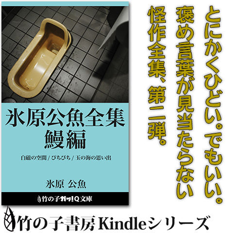

| 「超」怖い話 怪顧: 文庫未収録実話怪談補遺集 (竹の子書房文庫) | |
| 加藤一 | |
| TAKENOKOSHOBO (2016) | |
この本は縦書きでレイアウトされています。ご覧になる端末環境により、表示の差が認められることがあります。
本書は一九九一年から二〇一六年までに発表された実話怪談のうち、原本書籍が絶版となっているもの及び文庫未収録のものを集めた作品集です。このため、本文中に現代の社会常識などに照らし合わせて不適当と思われる表現、言葉、記述、主張が含まれている場合があります。これらは当時の社会情勢、社会規範、体験者・採話者の価値観に基づく内容であり、現在と価値観を同じくしないことがありますが、作中に登場する体験者の記憶と体験当時の世相を鑑み、極力当時の様相を再現するよう心がけています。これは著者、または体験者による差別・侮蔑を意図する考えに基づくものではありません。
また、作品中に登場する人物は執筆された当時存命していた実在の人物ですが、様々な事情を考慮して人名・団体名などを仮名としています。
一九九〇年代初頭、『「超」怖い話』（勁文社）の企画が立ち上がりつつあった。
初代編著者の安藤薫平氏、後に二代目編著者となる作家の樋口明雄氏のお二方が、「怪談本を出す」という。当時、同じ事務所で仕事をしていた僕も声を掛けて頂いた。
その頃、僕は樋口氏の後輩のような弟子のような子分のような、そんなポジションにあって、色々な仕事に巻き込んでもらったり、樋口氏の「ダンディズム」を教授されたりと、何かと可愛がって頂いていた。
「ハジメ、お前も怖い話持ってるんだろ？」
怖い話というよりも、「変な話、奇妙な話」を聞き集めるのが好きだったのであって、恐怖談を集めていた訳ではなかったのだけれど、「お前原稿書け。編集もやれ」と樋口氏にご指名頂いて、『「超」怖い話』に参加することになった。
まさか、その後数十年に亘って続けるライフワークになるとは、この時点では思いもしなかった。
『「超」怖い話』は一九九一年に第一巻を世に送り出すことになるのだが、それより少し先んじた一九九〇年、『新・耳・袋』（扶桑社）という実話怪談本がこの世に産声を上げた。
これは、木原浩勝氏、中山市朗氏の手による仕事なのだが、一九九〇年以前の怪談──実話怪談の有り様を大きく変えるエポックメーキングになったのは、やはりこの一冊だったと思う。
それ以前の怪談は、「後になってみて分かった、怪異が起こる以前の由来」が語られていたり、後日談が必ずあったり、今正に死の淵にいる人の視点で語られていたり、そういう古い形のものが多くを占めていた。また、おどろおどろしく、子供を怖がらせよう、という意図のものも多かった。
ところが、『新・耳・袋』はそれを一変させてしまった。
なぜこんなことが起きたのかは分からない。分からないから書かない。
その後どうなったのかは分からない。分からないから書かない。
装幀も本文デザインも凝っていて、スタイリッシュで大人向けであった。
『「超」怖い話』の打ち合わせに『新・耳・袋』を持ってきたのが、樋口氏だったのか安藤氏だったのかはもう記憶も定かではないのだが、
「こんなやり方をしてもいいんだ！」
と、打ち合わせで顔を突き合わせた面々がものすごいショックを受けていたのを思い出す。興奮しながら、これからはこういうスタイルの怪談が増えていくんじゃないだろうか、みたいな話をしてたっけ。
そうしてできあがった『「超」怖い話』第一巻は新書版で、本の雰囲気も文章も、『新・耳・袋』のようにはいかなかったんだけど、その後、脈々と続いていく「何でもありの聞き書き怪談集」の原初の混沌みたいなものが凝縮された一冊にはなったと思う。
この頃は、一巻分に五十話程度を収録するために三百話分くらいのネタを持ち寄って、著者同士のネタ会議──と称する、著者限定怪談会をしていた。『「超」怖い話』は黎明期からネット（その頃はパソコン通信）との親和性が高く、当時のネットの悪友達から寄せられた話などを延々吟味して、本当に上澄みだけをチョイスしていた。今思えばなかなか贅沢な体制だった。
本書の編纂に当たって、久しぶりに数十年前の原稿のアーカイブを開いてみたら、「結局その頃には原稿執筆には使われなかった未着手の体験談と草稿」が山ほど出てきた。
今でこそ、呪い・祟りに属する話も書くようになったけれど、黎明期の『「超」怖い話』では、「呪いと祟りは扱わない」という不文律があったのだ。
結果、呪い・祟り系の体験談の多くが、そのままお蔵入りとなっていた、という訳だ。
......「聞いた話はできる限り書いて昇華する」をモットーとしている身としては、いずれきちんと書かねばならない話がまた増えてしまったなあ、と。
その後、『「超」怖い話』は一九九一年から一九九七年まで連続刊行され、一九九八年に休刊となった。その一九九八年に、今度は長い休眠から覚めた『新・耳・袋』がメディアファクトリーから復刊された。
「西の新耳、東の超怖」と最初に称して下さったのがどなたなのかも今ではもう分からないのだが、『新耳袋』と『「超」怖い話』には斯様な因縁浅からぬ時代があったのは確かだ。もちろん、『新耳袋』がなければ『「超」怖い話』は今のスタイルに向かっての最初の一歩を踏み出してはいかなかっただろうし、その後のＪホラーブームを経て『新耳袋』が戻ってくるまでの間、『「超」怖い話』が生き延びることもなかったかもしれない。
これは恐らく「縁」という奴だったのだろう、と僕は思うことにしている。
長い枕はここまで。
本書は、一九九一年から二〇〇〇年までの十年間に刊行された勁文社版『「超」怖い話』シリーズ（絶版）の中から、加藤一の執筆分で未だ再刊・復刻されていないものと、二〇〇四年から二〇一六年までの間に方々の雑誌に連載、文庫封入余録として寄稿した実話怪談原稿のうち、文庫未収録となっているものを集めた実話怪談補遺集である。
勁文社版『「超」怖い話』のうち、本書に収録されていないものは、『怖い』『「超」怖い話ベストセレクション 殯』（いずれも竹書房）に収録、復刻されている。本書ではそのベストセレクションからも漏れたものもかき集めている。恐らく九十九パーセントは揃えられたと思う。
なお、二〇〇一年、二〇〇二年は完全に怪談から離れていたので、この時期に商業誌上で発表された実話怪談は目下存在しない。二〇〇三年には竹書房より『「超」怖い話Ａ』が復活し、今日に続いている。
初期の『「超」怖い話』では、各話の収録順について様々に試行錯誤を繰り返していた。
著者順で並べたり、タイトル順で並べたり、テーマ別に分けたり。似たような話はどちらかを没にしたり、或いはなるべく重複しないように遠ざけて配したり、いっそ並べて連想させたり。
そうした経験の蓄積を経て、勁文社版『「超」怖い話』の後期の頃には、概ね僕が手がける実話怪談本の今の定番スタイルに近い構成になっていった。
まず、ガツンと怖い話。それから引き込むような話。毛色の変わったストレンジな話。後半に向かうに連れて段々と重苦しい話が積み上げられていく。
『「超」怖い話』はもちろんのこと、『「弩」怖い話』『「極」怖い話』『恐怖箱』など、僕が編監修に当たっている『「超」怖い話』の眷属たる作品群は、概ねこういう構成になっているはずだ。
しかし本書では敢えてそのルールからは外れてみたい。
一九九一年の『「超」怖い話』無印から二〇一六年の最新作まで、執筆年代順、初出順に並べてみることにした。
怪談を書き始めたばかりで加減も分からない、まだまだ荒削りだった頃の怪談から始めて、研鑽を重ねた最新のものに向かって読み進めて頂くという趣向になっている。
このため、話の並びと強弱軽重などのタイミングについては、普段のそれとは少し違ったものと感じる読者もおられるかもしれない。
今となってはささやかな逸話ですら怖いと思えていた時代のものもあれば、話題を呼んだ既刊の外伝に当たる拾遺が断続的に続き、はたまた後のシモ怪談の黎明が顔を出したり。
また、今では当たり前になった、或いはとうに陳腐化して久しい「当時の最新技術、風俗」についての記述が見られるものもある。携帯電話が普及していなかった時代の話だってある。実話怪談としてだけでなく、一昔も二昔も前の時代に語られた、時代の逸話のタイムカプセルとしてもお楽しみ頂けるかもしれない。
「──大掃除をしていたら、日記帳と昔のアルバムが出てきた」
本書をそんな一冊としてご覧頂けるならば、著者としては僥倖の限りである。
枝原君と竹沢君の話である。
人の集まるところには奇怪な現象がよく起こる。例えば空港、都会の雑踏に聳え立つビル、古くからの公園、そして遊園地。華やかなアミューズメント・テーマパークである東京ディズニーランドにもそういった奇怪な現象を起こす「もの」が棲み付いているようだ。
そして、そういった場所で何度も奇怪な現象に出くわすと、見えなくてもいいものが見えてしまうという能力が身に付いてしまう。
枝原君と竹沢君は、何人かの年齢の近い親しい友人達とともに元旦を東京ディズニーランドで過ごした。幾つかのテーマ・パビリオンを楽しんだ枝原君達は、ＴＤＬの誇るお化け屋敷「ホーンテッド・マンション」に入った。
大学受験を控えた枝原君を始め友人達は皆二十歳前後に達しており、さすがに「お化け屋敷が怖い」という歳でもない。
数々の不可解な体験談を持つ枝原君に至っては「作りモノが怖いことあるかい！」とばかりに、意気揚々とホーンテッド・マンションに挑んだ。
真っ暗な順路のあちこちに作り物の幽霊が立っている。ぼうっと光るもの、ゆらゆらと動くもの。それらしいＢＧＭに混じって微かな絶叫が聞こえてくる。
「きゃあ！」
「いやあ！」
女の子達が作り物の幽霊に悲鳴を上げる最中、竹沢君は特に仕掛けのされていない物陰やシャンデリアの上などを見つめながら黙って順路を進んだ。
時折、何もない場所でよろめきながら。
「......いるな」
「ああ......いる」
独り言のように呟いた竹沢君の言葉に反応しているのかどうかは知れないが、枝原君も順路の虚空をじっと見つめながら何がしかの数を数えている。
暗く長い順路が途切れ漸く出口が近付いてきたとき、竹沢君は真っ青な顔をして枝原君に訊ねた。
「......おい。いたよな？」
「いたいた。四つくらい見えたね」
「あれはやっぱりそうだよな？」
「うん、間違いないんじゃないかな」
ヒソヒソと話し込む二人に気付いた友人達が枝原君と竹沢君に訊ねた。
「何？ 何かいたの？」
「いやあ、お化けがちょっと」
「お化け屋敷だもの。お化けがいても不思議はないんじゃない？」
「いや、そーじゃなくてね......混じってたんだよ。作り物の中に『本物』のお化けがさ」
人造のお化け屋敷から太陽の光の下に出たとき、お化け屋敷で気力を使い果たした竹沢君は、力つきその場で腰を抜かしてしまったのである。
江戸っ子の各務君の話である。
三年ほど前、江東の実家に住んでいた各務君は徳川慶喜公の墓参に出かけたことがある。先祖代々関東平野に住み着き、江東に移ってから既に三代に渡るという各務君は、生粋の江戸っ子である。
平将門によって拓かれた関東は、北条家から江戸幕府を開いた徳川将軍家へ、明治維新を経て薩長によって打ち立てられた明治政府へと、その時々の権力者によって奪い合われてきた。日本に長く続いた封建時代は何代にも及ぶ権力者達と、権力の簒奪者達を生み出したのである。
さて、徳川家墓地は東京都台東区上野にある、谷中霊園の中ほどの場所にある。上野駅と日暮里駅の丁度中程の場所にある谷中霊園は、周囲を天王寺、安立院などを始めとする多くの寺院によって囲まれた五〇〇メートル四方にも満たない墓地である。特に墓地の西側には、夥しい数の寺院が密集している。
この谷中霊園に神道形式で葬られている将軍は十五代将軍・徳川慶喜公のみである。その他の歴代将軍のうち家康公は日光東照宮に、それ以外の歴代将軍は芝増上寺と上野寛永寺などにそれぞれ葬られている。
日本人特有の判官贔屓からか、江戸っ子の将軍贔屓からか、最後にその権力を簒奪された徳川将軍の家系は、古くから関東に住まう江戸っ子達にとって微かな憐憫を寄せる対象であるようだ。
そういう背景もあってか、各務君にとっても徳川家はまったく無縁の存在という訳でもないらしい。
「江戸っ子なら、徳川さんの墓参りぐらいしなくっちゃ。何てったって、谷中霊園に墓があるのは慶喜さんだけなんだから、江戸に住んでる奴が誰か行ってやんなきゃかわいそうってもんだよね」
そう言って各務君は谷中霊園へ勇んで出かけていったのである。
各務君が谷中霊園に足を踏み入れたのは、その日の午後の遅い時間だった。
「......っかしいな」
慶喜公の墓を目指して墓地の中の道を進むのだが、一向に墓にたどり着くことができないのである。何度となくそれらしい場所を歩き回り相当な時間を費やしたのだが、とうとう慶喜公の墓は見つけることができなかった。
仕方なく墓参を諦めた各務君は、不忍池へ向かおうとした。
が、今度はなかなか墓地の外に出ることができない。
不忍池は谷中霊園から南へ二十分ほど歩いた所にある。大して遠い距離ではないし、墓地の中を巡る道を歩いているのにも関わらず、どうしても墓地の外に出ることができない。
そして、ふと気付くと廃墟のように崩れ去った不気味な無縁墓の前に出てしまった。
「おかしい......」
歩く道を変えてみることにした。
まっすぐ、まっすぐ、まっすぐ......周囲はどこを見ても墓ばかり。ここだ、と思ってふと顔を上げると、再び無縁墓の前に出てしまう。
「道なりに歩くからいけないんだな。少し曲がってみよっと」
だが、どの道を何度通ろうと結果は同じだった。まっすぐ歩こうと道を曲がろうと、必ず同じ無縁墓の前に出てしまうのだ。
かれこれ三時間ほど歩き続けたが結果は同じだった。日暮れ時が訪れた。夜の帳が近付いてくる。
「このままでは、夜になってしまう......」
各務君の脳裏に、夜の墓地に取り残される恐怖がよぎった。
と、そのときである。ふと前方を見ると番傘をさして歩いている着物姿の女性が見えた。
着物に番傘。長く江東に暮らし、芸者姿を見慣れてきた彼にとっては、何の不審も抱かない服装ではある。が、もう少し彼が落ち着いていたら、そんな姿の女性が、しかも日も暮れようとしている墓場にいることは幾ら何でも不自然だということに気付いていたかもしれない。
しかし逢魔が時を墓場で過ごした各務君にとって、既に縋れるものは他になかったのである。
（このままついていけば出られるかもしれない......！）
各務君は迷うことなく番傘と着物の女性の後を追った。それから暫くの間各務君は薄暗い墓地の中を歩き続け、今度はやっとの思いで谷中霊園を脱出することができた。
礼を言おうと顔を上げたとき、女性の姿は既になかった。どういう訳か、その女性の姿は後ろ姿しか記憶には残っていなかった。
もしもあのとき番傘の女性が現れなかったら、各務君は谷中霊園からずっと出られなかったかもしれない。
各務君は、あれから三年経った今でも時折、谷中霊園の入り口にぼんやりと立っている自分に突然気付くことがあるという。
「何か知らないんだけど、気が付くといつもそこに立ってるんだよね」
取材中に加藤が体験した話である。
「超怖い話」は各方面の多くの方々にご協力を頂いて執筆されている。おかしな体験をしたことのある知人友人には、取材中大変お世話になっているのだが、加藤自身が今回の取材の最中に出会った奇妙な体験について触れておくことにする。
加藤は小金井のとある喫茶店で、本編中に何度かご登場願った東沢氏の体験談を取材させて頂いた。前述の時計の話や修整液の話を始め、幾つかの不思議な体験談をお話し頂き、取材は終始滞りなく進んだ。
取材も終わりに近付いたとき、東沢氏は思い出したように呟いた。
「ああ、そうだ。もうひとつおかしな話があるんですが......ただこれは内密に、絶対に誰にも漏らさないで頂きたいんです。加藤さんを信用してお話ししますけど、これだけは記事にしないで下さい」
この後お伺いした「誰にも漏らしてはいけない話」に関しては、東沢氏との約束のためその内容を明らかに記すことはできない。
お話を伺った直後である。
「......という訳でこれは書かないで下さい」
「はあ、分かりました」
頷きながらテーブルに目を落とすと、最前までメモを取るのに使っていたペンがキャップを残してなくなっている。
「あれ？」
メモパッドの頁の間に紛れ込んでいるのかと思い、頁を繰ってみるが見つからない。加藤は無意識のうちにペンをしまい込んだのかと自分を疑い、コートのポケット、テーブルの下、椅子の後ろを探ってみるがペンは一向に見つからない。開けたキャップをペンの後ろに付けたままにしておいたのだから、キャップを残してペンだけがなくなるはずはない。
東沢氏が、いそいそとペンを探す私の不審な挙動に気付いた。
「どうしました？」
「いや、ペンが......」
仕事がらいつも大量の筆記具を持ち歩くのだが、どういう訳かその日は出がけにバッグに入れたはずのペンケースが見当たらず、たまたま携行していた予備のペン一本だけで取材を行っていた。
しかし、そのペンがないとなるとこの後の取材そのものができなくなってしまう。
「だって、さっきまでそのメモの横に置いてたでしょう？」
「やっぱりそうですよねえ......」
空虚な笑いをしてみたものの、確かにペンはなくなっていた。
加藤が使い掛けのペンをメモパッドに挟んでいたことは、東沢氏も記憶している。テーブルの右手には東京二十三区の地図が、左手には喫茶店のティーカップがあった。メモパッドとペンはその中央に置かれていたはずで、もしテーブルの下にペンを落としたとするなら、それらのテーブルの上の障害を越えていかなければならないはずだった。
「テーブルから転がってバッグの中にぽろっと入った......ということはありませんか？」
取材道具を詰めたバッグは椅子の下に横倒しに置かれていた。念のためバッグの蓋を開けてみる。バッグの上層にはマフラーが隙間なく詰め込まれ、ものが入り込む余裕もない。
「もしかしたら『今の話は書くな』という警告では？」
「......いや、そんな......はははは」
書いてはいけない話を伺った直後、一応、メモは書き残しておくつもりであったのは確かなのだが、こうまであからさまに実力行使の「警告」をされたのでは敵わない。祟りを恐れたという訳ではないが、加藤はそれを書き留めることを本心から諦めた。
「分かりました。今の話は聞かなかったことにしましょう」
「そうですね、忘れて下さい」
加藤と東沢氏は互いに虚ろな笑いを交わした。
「とはいえ、このままでは取材になりませんしね......」
加藤は予備の予備でもないものかと再びバッグの中をかき回した。バッグの最深部に手を入れたとき、使いなれたモノの感触が指先に触れる。
「さっきはあれだけ探しても見つからなかったのにい！」
ペンが見つかったのである。
こうして狐に抓まれたような奇妙な気分を残したまま、取材は切り上げられた。
読者諸氏は「それは単に捜し物が下手だっただけなのではないか」と思われるかもしれない。しかし事の次第の当事者として断言しよう。
数分の間、確かにペンは消失していたのである。
虫の知らせという言葉がある。親族の不幸を予感したときに使う言葉であるが、何かとてつもない大事件が起こるとき、それを事前に察知してしまう能力を持った人間は意外に少なくない。
彼らは大事件が起こるたびにそれを感知している。
枝原君の場合。
当時小学生だった枝原君は、同級生達と真っ暗になるまで遊び歩く毎日を過ごしていた。その日もとっぷりと日が暮れるまで近所の公園で遊んだ枝原君は、晩のおかずを頭に思い浮かべながら家路を急いでいた。
「あ......」
そのとき、背筋にぞくりと悪寒が走った。
小学生の枝原君には、そのとてつもなく嫌な予感が何を示しているのか、さっぱり分からなかったのだが、幼い枝原君がそれを気にすることもなかった。
夜半過ぎ、その年最大の惨事となった一大ホテル火災事件「ホテル・ニュージャパン火災」が発生した。
飯嶋君の場合。
当時高校生だった飯嶋君は、高校に入って初めての夏休みを過ごしていた。その日、巷では行方不明になった航空機の話がちらほらと聞かれてはいたが、クラブ活動に勤しむ飯嶋君にとっては大して気になることではなかった。
「あ......」
そのとき、背筋にぞくりと悪寒が走った。
行方不明の旅客機が長野の山中に墜落し、航空機事故史上最悪の惨事として忘れることのできない大事故「日航機墜落事故」が起きたのは、その日の夜遅くであった。
竹沢君の場合。
当時高専生だった竹沢君は、学校の敷地の中にある寮の一室に住んでいた。その日、授業を終えた竹沢君は、早めの夕食にありつこうと寮の食堂を目指した。
「あ......」
そのとき、背筋にぞくりと悪寒が走った。
「何だ何だ、今の悪寒は......風邪でも引いたかな？」
背中を走る謂われようのない感覚を不快に思いながら、竹沢君は夕食のトレイを片手にテレビのそばの席に座った。点けっぱなしのテレビが不意に番組を中断して流したニュース速報は「中国・修学旅行列車脱線衝突事故」の現場からの中継報道だった。
「......そうそう。そういえば大阪の千日デパート火災のときもそうだったよなあ」
枝原、飯嶋、竹沢君は、共通の体験を話し合っていた。どうやらそういう体験をしていたのは自分だけではなかったらしいのである。
「やっぱり？ 俺もあのときに凄くいやな感じがしてさあ。帰ったらデパート火災でたくさん死んだって言うじゃない。びっくりしちゃったよ。ほんとの話」
「飛行機事故とか火事みたいに人がたくさん死ぬときって、どうしてあーいう嫌な悪寒が走るんだろう」
「それって、虫の知らせって奴なんじゃないの？」
「あ......」
そのとき、三人の背筋にぞくりと悪寒が走った。
「もしかしたら、どこかで大事故が起きたかもしれない......」
竹沢君は不安げに呟いた。
......その日、湾岸戦争勃発後初めて、イラクのスカッド・ミサイルが実戦に使用された。
琢原君がスキーに行ったときの話である。
今から三年くらい前、琢原君は友人達と連れだって蔵王ヘスキーに出かけた。
山の奥へ進むにしたがって、野山や道路に積もる雪の量は次第に増えていった。
「そろそろチェーン巻こうか」
チェーンを装着するために路肩に車を止めると、前方に同じように車を止めたカップルがいた。
琢原君達の車に気付いたカップルの女のほうが、愛想のいい笑いを浮かべながら近付いてきてこう言った。
「すみませぇん。手が足りないのでチェーンを巻くのを手伝ってほしいんですが」
「ええ、お手伝いしましょう」
琢原君達は快くカップルの車のタイヤにチェーンを巻いた。すると、今度はカップルの男のほうが照れたような笑みを浮かべながら言った。
「どうもありがとうございました。お返しに、そちらのチェーン巻きもお手伝いさせて下さい」
せっかくの申し出であるし、少しでも早くスキー場へたどり着きたいという逸る気持ちもあったので、琢原君達はカップルの手を借りてチェーンの装着を終えた。
チェーンを巻き終えて工具をトランクに片付けていると、先に片付けを終えたカップルの車は、「お先に」と挨拶を残して走り出した。
ほどなくして、琢原君達の車も、積雪の増え始めた山道を走り出した。
前を走るカップルとの差は一分くらいであっただろうか。暫くの間、カーブのたびに彼方に見え隠れするカップルの車の後ろを、つらつらと走っていた。
カップルの車との車間距離がだいぶ縮まり、そろそろ追い付くなと思っていた頃、その車が視界からふっと消えた。同時に、さっきのカップルに手伝ってもらって巻いたタイヤのチェーンが突然外れてしまった。
「何だ !? 」
不意に抵抗を失ったタイヤが凍りついた路面を滑り、琢原君達の乗った車は大きくスピンして、危うく崖から転落しかけた。
「うぉぉぉぉぉぉぉぉぉぉぉぉぉぉぉ !? 」
血色を失った琢原君は必死にハンドルを切り、どうやら転落事故だけは免れた。覗き込むと、生きた心地はしない。それほど険しい断崖だった。
「くそ！ あのカップル、チェーンの巻き方知らんのじゃないか !? 」
そして琢原君達は、外れたチェーンを再び付け直し、何とかスキー場までたどり着いた。
二カ月ほど前。琢原君達が転落事故を起こしかけた丁度その場所で、琢原君達とまったく同じような状況の転落事故があった。
「......何でも、犠牲者は蔵王へ向かう途中のカップルだったとかで......事故車の車種と色がね、僕らの車にチェーンを付けてくれたカップルのと同じだったんだよね」
白葉君の目撃譚である
霊を見た！ という話はよく聞くが、具体的にどう見えたという話は意外と聞かない。多くの場合「世にも恐ろしい表情で」「怖い顔をした人が」という、凡庸な表現で言われてしまう。
また見た本人は本人で、突然現れたよく分からないモノに驚いて気が動転してしまっているから、何を見たのか説明させようとしても言葉が足らない。
おまけに驚いてその場から逃げ出してしまって、自分が何を見たのかは覚えておらず「とにかく怖かった」という感想しか伝わってこない。
こういう話を聞くと、どうしても「またまたあ」という懐疑の念しか浮かんでこないのは仕方のないことかもしれない。
小樽出身の白葉君は、高校を卒業してすぐ神奈川の大手家電メーカーに入社した。
ある日彼が寮から駅までの道を歩いていると、Ｓ字になったカーブの途中にある電柱の横に何かぼやけた靄のようなものが見えた。
「ん？」
道路の片側は開けており、もう片側はどこまでも塀が続くごくありふれた住宅街である。
白葉君がその靄のほうに向かっていくと、それは段々形がはっきりしてきた。近付けば近付くほど、靄はある一定の姿を形作っていく。
最初は後ろの風景が透けて見え、ただ白い靄っぱいものがそこだけに漂っているようにしか見えなかったのだが、そこに近付くうちに靄の背景が濁って見えなくなった。
靄が実体化するに従って、その輪郭部分がはっきりしていった。最初のうちは近眼か乱視の人のように輪郭線がダブって見えていたのだが、それは次第に特定の形に定まっていく。
白葉君の歩みが進めば進むほど、それはピントが合うかのようにくっきりしてきた。
「んんん？」
その靄はいつしか、白装束に身を包んだ男の姿になった。足下などまだ幾分半透明なままの所も残っている。
ここで白葉君は今来たばかりの道を少しだけ戻ってみた。
すると、先程まで輪郭がはっきりして実体に近付きつつあった白装束の男の姿が、再びぼやけ始めた。
「こりゃ、おもしろい」
再び用事のある方向へ踵を返した白葉君が白装束の男のほうへ向かって近付いていくと、男の姿はまたはっきりと見え始めた。
ところが、ある線を越えた辺りから、男の姿が霞み始めた。今度は男のほうに向かって歩いているにもかかわらず、である。
Ｓ字カーブの中程に差し掛かり、白装束の男の立っている電柱が白葉君の死角に入る。
再び電柱が見えてきたとき、もう男の姿も白い靄さえも見えなくなった。
男が立っていた辺りまで行ってみたが、やはり男の姿は見えなかった。
河西君の不可解な夢の話である。
悪夢に魘されて目を覚ますことは、決して珍しいことではない。人によっては、同じ情景の夢を数日に渡って続けて見ることもある。
だが、河西君の悪夢は数日では済まなかった。
ある晩、河西君はとてつもない悪夢に魘されていた。
何か巨大な恐ろしい顔が、森の奥から自分を追ってやってくる。自分はその顔から逃げようともがく。
そして目が覚める。
「......はあ」
最初はその程度だった。
だが、それは始まりに過ぎなかったのである。
夢はいつも同じ場所で同じ何かに追われるものだった。その夢は幾晩も幾晩も続いた。数日などといった単位ではない。数カ月以上に渡って幾夜も同じ夢が繰り返されていったのである。
まったく同じ内容に思われた夢は、次第にエスカレートしていった。
否、少しずつ夢の中のシーンが進行していったのである。
森の奥からやってくる恐ろしい顔に追い付かれてしまったら、恐らく夢の中の自分はその恐ろしい顔に殺されてしまうであろうことまで、はっきりと分かっていた。
逃げなければと思いながらも、恐ろしい顔は毎夜の夢の中で次第に河西君に追い付いてきていた。
「最近じゃ、あいつの手が僕に届きそうなんですよ。あと数カ月以内かなあ」
先日会ったとき、河西君はそう言って力なく笑った。
悪夢が始まっておよそ二年が過ぎた。
そろそろ彼の気にしていた夢の結末が訪れる頃だが、その後、彼とは連絡が途絶え、二年越しの夢の結末を訊くことはできなかった。
最後に会ったときの彼の言葉は、今も耳から離れない。
「夢の中で追い付かれて殺されたら、僕はどうなるんでしょうね......」
白葉君が小樽にいた頃の話である。
翌年の卒業を待つばかりとなった高校三年の冬、白葉君は仲のいい友人の家に入り浸る日々が続いていた。受験を控える友人達に比べ、既に就職も決まり、白葉君は文字通り悠々自適の日々を過ごしていた。
当時、白葉君が住んでいた家とある友人の家との間には、『毛無山の幽霊屋敷』と呼ばれる、地元ではあまりよくない噂で有名な屋敷に通じる直線道路があった。この直線道路は、さしたる障害物もなく素晴らしく見通しがいい道路であるにもかかわらず、やけに交通事故の多い所だった。
友人の家との直線距離はおよそ五～六百メートルといったところか。
雪深く、隣家を訪ねることも容易ではない冬の北海道である、ということを考えに入れるなら近いと言える距離ではないが、決して遠い距離でもない。通い慣れた道でもあり、地理的には少々の気味悪さを我慢すれば、普段の白葉君ならどんなに遅い時間になったとしても一人で歩いて帰ってこられる場所だった。
だが、その晩だけはなぜか一人で帰る気になれなかった。
たったそれだけの距離を、しかも高校三年生にもなって......と思われるかもしれない。しかし、そう思われても構わないほどに、その晩は一人で帰るのが怖かった。
そこで、友人の家で電話を借りた白葉君は、母親に迎えに来てくれるよう頼んだ。
「そう、今こいつの家にいるんだけど、車で迎えに来てくれない？ うん。あ、そうそう。どんなに時間が掛かってもいいから、今夜だけはできるだけ気を付けて、ゆっくり走ってきて。そう、特にあの道路」
白葉君は胸騒ぎを感じながら、母親に念を押した。母親が車の免許を取ったばかり......という訳でもないが、妙な心配がよぎるのだ。
暫くして白葉君の待つ友人の家に、母親の車がたどり着いた。
ほっと一安心はしたものの、まだ胸騒ぎは収まらなかった。
「帰りもゆっくり行こうね」
白葉君母子を乗せた車は、毛無山の幽霊屋敷からまっすぐ離れていく直線道路を、ゆっくりとゆっくりと走っていった。
時間は既に夜中の二時を回っていた。
白葉君の母親は、対向車も横断車もいないひっそりとした交差点を、青信号であることを入念に確認してから車を走らせた。
信号を越えてから白葉君はふと背後を振り返った。
リア・ウインドウ越しに、今、車が越えたばかりの交差点の横断歩道を渡っている誰かの足が見えた。
が、見えたのは「足」だけだった。
「 !? 」
レインブーツを履いた膝から下だけの足が、交差点を渡っていたのだ。
膝から上はぽっかりと抜けて何もない。電柱や建物など、背後の風景が透けて見えるばかりである。
交互に歩みを繰り出す、男のものとも女のものとも知れない膝下だけの足は、車が交差点から離れるにしたがって次第に小さく遠くなり、その他の風景と同じように闇の中に溶けて見えなくなった。
リア・ウインドウ越しに蒼白な顔で闇を凝視していた白葉君は、今、自分が見てしまったものについて同意を求めようと、隣でハンドルを握る母親に向き直った。
「今の見た？」
だが、母親は無言のままだった。
彼の母親もまた、ルーム・ミラーを凝視したまま蒼白になっていたのである。
不可思議なことが起こるのが、人間や場所を巡ることばかりだと思ったら大間違いである。
日常、人間が関わる様々な道具達にも不可思議なことは起こる。
河西君の家の電話機（有線電話）を巡る話である。
ある晩、河西君は、次の休日の予定のことで、友人の伊藤君と電話で話し合っていた。
相談すべき用件が済んで会話は雑談に移ったが、伊藤君は自分達の話し声の他に妙な声が聞こえてくるのに気付いた。
受話器の向こうがやたらにざわついている。まるで雑踏の中から電話をしているかのようだ。特に、誰かが何かを呟くぶつぶつという低い声が気になる。
伊藤君は、河西君に訊いた。
「もしもし......？ そっちの電話ってお婆さんの部屋にあるの？」
『え？ 違うよ？』
「誰かが念仏唱えてるのが聞こえるんだけど......」
念仏を唱える声は、次第に大きくなっていく。
「混線かな......」
『多分違うと思う......いや、よくあることなんだ』
不意に河西君は言った。
『もうじきこの電話切れるから』
「あ、悪い。何か用事があるの？」
『いや、そうじゃない。電話がざわついてるから、多分、そのうち自然に切れると思う。そしたらこっちから掛け直すね』
プツッ。
河西君の予告通り、電話は数秒も置かずに途切れた。
再び河西君から掛かってきた電話を取った伊藤君は開口一番に訊いた。
「何今の？ そっちの電話、調子悪いんじゃないの？」
すると、河西君はいつものこと......といった調子で言った。
『よくあることなんだ。どういう訳かあの念仏が聞こえてくると、いつも電話が切れちゃうんだよな』
瀬戸内君が高校生だった頃の話である。
文化祭。
普段、学舎として勉学に励むためにある学校が、学外の者に開放される学校行事である。
多くの高校がそうであるように、瀬戸内君の高校の文化祭でも「お化け屋敷」という企画が催された。例年の人気企画となっているお化け屋敷は、その年は三年のある教室におどろおどろしい装飾を施して行われた。
男子校である瀬戸内君の高校では、文化祭にやってくる他校の女子高生を目当てに、お化け屋敷の企画に参加する者が多かった。
それとなく目当ての女子高生をお化け屋敷に案内し、あわよくば仲良くなってしまおうという下心見え見えの企画であった。
これまでにお化け屋敷をきっかけに彼女を得てきた先輩達を目の当たりにしてきた訳だから、つまりこれは生徒達にとっても辞められない伝統行事のひとつであった。
生徒達は代わる代わるお化けの役を務めながら、目当ての女の子達に声を掛けていた。
中でも要領が悪いのか驚かすのが好きなのか、棺桶から飛び出して見物人を驚かすという、とんでもない役目を負わされた中西という先輩がいた。
お化け屋敷は早々に店仕舞いをし、生徒達は、運よく獲得した女の子達との楽しい時間を過ごした。
そして、文化祭も終わりに近付いていた。
「瀬戸内、中西先輩知らないか？」
「いや？」
飾り付けの幾つかが取り外され始めたが、棺桶に籠もっていた中西先輩が見当たらなかった。
「もう、みんな引き払っちゃってて、ここには誰も残ってないはずなんだけどな」
瀬戸内君達は、中西先輩が入っていた棺桶に手を掛けた。ずっしりと重い。どうやら、まだ棺桶の中に入っているらしい。
「なんだあ、先輩。まだいたんですか？ 僕らを驚かそうったって無駄ですからね。そこにいるのは分かってんですから......」
瀬戸内君と同級生が棺桶の蓋を開けたとき、中には確かに中西先輩が入っていた。
だが、彼の髪は白く変わり、その目は虚ろで薄笑いを浮かべていた。
発狂していたのである。
彼がその狭い棺桶の中でいったい何を見たのかは、今となっては分からない。その年の暮れに、あの教室でお祓いが行われた。
そして、その翌年から瀬戸内君の高校ではお化け屋敷は禁止になった。
学校側が「何に対して」お祓いをしたのか、未だ生徒達には明かされていない。
下館君と枝原君のお守りの話である。
様々な災難から身を守るために「お守り」があるが、日常において我々の命に関わるようなことが起こることは稀である。
よく祖母や祖父から「お守りが守ってくれているからだ」という話を聞かされたことがあるが、そうするとお守りというのは「災難が来ないように、予防してくれているありがたい呪符である」ということになる。
若い頃の下館君は、とあるアイドルの追っかけだった。
日本全国を縦断するアイドルのコンサート・ツアーの後を追っかけて、同じ追っかけ仲間達とともに車で移動することが当時の彼の日常だった。
「あんたがどこで何をしているのか知らないけど、危ないことはしないでね」
家を出る前に母親に渡されたお守りは、彼のズボンのポケットに入れっぱなしだった。
その日、高速道路をひた走っていた下館君達の車は、宮城県白石のインターの近くで大事故を起こしかけた。
「あ、危ねえっ !! 」
不意にハンドルを取られた車は、百キロ以上のスピードのまま、三車線ある道路の一番左から右まで一気にスリップしたのである。ドライバーの意志を無視した車は、あわや大転倒の挙げ句道路の外に転落するところだった。
ハンドルを握っていた仲間の咄嗟の判断で辛うじて事故を免れた下館君達は、気を落ち着けようと手近のパーキング・エリアに飛び込んだ。自動販売機のジュースを片手に一息吐いた下館君達は、先程の恐怖を思い出して改めてゾッとした。
下館君がふと思い出してズボンのポケットに手を入れると、最前までそこに入っていたお守りがなくなっていた。
枝原君がまだスキーを始めたばかりの頃のことである。
白銀の斜面に慣れ始めると、少しでも長く滑っていたくなるのは人情と言うものであろう。
ボーゲンを覚え、一応それらしく滑ることができるようになった枝原君は、林の中を巡る長い林間コースを探し、リフトでより高い場所まで登った。
じわじわと滑っていくうちに変化に富んだ斜面にも少しずつ慣れていった。
枝原君は、林の隙間から隣のコースに移ろうと、薄暗い樹々の間から明るい空間へ飛び出した。
が、そこにコースはなかった。
枝原君の身体は、それまで滑ってきた勢いに乗り、足場も何もない空中を舞った。
「......！」
彼は覚悟を決めた。
......雪面にバウンドして倒れ込んだ枝原君が失神していたのは、ほんの束の間だったらしい。
意識を取り戻した枝原君は、雪を払いながら自分が落ちてきた斜面を見上げた。が、それは斜面などという甘いものではなかった。そこは、高低差はおよそ三十メートルはあろうかという、瘤と僅かな低木の枝葉と剥き出しの岩に化粧された崖だった。
そこから落ちて生きていられる高さではなかった。だが、枝原君は骨折どころか傷ひとつ負わなかったのである。
枝原君がふと思い出して首から掛けていたお守りに手を伸ばすと、お守りは紐を残して消え失せてしまっていた。
お守りの効力が発揮されるような災難に遭遇すると、どうやらお守りは力を出し尽くした挙げ句に消え失せてしまうものらしい。
もし、あなたが持ち歩いているお守りをなくしてしまった経験を持っているとするなら、あなたはあなたの知らないうちに、何か命に関わるようなとてつもない災難をくぐり抜けていたのかもしれない。
馳皇さんの自宅の話である。
夜半過ぎになると、受験勉強をしている彼女以外は皆寝静まる。玄関近くにある馳皇さんの部屋では、両親の寝息や風の唸る音、家のきしみなど、家中の音が聞こえてくる。
ある晩、馳皇さんの部屋から両親の寝室を挟んで反対側にあるトイレに向かって、誰かが廊下をてくてくと歩いていく音が聞こえた。
足音は廊下の角を曲がり、トイレのドアを開けた。
用を足し、水を流し、手を洗う音も聞こえる。
そして、「ばたん」とやや乱暴にトイレのドアを閉める音が聞こえた。
（ああ、あのドアの閉め方はお父さんだな。トイレに起きたのかな......）
と、馳皇さんが思った瞬間、てくてくと歩いて廊下を戻ってくる足音と重なって、隣室から寝ている父親のいびきが聞こえた。
父親のいびきをよそに、足音は再びてくてくと廊下を歩いて通り過ぎていった。
七月に入ったばかりのつい先日、私（加藤）の妻の実家で法事があった。
それは妻の亡くなった祖父母の法要で、義父母一家と親戚一家の二家の合同で行われた。
前日の晩から妻の実家に泊まりがけで出かけることになったとき、普段あまり怪異譚に興味を示さない妻が、ぽつりとこう言った。
「うちのお爺さんが亡くなってすぐにお婆さんも逝っちゃったのよ。仲良かったからね、お爺さん達。あれは絶対にお爺さんがお婆さんを呼んだんだと思うな」
法事の当日、義母は花屋から幾つか季節の花を買い求めた。なかなかいい色合いの花が揃ったのだが、今ひとつ物足りない。
──そういえばおばあちゃん、百合が好きだったわねぇ。
そのときは後で買っていこうぐらいにしか思っていなかった。
義母は、やってくるはずの千葉の親戚一家に電話を掛けた。
「もしもし？ お墓に生けるお花なんだけど、そっちから持ってくるの大変でしょう？ うちで用意したから、無理して持ってこなくてもいいわよ」
祖父母のお墓は妻の実家に程近い武蔵野にあった。
「え、そう？ でも、うちにお花が届いちゃったのよ。そう、特に頼んでないんだけどねぇ、間違いか何かみたいで。もったいないから持っていこうと思って」
「あら、そうなの。だったら持ってきてくれると、おばあちゃん達もお墓で喜んでくれると思うわぁ。ところで何の花なの？」
「百合なのよ」
お墓に向かう途中、そんな話が出た。
「不思議なこともあるものね」
話をしているうちに、車は目的のお墓に着いた。
その日は雲ひとつないよく晴れた真夏日だった。三十八度を超える気温のうえに、まったくの無風だった。日光を浴びた墓石の輻射熱で、墓地はサウナのようにうだり返っていたが、風が殆どないためその熱気はどこにも抜けていかず、参列した我々は誰もが倒れそうなほどの炎天下に身を晒していた。
暫くすると大汗をかいた坊さんがやってきて、剃髪した頭に大粒の汗を浮かべながら読経を始めた。
ふと墓石のほうを見ると、墓石の裏手にある低木の枝が揺れている。
この墓地では、幾つかの区画ごとに目印になるようにと何種類かの草木が植えられている。丁度祖父母の墓石の裏にも草木が生えていたのだが、その中の一種類だけが枝葉を揺らしているのである。
「......？」
一緒に生えている他の草木はまったく揺れていない。揺れている低木よりもずっと軽くて柔らかそうな葉を持っている草もあるのだが、そちらは微塵も揺れていない。
私は薄目を開けて辺りを見回してみた。このまま火の手が上がってしまってもおかしくないほどの暑さに至ってなお、風はまったくない。
まったくないのに、枝は読経の間中ずっと揺れ続けていた。
後で妻にその話をこぼすと、彼女は事もなげに言った。
「お爺さん達が来てたんじゃないの？」
光井さんはよく持ち物をなくす。が、それはいつも必ず手元に戻ってくる。
ふと気付いたら、大学に入ったときに買った財布とお揃いの、お気に入りのパスケースがなくなっていた。
どうやら、ついさっき降りたバスの中でスリにやられたらしい。
「あちゃー......まだ定期の期限、残ってたのになー」
形も大きさもよく似ていたせいか、財布と間違って持っていかれてしまったようだ。定期以外に金目のものが突っ込んであった訳でもないし、かといって使い掛けの他人の定期を換金する術もないだろうし、およそ戻ってくる可能性はなさそうだ。
光井さんがパスケースを諦めて暫く過ぎた頃、見知らぬ相手から電話が掛かってきた。
「あのう......光井さんですか？」
「はあ、そうですが......」
年老いた男の声は、戸惑い気味に光井さんの名前を確認すると、少し嬉しそうな口調で用件を伝えた。
「あのね、私、廃品回収をやってる者なんですけど、あなたの定期入れが廃品の中に混じってたんで、もしかしたら困ってるんじゃないかと......はい」
光井さんはバスを乗り継いでも二時間近く掛かる郊外に向かった。
夫婦揃って廃品回収を生業にしているというその老人は、人の良さそうな柔和な笑みで光井さんを迎えてくれた。
「あなた、運がよかったね」
そこには埋もれてしまうほど大量のゴミとも付かない廃品が積み上げられていた。
「ゴミや古新聞ばっかりでびっくりしたでしょ。何しろ、こんだけたくさんゴミみたいなもんばっかり集まってくる商売だから、普通はいちいち間に何が挟まってるなんて確認しないんですがね。たまたま、古新聞の束が崩れてきたんで中を見たら、この定期入れが挟まってて」
光井さんにお茶を勧めながら、老夫婦は目を細めた。
「それだって、普段だったら気にも止めなかったんだろうけど......あなた二十歳だっけ？ 丁度、うちの孫娘と同じくらいなんで、困ってるんじゃないかって。でもねぇ、どこの誰だか分かんない廃品回収なんかやってるような者が電話入れたって、若い娘さんじゃ嫌がるかなんて思ったんだけどね。こうして、こんなところまでわざわざ来てくれて嬉しいくらいですよ」
パスケースを盗ったスリは、自分が盗ったものが財布ではないことに気付いて、足が着く前にとそれを捨てたのだろう。川や薮にでも投げ込まれていたら、恐らく出てこなかっただろうが、たまたま彼は新聞に挟んでちり紙交換にでも出したらしい。これがひとつ目の幸運。
普通は中も確認しないで燃やしてしまうか再処理に回されてしまう古新聞の束を、それも無数にある束の中から、たまたまパスケースの入っている束を廃品回収の老夫婦が解いてくれたのが、二つ目の幸運。
更にその老夫婦が光井さんと同年代のお孫さんを持つ親切な人々だったことが、三つ目の幸運。
偶然が幾つも重なった結果、パスケースは大冒険の果てに光井さんの手元に戻ってきたという訳だ。
老夫婦は、光井さんのなくし物を見つけてくれたばかりか、それを受け取りにやってきた光井さんを、これでもかというほどもてなしてくれた。
別れ際、老夫婦は名残を惜しんで「また遊びにきてほしい」何度も念を押しながら光井さんを見送った。
「だって、パスケースは返ってくるし、親切な人と知り合いになれて......しかも喜ばれるし、いいことずくめで嬉しくなっちゃった」
光井さんが持ち物をなくしたのは、これ一度きりではない。
「それがもう、なくすなくす。パスケース、財布、ポケベル......パスケースとお揃いの財布なんか、この三年間に五回もなくしたり落としたりしちゃってー」
ところが、である。
なくすたびに、必ず当のなくし物が光井さんの手元に戻ってくるのだ。これまでに出てこなかった落とし物は、ほとんどないらしい。
「財布なんてさ、なくすとまず出てこないじゃない。普通。それが、偶然に偶然が重なって、いつも絶対にあたしの手元まで戻ってくるのよね。やっぱ人徳かなー」
最近でこそ、やれＮｉｆｔｙだ、インターネットだ、ＭＡＣだ、ＤＯＳ／Ｖだ、時代はマルチメディアだと、世の中がコンピュータづいてきている。コンピュータ同士を繋ぐパソコン通信は、確かに幽霊とは無縁なデジタル世界に思えなくもないし、怪談が嫌いな方から見れば安全地帯のように思われるかもしれない。
しかし、人間が関わっているところには、いかなる場所にでも怪談がある。二十一世紀を迎え、人類が宇宙で暮らす時代が来ても、宇宙船の中を徘徊する幽霊の話や、コンピュータに巣くう悪霊の話は、絶対に誰かが体験するに違いない。
そういう未来を予感させずにはおかない、コンピュータ絡みの怪談をひとつ。
長谷川君はちょっと年季の入ったネットワーカーだった。
彼の場合、Ｎｉｆｔｙのような大手商業ネットにはあまり出向かず、気のあった仲間だけが集まるサロンのような草の根ネットを渡り歩いていた。中でも友人がＳＹＳＯＰを務めて主催している「ＧＧＬ」という草の根ネットを、自分の主な連絡先としてパソコン通信仲間との連絡や仕事に使っていた。
ある晩、仕事の合間に息抜きをしようと思い、行き慣れたＧＧＬにアクセスした。
パソコン通信というものは、主催者であるＳＹＳＯＰが持っている「ホストコンピュータ」と会員の持っている端末コンピュータを電話回線で繋いで、文字やＣＧなどのデータをやりとりするものである。
ＧＧＬというネットのホストコンピュータには、八つの電話回線が繋がれていて、同時に八人の会員がアクセスすることができた。複数の会員がネットで出会えば、自然に始まるのがＣＨＡＴである。
ＧＧＬ‐９０１３: こんばんわー
ＧＧＬ‐０４０８: あー、どもどもー
ＧＧＬ‐０３５８: お久しぶりです
ＣＨＡＴとは、言ってみればコンピュータを使って文字だけで行う筆談のようなものである。ホストコンピュータの中に設けられた「ＣＨＡＴルーム」と呼ばれる領域に、アクセスしている会員達が次々に入ってきては、見慣れた仲間に挨拶を送りあう辺りから会話が始まる。
たまさか、誰か二人くらいがＣＨＡＴを始めると、それを見つけた他の会員が次々にＣＨＡＴの輪に入ってくるのは、パソ通ではありふれた光景ではあった。
話題はと言えば大概は他愛ないものばかりで、喫茶店に集まっていつ果てるともなく続ける雑談にも似ている。
ＧＧＬ‐０４０８: このあいだ水族館に行ったときの写真できた？
ＧＧＬ‐０２１０: ああ、イルカの奴ね。焼き増し要る？
ＧＧＬ‐９０１３: イルカだけに「いる」......ってことで
ＧＧＬ‐０３８１: （笑）
馬鹿話で盛り上がっているところに、ＳＹＳＯＰがアクセスしてきた。電話回線は全て埋まっているので、自分の部屋においてあるホストコンピュータに、直接他のコンピュータを繋いでアクセスしているらしい。
ＧＧＬ‐０３３２: あっ、ＳＹＳＯＰだ
ＧＧＬＳＹＳＯＰ: フルタスク（満員御礼）ですね
回線が全て埋まってしまうことをフルタスクという。ネットが賑わっている証拠でもあるが、こうなってしまうとそれ以上は誰もアクセスしてくることができない。定員は、ＳＹＳＯＰも入れて九人まで、ということになる。恐らく、このフルタスクが続く限りは、入りたくても入れない会員も出ていることだろう。
三時間ほど駄話に花を咲かせ、明け方近くにその日のＣＨＡＴはお開きになった。
ＧＧＬ‐９０１３: そろそろ仕事に戻るわ
ＧＧＬ‐０３３２: 大変だね。僕はもう寝ます。おやすみ
ＧＧＬ‐０３８１: さよなら
ＧＧＬＳＹＳＯＰ: おやすみなさい
日が昇り新しい一日が始まるまでの僅かな時間、束の間の睡眠を取るために、ネットワーカー達は散り散りに去っていった。
翌日、ＣＨＡＴの経過を記録したファイルを整理しているうちに、長谷川君は奇妙なことに気付いた。
「......ＧＧＬ‐９０１３、ＧＧＬ‐０２１０......やっぱり一人多いな」
夜の二時から四時までの丁度二時間の間、メンバーの入れ替わりはまったくなかったはずだ。だから、ＣＨＡＴの記録には九人分のＩＤ番号が残っていなければならない。ところが、何度数え直してもＩＤ番号は十人分ある。途中でネットから抜けた人がいて、その人の代わりに誰か別の人がＣＨＡＴルームに入ってきたというのなら、それも分かる。だが、それらしい形跡がどこにもないのに、ＩＤ番号だけは十人分が記録されているのだ。
不審に思った長谷川君は、いつものようにＧＧＬにアクセスしてみた。やはり回線は八回線しかない。ＳＹＳＯＰの分を入れても九回線しかないことは間違いなかった。
ＧＧＬ‐０２６８: よっ。長谷川ちゃん、どーしたの？
ＧＧＬ‐９０１３: うん......昨日のＣＨＡＴのファイルを見たんだけど変なんだ
ＧＧＬ‐０２６８: やっぱり？ 一人多いでしょ？
最初に出くわしたネット仲間も、開口一番に長谷川君と同じ疑問を送ってきた。
彼の指摘に従って改めてファイルを読み直してみると、一人だけ無難な答えしかしていない会員がいた。
ＧＧＬ‐０３８１: （笑）
ＧＧＬ‐０３８１: うんうん
ＧＧＬ‐０３８１: そうそう
そのＩＤ番号の持ち主は、たまにしか現れない人物だった。ネット仲間の間で開かれる宴会や旅行にも滅多に顔を出さない。長谷川君自身はまだ一度も直接は会ったことがない人物だ。
ＧＧＬ‐９０１３: ねぇねぇ、ＧＧＬ‐０３８１って誰だっけ？
ＧＧＬ‐０２６８: 河上さんって人でしょ
ＧＧＬ‐０２１０: ここ数カ月、ネットでも会ってないな
丁度ＳＹＳＯＰが現れたので、事情を説明してみた。
ＧＧＬＳＹＳＯＰ: あはは。そんな馬鹿な話ある訳ないでしょ
ＧＧＬ‐９０１３: でもファイルには残ってるんですよ。十人分のＩＤが
ＳＹＳＯＰは暫くの間、信用してくれなかったが、ＣＨＡＴに居合わせた人間が口々に「俺のファイルにも十人いる」と言い出したので、「少し調査してみる」と言って、ＣＨＡＴルームから出ていった。
暫く雑談しながらＳＹＳＯＰを待っていると、彼は意外な答えを持って戻ってきた。
ＧＧＬ‐０２６８: お帰り。どうだった？
ＧＧＬＳＹＳＯＰ: それが......変なんですよ
ＧＧＬ‐９０１３: やっぱり変でしょ
ＧＧＬＳＹＳＯＰ: 河上さん、やっぱりその時間にはアクセスしてないですよ
ＳＹＳＯＰ氏は問題のＣＨＡＴをしている時間に誰がＧＧＬにアクセスしてきたのかという記録を、全て洗い直してみたのだそうだ。ホストマシンのメモリの中には、ＳＹＳＯＰ氏自身を含めて、そのときアクセスしていた全員が何時から何時までＧＧＬにいたか、どの回線を使っていたかなど、全ての情報が残っていた。
しかし、その記録の中に「河上さん」のＩＤ番号は残っていなかった。つまり、河上さんはアクセスなどしていなかったのである。
ＧＧＬ‐９０１３: そんな馬鹿な！ ファイルにも残ってるのに！
ＧＧＬ‐０４０８: 僕のファイルにだって残ってる。本当にいたはずなんだ！
ＧＧＬＳＹＳＯＰ: でも、いるはずがないんですよ。
ＧＧＬＳＹＳＯＰ: 今、彼女の自宅に電話してみたんですけど......
ＧＧＬ‐０２６８: 何て言ってました？ 彼女
ＧＧＬＳＹＳＯＰ: 家の方が出て......亡くなったそうです。三カ月くらい前に
ネットワーカーがパソコン通信を止めて寝床に入るときの挨拶は、「おやすみ」が多い。ログアウトしたら、後は寝るだけだからだ。しかし、思い起こせば彼女の挨拶は「さよなら」だった。普通に使われる挨拶だが、少なくとも長谷川君の周りでそれを別れの挨拶に使うネットワーカーは多くない。
河上さんのそれは、まるで永い別れを惜しむ挨拶のようにも感じられた。
以前、『「超」怖い話』のシリーズで、鯉に取り憑かれた挙げ句に台風の洪水で自室が水没した紐井君のエピソードを書いたことがあった。先日、別の仕事で一緒になる機会があって、久しぶりに彼にあった。
「最近はどう？ 何かいいことあった？」
「いやぁ、おかげさまで死なずに何とかやってますよ」
そうか、死んでなくて本当に良かった。
「でも、相変わらず死ぬほどの目には遭ってますけどね」
紐井君という男は、どうやら激しく運のない人らしい。
死にそうだけど死なない。死なないけど死ぬほど酷い目に、実は毎年遭っているのだそうだ。
自宅水没の後、彼は千葉の実家に戻った。
実家は電車の本数も少ない、千葉の中でも田園地帯の彼方にあった。はっきり言えば田舎だ。
その晩、友人の家に遊びに行っていた紐井君は、自転車で夜道を走っていた。街灯らしい街灯もなく、薄暗い自転車のライトだけが頼りである。夜霧に少し湿ったアスファルトが黒々と光っている。
ふと気付くと、どこからか音が聞こえてきた。
（......どがっ、どがっ、どがっ、どがっ、どがっ）
固い地面を踏み鳴らしながら、何かがぐんぐん迫ってくるようにも感じられる。
（な、何だ？）
紐井君は何物かの気配を感じて、ふと後ろを振り向いた。
鬱蒼とした闇の中に、赤い光がふたつ浮かんでいた。
その光はちらちらと輝きながら、どんどんこちらにやってくる。地面を踏み鳴らす音も更に高らかに迫ってくる。
このままでは追い付かれてしまう。
相手が何なのかはこの時点では分からなかった。とにかく、追い付かれまいと必死になった紐井君は、全力でペダルを踏み始めた。しかし紐井君に追い付こうとしているのか、赤い光は地面を踏み鳴らす音をより強烈に響かせながら、ますます近付いてきた。
「ひ、ひぃぃぃぃぃ！」
次の瞬間、後ろを振り向いたままペダルを踏むことの危険さを、紐井君は文字通り痛感することになった。ペダルを踏み下ろした瞬間、不意に身体が軽くなったのである。彼を乗せた自転車は、ガードレールのないカーブから崖下に向かって空を飛んでいた。より正確には、緩やかな弧を描きながら落ちていった。
落ちたところは幸いにも田圃の中だった。
柔らかい泥の上に落ちたおかげで、自転車と一緒にもんどり打って落ちた割には、大きな怪我をせずに済んだ。が、彼が落ちるのとほぼ同時に、彼のすぐ側に大きな塊が落ちてきた。
イノシシだった。
赤い光の正体は、イノシシの目だったのだ。紐井君の後を追って一緒に崖下の田圃に落ちたイノシシは、子供の身体よりはるかにでかい大物だった。だが、上半身から泥の中に落ちたせいか、そのまま泥の中で窒息してしまったらしくピクリとも動かない。
紐井君は、腰まで田圃に埋まったまま、死んだイノシシの巨体とともに朝を待つしかなかった。
「......そりゃ大変だったね」
「ええ、でも死ななかったし」
それから一年もしないうちに、次の事件が起きた。
山の中を散歩していた紐井君は、立派な栗の木を見つけた。折しも季節は秋。見上げると青々とした栗のイガが、たわわに実っている。
少し、貰って帰ろうかと思い立ち、樹の幹を揺すってみた。
ぼとぼとと降ってくるイガ栗に混じって、何やら紐のようなものが落ちてきた。
「ん？」
それはマムシだった。
あっ、と思ったときには紐井君は右足の腿を噛まれていた。
（毒蛇に噛まれた！ もう、今度こそダメだ！）
そう思いながら、紐井君は必死になって生き延びる努力をした。
血清だ。血清を打てば助かる。
まず麓に降りなければ。
誰かを呼ばなければ。
講じるべき策は、一瞬のうちにほぼ同時に湧き上がった。たった一人できてしまっているので、とにかく声を上げて助けを呼んだとき、誰かが来てくれるくらいのところまでは自分で降りなければならない。
そう思った紐井君は、山道を降りようとした。
（待てよ。足をマムシに噛まれてるんだ。足を使ったら毒の回りが早くなるかもしれない）
恐らく本人は本人なりに、冷静になろうとした結果だったのだと思う。噛まれた足をできるだけ使わず、そして一刻も早く麓に降りるために、彼は山道に身体を横たえてゴロゴロと転がり出した。
「結構体力が要りましたねー」
幼稚園のときに経験したことはないだろうか。横向きになってゴロゴロ転がるのは、あれはあれで全身運動なのである。普通に降りれば大したことのない噛まれ傷だったのだが、全身運動で血の巡りをよくしてしまったため、マムシの毒の巡りは普通よりも早くなってしまった。
何とか血清は間に合ったものの、毒の回った紐井君の身体は普通の三倍くらいにぱんぱんに腫れ上がったそうである。
「そ、そう......大変だったね」
「ええ、でも死ななかったし」
今年の始め頃、春一番はとっくに過ぎたというのに、関東ではやたら強い風が一日中吹いたことがあった。雨こそないものの、台風並みの突風が吹きすさぶ中、紐井君は出先から家に帰る途中だった。
駅の階段を下りていたところ、折からの突風が彼の背後から吹き付けてきた。段の下まで、まだ五段以上ある。なのに、まるで意地の悪い誰かに突き飛ばされたかのように、紐井君の身体は宙を舞ってしまった。......舞ってしまった挙げ句に、顔から落ちた。
「ごっ......」
落ちた瞬間の音は、意外に鈍い音だった。
痛みというよりしびれのようなものが、顔の下半分を中心に広がっていく。強かに打ちつけたのは、どうやら口だったらしい。一瞬の混乱から立ち返ると、自分を中心にちょっとした血溜まりが広がっていくところだった。
（い、いかん。このままでは救急車を呼ばれてしまう！）
素直に救急車に乗ればいいものを......と思うのだが、救急車が来るまでの間、血塗れのまましゃがみ込んでいるのは嫌だった。通りすがりの人の笑いモノになってしまう！
「あは。えへえへ。あはははは......」
紐井君は、血塗れの彼の姿を呆然として見つめる見ず知らずの野次馬に向かって、照れ笑いとも愛想笑いとも取れる笑いを浮かべながら、そのまま近くの歯医者に飛び込んだ。
「......首とか折らなくてよかったね。本当に」
「ええ。でも死ななかったですしね。大体、いつもこうなんですよ。おみくじ引けば三回に二回は凶だし、いつも必ず『死ぬほど酷い目に遭いますが、決して死なずに済むでしょう』って出るし。まぁ、死なないで済むんなら、このくらいのことは人生のスリリングな味付けだと思えば結構楽しめますよ」
なお、下の前歯四本＋上の前歯一本を直すのに、五十万円掛かったそうである。
何が悪いのか分からないが、このまま彼が元気に不幸に遭い続けることを願うより他にない。
成人した多岐川さんは就職して団体職員となった。
仕事は順調だったが、多岐川さんにはひとつ悩みがあった。
多岐川さんに特に優しくしてくれたお得意さんは必ず死んでしまうのだ。
「年輩のお得意さんが多いせいだとは思うんですけれど」
ある日の朝、お得意さんのお婆さんが多岐川さんの夢枕に立った。
『これからのことをお願いします』
お婆さんはそう言ってにっこり笑うと、多岐川さんの部屋から消えていった。
「変な夢を見たな」
訝りながらも職場に出向いていくと、今朝、夢枕に立ったお婆さんの家族から「夕べ亡くなりました」という訃報が届いていた。
職業柄、お葬式の手伝いまですることが多かったので、早速お婆さんの家に駆け付けた。お婆さんの家では家族の人々が葬式の支度を始めているところだった。
「あの......この度は誠にご愁傷様で......」
人の死というのは、何度遭っても慣れるものではない。この仕事に就いてから何度も続いているとはいえ、全て親しくしてもらった人たちばかりなのだから、気持ちも複雑だ。
九十歳になるお婆さんは、歳を取ってからは滅多に出歩かなくなった人で、それこそ営業にやってくる多岐川さんの顔を見るのが、楽しみのひとつのような人だった。
ところが、その日は珍しく「散歩に行ってくる」と行って出かけたらしい。
足腰の丈夫な人ではなかったはずなのだが、家に出入りの近所の酒屋まで歩いていって「お世話になった人に贈り物を」と、お歳暮を頼んできた。
「普段、自分でそんなことする人じゃないんで、珍しいことをするなとは思ったんですがねぇ」
お歳暮の手筈を整えて家に戻ってきたお婆さんは、思い残すことがなくなったのか、その日の夕方には亡くなってしまった。
生前にお婆さんが頼んだ最後のお歳暮は、その後ほどなく届いた。それは死を予期しての香典返しのようにも思えた。
「はい、はい......あ、ちょっと待って下さい。......何か書く物貸して！」
「はい、どーぞ。大事に使って下さいね」
そう言って深雪が手渡してくれたのは、ずっしりと重たいシャープペンだった。電話の用件をちょっとだけメモするのには、誠にもったいないようなしっかりした作りの物だ。
「何だか、やたら頑丈そうなシャープペンだね。君の？」
「うちの父親から譲り受けた物なんですけどね。今は咄嗟に渡しちゃったけど、普段はここ一番ってときにしか使わないようにしてるんです。手にしっくり馴染むし、これに持ち替えた途端にさくさくと物が書けるようになるんですよ」
「お気に入り？」
ええ、まぁ......と言いながら、アシスタントの深雪嬢はそのシャープペンの由来について話してくれた。
彼女がまだ小学校の低学年だった昭和五十年代頃、巷では百円程度で買える安いシャープペンが流行っていた。が「シャープペンを使うと字が汚くなるから」という理由で、彼女の通う九州の小学校ではシャープペンは使用禁止になっていた。
ところが、当時通っていた塾に行くと同級生はみんなシャープペンを持っている。どれも色とりどりで可愛い物ばかりだった。友人が持っていれば欲しくなるという気持ちはどうしようもないもので、羨ましくて仕方ない深雪嬢は、塾から帰って猛烈に駄々を捏ねた。
「シャープペン買って！ 買って！ 買って！ みんな持ってると！ 買ってくれなかったら、もう勉強しない！ 塾行かない！ 学校行かない！ 今からすぐに買いに行くからお金ちょーだい！」
小学校の低学年と言えばまだまだ幼児と変わらない。その駄々の捏ね方たるや凄まじいモノがあった。泣くわわめくわ臍を曲げるわ、泣き疲れて寝たら目を覚ましてまた駄々を捏ねるわした挙げ句、とうとう彼女の父親が折れた。
「分かった分かった。じゃあ、父さんのシャープペンをやろう」
「要らない。だって、早苗ちゃんが持ってるのみたいな綺麗な色じゃない」
「いいか、深雪。これは凄く〈いいもの〉なんだ。お前の友人が持ってるような綺麗なのではないかもしれんが、もっとずっと〈いいもの〉なんだ」
元々、そのシャープペンは彼女の父親が学生の頃に使っていた物らしい。色や形は少し古びた金属製の重たい作りの物だったが、高校の入学式の記念品として手に入れた後、受験や国家試験といったここ一番の勝負時には欠かさずこのシャープペンに念のひとつも送りながら挑戦し、必ず一発合格を果たしたという、非常にありがたい逸品なのだ。
「父さんの宝物なんだが、お前がそんなに欲しいと言うならこれを譲ってやる」
とにかく「普通のよりいいもの」という一言に魅了された深雪嬢は、そのシャープペンを嬉々として譲り受けた。
「で、効果のほどはあったの？」
「そりゃもう。高校受験もこれで受験して合格したし、英検も四級船舶の国家試験もこのシャープペンで一発合格でした」
「でもさ、それって結局君の実力で受かったってだけなんじゃないの？」
「そうでもないんですよ。このシャープペン使ってたって、本当にこの一番ってとき以外は全然ダメでしたからね。赤点には利かないんです。それに、これを使ってると......ほら」
深雪嬢の字は、ちょっと右上がりになる癖がある。だが、目の前で四角い原稿用紙のマスメにきっちりと収まっていく角張った字は、見覚えのない男っぽい文字だった。
「父の字です。これを使うといつもそうなんです」
意識して変えようとしても、このシャープペンを使っている限りいつの間にか父親とそっくりな角張った字になってしまうのだそうだ。
ちなみに彼女の高校受験のときも四級船舶の受験のときも、そして今も彼女の父親は存命である。
交野君のお爺さんが亡くなったときの話。
彼のお爺さんは随分高齢で、しかもかなり長い間病の床に臥せっていた。だから、という訳ではないが一緒に暮らしていた家族一同もそれなりに覚悟ができていたし、知らせを聞いて駆け付けてきた親戚も「いよいよか......」とは思ったものの、心の準備はできていた。
核家族化が進んだからなのか、ひとつの土地で親族一同が揃って打ち込む仕事が減ったからなのかは分からないが、最近では日頃はあまり往来のない親戚が一堂に会することができるのは、一族の誰かが結婚するときか、誰かが死んだときくらいに限られてきている。
「今日、久しぶりに会えたのは、お爺さんがみんなを呼び集めてくれたからだ。こうしてみると身内の死というのは、散り散りになっている親戚が互いに顔を合わせるチャンスっていう、故人からの最後の贈り物なのかもしれないね」
誰ともなしにそんな話が出た。
次に会うときは、この中の誰かが死んだときかもしれない。そんな気持ちがあったのか、従兄弟の誰かが記念写真を撮ろうと言い出した。
「今、フィルムがないんですよ」
「ああ、それくらい買ってくればいいじゃないの。せっかくこんなに集まってるんだからさ」
そう言って立ち上がった手回しのいい叔父さんは、近くのコンビニに出かけていって使い切りのカメラを買ってきた。
「じゃあ、撮るよ。みんな、こっち向いてね」
少し広いところがよかろうということで一同を庭先に集めると、カメラを買ってきた叔父さんがシャッターを切った。
「後で焼き増しして送るから」
よく晴れた穏やかな日だった。
お爺さんの葬儀が終わって一段落した頃、現像に出していた記念写真ができあがってきた。交野君の家にも送られてきたのだが、そのうちの一枚を見た母が驚いた顔をして交野君を呼んだ。
「ちょっときてごらん！ ここ、ここ見て！」
母が指し示す写真には見慣れたお爺さんの家の庭先に集まった、交野君の親戚が写っていた。そして、そこには亡くなったはずのお爺さん当人も写っていたのである。
「......ねぇ、おじいちゃん笑ってるよ」
茶の間でくつろぐお爺さんの姿は、庭先に集まった親戚を温かく見守っているようにも見えた。
「そうだね。いい顔してる。お爺さん、最後の挨拶をしにきたんだろうねぇ」
そんな写真が撮れたのは、後にも先にもそのとき一度きりのことだった。
小嶋氏は大学時代、寮住まいをしていた。
「僕が行ってた大学は、みんな寮住まいでしたよ。フツーの講義の他に実習というか......教練とかありましたから」
国防系の国立大学の一日はキツい。実習教科の中には陸自のフル装備を背負っての、突撃演習もあったそうだ。
「実戦でほんとに役に立つのかどうか......匍匐前進していって、塹壕に向かって斉射して、相手がまだ『生きて』たら銃剣付けてトドメを刺す、とか」
連日、こんな内容の講義と教練を繰り返していた小嶋氏達にとって、寮に戻って寝るときだけが休息と至福の時間でもあった。
ある日曜日のこと。その日は朝から天気のいい日だった。久しぶりに街へ繰り出そうということになって、小嶋氏はまだ部屋に残っていた友人を呼びに行った。
部屋のドアを開けて一歩踏み込むと、部屋の中は真っ暗だった。
「おい......いるなら灯りぐらい......」
しかし部屋の電灯は点いていた。カーテンも開いているし、雨戸が閉じている訳でもない。暗いというより、真っ暗で辺りが見えないというか、黒い布で視界を遮られた闇の中に放り出されたようだった。部屋の中にいるはずの友人の姿も見えない。
「いるのか？ おい！」
部屋中が、やたらしっとりと湿っていた。小嶋氏はたまらなくなって、部屋の中をズカズカと進むと、友人の部屋の窓をがらりと開けた。
部屋の中は嘘のように明るくなった。
「開けた窓から、部屋の中に溢れていた『何か』が、堰を切ったようにざあっと流れ出ていったんですよね。こう、見えない黒い水が部屋いっぱいに溜まってたという感じですか」
部屋の中にいた友人は、水の底からはい上がってきたばかりのように息を弾ませていたが、小嶋氏が入ってきたことには気付いていなかったのだそうだ。
山城さんの下宿は、大学の近くにあるオンボロアパートの二階だ。一階の一室に暮らす大家の老夫婦は、法事だとかで一週間ほど前から不在である。
その頃から、どうも窓の外から誰かに様子を窺われているような気配がしていた。
「なぁ、もしかして気付かれとりゃせんかね」
「なぜだね？」
「だって、最近、毎晩灯りが点いてるんよ。あの子、あんなによく眠ってんのに、明るすぎて中にへぇれねんだ」
「明るいちゅうてもただの蛍光灯じゃ。危ねぇもんじゃねぇだろ」
「......だな。そうだそうだ......よしゃ、もう一度試してみべぇ」
会話が途切れた後、ガラスに猛烈な勢いでぶち当たるような激しい音がして、話し声はそれっきり途絶えた。
......以来、夜は眠れなくなった。
大家夫婦はまだ帰ってこない。
その日は残業だったので、かねてより見たかった心霊特番を予約録画しておいた。
自宅に戻って録画テープを見てみると「霊能者が除霊をしに行く」というところから画面にノイズが入っていて続きがさっぱり見えない。
ノイズが消えたのは、番組のおいしいところが一通り済んで「無事に除霊は終わりました」と宣言された後からだった。
井戸と言えば、昔なら番町皿屋敷のお菊さん、最近なら貞子のテリトリーとして知られている。今どき井戸なんて......と思われるかもしれないが、九州北部では今も井戸水を利用している家庭は割とたくさんある、と聞いている。
水場として暮らしとの関わりあいが深い辺り、井戸というのはよくよく特別な場所なのである。
木村さんの旦那さんが体調を崩し始めたのは、仲間と出かけた夜釣りから帰った後のことだった。
木村さんの心配をよそに、旦那さんは大して気にも留めていないようだった。
「いいっちゃ、いいっちゃ。こんなん、暖かくして寝とけば直るき、そんな大騒ぎしよったら恥ずかしかろ」
夜風にも晒されたことだし、最初は軽い風邪かと思っていた。
しかし、熱は一向に下がる気配を見せない。
「お父さん、やっぱりお医者さん行ったほうがいいんやない？」
医者を嫌がる旦那さんをせき立てて近くの病院で診てもらったが、特に原因がある訳でもないようだった。風邪でもないし、他に熱の出るような病因も見当たらない。
「解熱剤出しておきますから、とりあえず様子を見ときましょう」
医者が言う「とりあえず様子を見る」というのは、「打つ手なし」と同義語である。出してもらった解熱剤の効果も、ほとんど期待できなかった。
結局、訳も分からないまま謎の高熱にうんうん魘される毎日が一週間も続いた頃、心配して見舞いに来てくれた近所の釣り仲間がある提案をした。
「ここらへんに宮坂さんちぃ拝み屋さんがおるけん、診てもらわんね？」
木村さん一家はその手の話とはまるで縁がない家だったので「拝み屋なんて......」と胡散臭くも感じた。そもそも、近所に拝み屋がいることすら初耳だった。
ただ、医者には既に匙を投げられているし他に打つ手がある訳でもなし、藁にも縋る思いでその提案に乗ってみることにした。
拝み屋と言っても、誰もが修験者のようないかにも宗教家でございという風体をしている訳ではないようで、宮坂さんという拝み屋さんはどこにでもいそうなフツーのおじさんだった。
そのフツーのおじさんは、訪ねてきた木村さんを見るなり開口一番こう言った。
「あんた、龍神様が怒っとるよ」
「はあ？」
「旦那さん、一週間くらい前に釣りに行ったやろ？ 釣りの餌をあんたんとこの井戸の蓋の上に置きっぱなしにしとるけん、龍神様がえらい怒っとるんよ」
木村さんはお礼もそこそこに家に取って返すと、自宅の庭にある井戸を確かめた。
確かに、井戸の蓋の上に釣り餌が放置されてあった。
大急ぎでその餌を片付け、井戸の周りを綺麗にして龍神様に謝ると旦那さんの熱はみるみるうちに引いていった。
「やけんね、他は知らんけど、少なくとも龍神様はおるとよ」
木村さんは、拳を握りしめて力説した。
今どき、インターネットのひとつやふたつ、使っていないほうがおかしい。小学生からお年寄り、女子高生からお坊さん、日本から地球の裏側の国に至るまで、ありとあらゆる世代・業種・人種の人が、ネットワークで結ばれるとは、なんと素晴らしい時代だろう。
山岸さんは、そういう世界の広がりを嫌が応にも感じさせてもらえる体験をした。
山岸さんは一日の終わりの日課として、自分あての電子メールのチェックを欠かさない。最近では女子高生からサラリーマンまで、誰でも自分のメールアドレスを持っている。そのため、メールチェックは寝る前の新しい習慣として、歯磨きよりも深く広く浸透している。
メル友からの私的なメール、メールニュース、メーリングリスト、一日放っておいたらメールボックスはあっというまにいっぱいになる。それだけに、一度電子メールを使い始めると、メールチェックは欠かせない身体になってしまう。もちろん、仕事の連絡がメールで届いていることもあるので、メールの確認をしないで一日を終わることはまずあり得ない。
ちなみに山岸さんの職業は神主である。
ある晩、いつものように寝る前のメールチェックを始めたところ、いつもと違って何だか随分時間が掛かっていて、なかなかメールのダウンロードが終わらない。ネットワーク用語で言うところの「回線が重い」という状態だ。
「誰か画像ファイルでも添付してきたのか......な？」
電子メールが文字だけなら、メールが十通溜まっていようとダウンロードには大して時間が掛からないのだが、写真画像やプログラム、音声データなど、ファイルサイズの大きな添付ファイルがついてくると、ダウンロードに掛かる時間は格段に増える。
五分待っても十分待ってもダウンロードが終わらないことに業を煮やした山岸さんは、他の用事を済ませるために回線を繋げたままにして部屋を出ることにした。時計は二時近くを指しているが、固定料金制のプロバイダと定額制の回線を使っているので、電話料金を気にする必要はない。
パソコンをそのままにして母屋に戻り、野暮用を済ませて戻ってくるとパソコンのモニターが真っ暗になっていた。
「はて。スクリーンセーバーが動いてないな。また不調か......な？」
キーボードに手を触れかけたとき、嫌な悪寒が走った。
ふとパソコンの置いてある辺りの天井を見上げると、何か黒い靄のようなものがびっしりとひしめいている。
それは火事場を舐める黒煙のように、ぐるぐると渦巻いていた。
黒い靄が張り付いているのは、天井だけではなかった。そこからしたたり落ちるように部屋の壁にもびっしりとこびりついている。
ぽこり。ぷくり。
よく見るとパソコンの周辺から、次々に靄が吹き出していた。
どうやら、パソコンと電話回線を経由して、何かの霊がダウンロードされてきたようだ。
「こりゃ......いかん」
山岸さんはパソコンのメインスイッチを切ろうとしたが、電源が落ちない。
仕方なくコンセントから電源プラグを引き抜き、パソコンの電源を落とした。
「でもまあ、水漏れが止まったからと言って、それで全て片付いたという訳ではありませんわな」
後の作業は水漏れの後かたづけと同じで、部屋に来てしまった霊とパソコンをお祓いして事なきを得た。
科学万能という言葉も久しく聞かないが、コンピュータや機械が支配している最近の世の中では、不可解な出来事は起こらないことになっている。......ような気がするだけで、人の関わるところにこういった話が尽きることはないようだ。
辻村君のパソコンも調子が悪かった。
正確には不調だったのはモデムのほうで、プロバイダに繋ごうとしても例の「ピーガー」という音すら聞こえない。
パソコンとその周辺機器は壊れるのが宿命のようなもので、修理に出すよりは買い換えたほうが解決が早いこともしばしばある。そこで、仕方なく最新型のモデムを買ってきて繋ぎ直してみたのだが、やはり症状は変わらない。
ソフトが悪いのかと、あちこち弄り倒した挙げ句に、ウィンドウズの再インストールまで試したが、症状はまったく変化がなかった。
パソコン素人ならまだしも、五年近くも趣味に仕事にパソコンを使い続けてきた辻村君にとって、怪しむべきところはほとんど残っていない。
「大体、モデムからキャリア音が聞こえないってのがおかしい。だから、ボリュームが小さいのかなぁって思って、モデムのキャリア音ボリュームを最大にしてみたんだよね」
モデムのスピーカーから聞こえたのだそうだ。
ぼそぼそと呟く声が。
〈......まだ足りないか、まだ足りないか、まだ足りないか、まだ足りないか〉
辻村君は、翌日速攻でそのプロバイダとの契約を解約した。
他のプロバイダに切り替えてからは、回線には一切問題なく、実に快適なインターネットライフを楽しんでいる。
「あー、あのプロバイダね。潰れちゃったみたいっすよ」
心霊ツアーには行くな。
が、そう言われても「行けば会える」と期待を膨らませてしまうと我慢が効かなくなるのは世の常だ。天然記念物の観察や芸能人に比べればだいぶ遭遇確率は低そうだが、それでも宇宙人を呼び出すよりは高い確率で、特別なものが見られそうな気がする。
岩本さんもまた、やはりそんな程度の物見遊山感覚だった。
参加者は男女合わせて六人。
自称・霊感が強いという大学の先輩をナビゲーター代わりに立て、廃坑になった鉱山に向かった。
「この山は、かつて何度も事故が発生して閉山に追い込まれたって話なんだ」
車を降りた先輩は、神妙な面もちで先頭に立つと、びくびく歩く後輩を引き連れて歩き始めた。
先輩には何かが見えているのか、時々立ち止まっては虚空を凝視している。
岩本さんは、先輩の指し示す先に向けて渡された使い捨てのカメラのシャッターを何度も切った。ストロボを焚いても何かが写るかどうか分からないが、ここだ、あそこだ、そこを撮れ、と言われるがままに、虚空を写し続けた。
ここは死んだ施設だ。
夜通し管理がされている訳でもなければ、ましてや観光地でもない。
高台に位置する鉱山の周囲には辺りに照明はまったくなく、僅かな月明かりと、闇に吸い込まれるばかりのか弱い懐中電灯だけが頼りだった。
下りの階段を往く。不確かな足下を照らしながら歩いていくと、近くで水の流れる音が聞こえる。
「いいか......みんな。そのまま自分の足下だけ照らしながら聞け......」
暗闇に先輩の声が聞こえた。
「右手に水の流れてるところがあるけど、そこは絶対に見るな」
心霊ツアーに来ているのだ。
せっかくだ。何か収穫が欲しい。そういうスケベ根性と、恐怖感が入り交じる。
階段の脇にコンクリート製の水桶がある。
そこを通り過ぎるとき、先輩の言いつけに背いてそっとそちらを見ると、作業服のズボンを穿いた足がちらりと見えた。
あのカメラの大部分は、露光不足で何も写っていなかった。
現像から戻ってきたフィルムのうち、プリントされてきたのは二枚だけ。
うち、一枚は蛍のような白いものが写る野原。
もう一枚にはもう一台の車を運転していた水野という後輩が写っていた。
パジャマにサンダル、はしゃいで笑顔のＶサインを決めている後輩の足下に、奇妙なものが見えた。
白い触手だ。
それは、地面から何本も何本も伸びて、サンダル履きの後輩の足を絡め取るように巻き付いている。
「......なんだこりゃあ」
水野は自分の足に巻き付く触手を見て真っ青になった。
が、しかし、そういう恐怖は体験した当人にしか分からないもので、彼の話を聞いた別の悪友が「是非とも俺も連れていけ」と言い出した。
心霊スポットというものは、多分そのようにして広まっていくものなのだろう。
先に行った誰かが怖い目に遭った。それなら、同じ場所に行けば自分も何か見えるだろう、と。
水野が本気で嫌がれば嫌がるほど、心霊スポットが本物である証になる。
悪友は尻込みする水野を無理矢理誘い出すと、件の廃坑に向かった。
「俺はイヤだ。行きたくない！」
現地に到着した後も、水野は車から降りることを断固拒否した。
先に外に出た悪友は、心霊スポットそのものよりも水野の怯えっぷりが楽しいのか、車のドアに手を掛けて車外から水野を引きずり出そうとした。
「何だよ、んじゃあ、お前ここに一人で残......」
と、そこまで言いかけた悪友は突然口籠もった。
「......どうした？」
悪友は、答えの代わりに突然吐いた。
ハンドルを握っていた当人で、車酔いをしていた風もない。
悪友は、なおも噎せた。
水野は吐き続ける悪友の背中を擦ってやったが、嘔吐は暫く続いた。
「ゲヘッ、カハッ......口の中がじゃりじゃりする......」
一通り吐き終わった悪友は咳き込みながら口を拭った。
なぜか、袖口に粒が当たる。
ライターで照らしてみると袖口と口元がべっとりと黒い。
「お前......なんだよ、それ。何食ったんだよ」
水野は悪友が地面に吐き戻した吐瀉物を改めて照らしてみた。
それは、泥だった。
悪友は湿った土を吐いていたのだ。
もう一度言う。
心霊ツアーには行くな。
二ノ宮さんが珍しく遅刻をした日の話。
前の晩、少し深酒をした。
このところ寝付かれないので、寝酒代わりに呷った酒がついつい過ぎてしまったようだ。
寝床で目を覚ますと、窓の外はまだ薄暗かった。
前の晩の記憶は残っている。酒はほとんど残っていない。
夢は見なかったと思う。
しかし、寝返りを打つと背中がひんやりと湿っていた。
寝汗が酷い。
枕元の目覚ましを見ると、時間は午前四時。
午前様だったことを考えればそれほど長い間寝ていた訳ではないが、今日は少し遠出をしなければならない用事がある。
〈......目を覚まさなくちゃ〉
びっしょり濡れた汗くさい身体とぼんやりした頭をシャキっとさせなくちゃ。
そう考えて、ベッドから身体を起こした。
この部屋で一人暮らしを始めて随分経つ。
慣れた部屋、いつもの部屋だ。
暗い廊下の隅にバスルームがあった。
作りつけのシステムバスには窓がない。
灯りのないバスルームは、室内にいるのにそこだけが底のない穴蔵のようだった。
〈怖くない、怖くない......〉
バスルームの灯りを点ければ怖くない。
湿ったＴシャツを脱いで、バスルームに足を踏み入れる。
濡れた床が少し冷たい。
水栓を開くと、シャワーから熱い湯が噴きだした。
寝汗がまとわりついた身体は、少し冷えていた。
目を閉じて湯を浴びる。
〈......ほら怖くない〉
その瞬間、湯を浴びている腕が粟立ち始めた。
湯の温度は熱いくらいだ。それは分かっているのに、身体はまるで冷水を浴びているように反応している。
誰かが背中に触れた。
ぞわり。
腰椎が襟首から抜き取られるような震えが走った。
恐る恐る瞼を開く。
目の前に女がいた。気がした。
が、誰もいない。
〈......気のせい？〉
再び目を閉じる。
直前に見た女の姿が瞼の裏にくっきりと浮かび上がった。
全身に血を浴びた女。
本人の血なのか、それとも誰かの返り血なのかは分からない。
驚いて目を開く。
ほんの一瞬、バスルームの中に女が見えた。
瞼の裏に映るのと同じ、こびりついた鮮血で真っ赤になった女だ。
驚いて目を閉じる。
女の姿は消えない。目を閉じても脳裏に浮かぶ。
べっとりと血に濡れた女は、唇の端を引きつったように引き上げている。
嗤っていた。
何度目を閉じようと、何度目を見開こうと同じだった。
目を開いていることも、閉じることもできない。
──いるんだ。
そう悟った途端、今度は震えが収まっていく。
二ノ宮さんはバスルームを飛び出した。
身体の湿り気を拭うのもそこそこに、手早く着替えた。
〈......こんなこと初めてだ〉
仕事にも行かなければならない。仕事に出かけるのにはまだ早すぎる時間だったが、仕事を口実にしてでも、今は一刻も早くこの部屋から離れたかった。
階下のガレージに飛び込んだ。
まだ辺りは薄暗い。
シートベルトを締めながら車のエンジンを掛けた。
が、フロントガラスが妙にくすんでいる。
──オイルだろうか？
ワイパーを掛けてもそれは消えない。
フロントガラスを内側からなぞると、何かぬるりとした感触がある。
室内灯を点けてみた。
指先に、血のようなものが付いている。
......出かけられなくなった。
前から楽しみにしていた、新刊コミックの発売日。
前原さんは馴染みにしている駅前の本屋に行った。
以前は新刊本はそのまま平積みにされていた。お小遣いの残りも心許ないことだし、立ち読みで済ませられるならそうしたいところだ。が、最近は立ち読み防止と万引き防止のためか、どこの本屋でも新刊本はビニール袋にぴっちり包まれている。
「......まあ、誰かの手垢が付かないだけマシか」
諦めて、できるだけ皺や折り目のなさそうな綺麗に包装されたものを一冊選び、レジに並んだ。
家に帰って、早速読み始める。
ぺらり。ぺらり。
......カッ。
頁を捲っていくと、何か堅いものが机の上に落ちた。
「......？」
机の上を見る。
新月間近の三日月のように僅かに湾曲し、細長い。長さは一センチほど。半透明で、黒くくすんでいる。
机の上に落ちたそれと同じものが、捲っていた頁の間にも挟まっていた。
爪だ。
丁度、爪切りで切り落としたばかりの誰かの爪、らしきもの。
「やだなぁ......」
買ってきたばかりで、しかもビニールで包まれていた本の間から、爪。
本屋の店員がビニール袋に入れたのだろうから、多分そのときに紛れたのだろう。
知らない誰かの爪が入ってるなんて、ちょっとムカツク。
そこに前原さんの妹が帰ってきた。
「おねーちゃん、新刊出てたね」
「うん。出てたね。買ってあるよ」
前原さんが手にしていた本を見せると、妹はがっかりした声を上げた。
「おねーちゃん、買ってきちゃったの？」
妹はカバンの中から紙袋を取り出した。同じ新刊本を、妹も買ってきてしまったらしい。
いつもは示し合わせてどちらかが買うのだが、この日はたまたまかち合ってしまった。
「同じ本は二冊要らないよねえ......。そっち、まだ開けてないんだから、そのまま返品したら？」
「そうだね。でも、おねーちゃん、まだ読み終わってないんでしょ？ あたしも早く読みたいし。だからさ、あたしが買った本も一度だけ読んでから返すってダメかな」
せこいこと言うなあ、とは思った。
が、順番待ちの妹を気にせずに自分も落ち着いて読めるなら、一回くらいいいか──。
妹はがさがさとビニール袋を開いて、頁を捲り始めた。
ぺらり。ぺらり。
幾らも読まないうちに、妹は呟いた。
「......あ」
「どうかした？」
「爪が入ってる」
見ると、頁の間に爪が挟まっていた。
爪切りで切ったような、少し爪垢が付いた爪。
前原さんの買った本と同じだ。
「何これー。さっき私が買った本にも爪入ってたんだよね。これって店員に文句言ったほうがよくない？」
「うん。ちょっとキモチ悪いよねー」
「どこで買った？ 駅前の竹嶋書店？」
妹は首を振った。
「ううん。学校の近くの本屋」
まったく逆方向にある別の店だった。
「一度開けてしまったけど、爪が挟まっていた」と一言添えたら、難なく返品できた。
ただ、あの爪が同じ人物のものかどうかは、分からない。
出版社や印刷所が仕込んだのかどうかも、分からない。
以来、本を買ったらまず最初に「爪が挟まっていないかどうか」を確かめる癖が付いた。
広尾君は拳法などを嗜んでいる。
健康のため、ストレスの発散、自分を鍛えるためなどなど理由は多い。
が、時に稽古に力が入りすぎてしまうこともある。決して慢心過信している訳ではないのだが、思ったよりも激しく打ち込んだ突きに自分の拳のほうが負けてしまう。
「怪我をするってことは、結局鍛え方が足りないか自分に隙があるってことっス......」
武闘家にとって怪我は日常茶飯事ではあるが、身体を鍛えていれば唾を付けておくだけで傷が治る──という訳でもないから、やはり病院には行くことになる。
病院の待合室には、数人の外来患者がいた。
僕は、ぱっくり開いて血塗れになった拳頭をそのままに、待合のベンチシートに座った。
疼く痛みに耐えながらぼんやり座っていると、隣の席に老人が腰を下ろした。
老人は、広尾君の血塗れの拳頭に眉根を顰めた。
「こりゃ痛そうだな。お兄ちゃん、何したの？ 喧嘩かい？」
「あ、これはちょっと......別に喧嘩じゃないんですが、ま、自業自得っていうか」
広尾君は「見た目ほど痛くはないっス」と曖昧に笑うと、老人も釣られて笑みを浮かべた。
「自業自得かぁ......アレかい。何か罰でも当たったんじゃないのかい」
老人は広尾君の鼻先に自分の手の甲を突き出した。
「これな。自業自得で罰が当たったんだ」
皺に包まれた甲に、丸く引き連れた痕があった。
一～二センチほどのそれは、随分古い傷のようだ。
老人は、その傷をもう一方の指の腹で撫でた。
「若ェ頃、悪ィ事ばっかり続いてな。病気やら怪我やら事故やら人付き合いやら......とにかく何をやってもうまくいかない。自分だけじゃなく家族にもそんなことばっかり起きて。それで万策尽きて、神頼みしてたんだ」
老人は、あちこちの神社や寺に相談に行っては、お祓いだ御札だと試して回った。
「でも、ダメなんだ。何をやっても金が減るばっかり。こりゃ神頼みもダメかと思ったら腹立ってきてな。俺もまだ若かったから、無性に頭に来て〈もうええ！ 神さんなんかおらん！〉って」
それまであちこち回って集めて歩いたものを、庭先にぶちまけた。
御札、護摩、お守り、神棚、果ては縁起物の熊手や達磨の類に至るまでを、家中から全部かき集め、そして火を放った。
どれもこれも木や紙、布でできたようなものばかり。その罰当たりな焚き火は瞬く間に燃え上がった。
老人は、「いい気味だ！」と鼻を鳴らして家に上がろうとした。
が、不意に〈何か〉に躓いた。
あっ、と思って思わず手を突く。
同時に、激痛が走った。
見ると、床に就いた自分の手の甲から、尖った棒のようなものが生えている。
生えているのではない。掌側から手の甲まで貫通している。
「それな。破魔矢だったんだ」
折れた破魔矢の軸が、突き刺さっていた。
「叩き折ったんだ。確かに火にくべた。燃えたのも見た。でも、なぜかそこにあってね。上向いて、俺が手を突くのを待ちかまえてるみたいに、地面に刺さってた」
破魔矢の軸を無理矢理引き抜いた老人は、それを焚き火に放り込んだ。
痛む傷を焼酎で洗って焚き火に戻ってみると、さすがに炎は治まっていた。先程の破魔矢も燃え尽きたようだ。
「痛くてまた腹が立ってね。燃えかすを蹴っ散らかしてやったんだ」
真っ黒な煤や燃えかすがもうもうと舞い上がる。
怒りにまかせてぐりぐりと踏みつけていた老人は、あることに気付いた。
「結構燃えたんだよ。破魔矢も他のものも全部燃え尽きるくらいに。でも、一枚だけ残ってたんだな」
たまたま燃え残った、という訳でもなさそうだった。
なぜなら、その御札は煤が僅かに残るくらいで、燃えるどころか焦げてもいなかった。木でも紙でもないものでできているとしか思えないほどだった。
「不思議だろ？ それで、その札の神社に行って神主に文句言ってやったらしこたま怒られてなあ。まあでも、燃え残るくらいだから力もあるんだろうって。その日からこっち、他のところは辞めて、その神社一本槍さ」
「で、どこの神社だったの？」
「はあ。それを訊こうとしたところで、丁度看護師から呼ばれまして。手当てしてもらって診察室から出てきたら、その爺さんはもういなかったんス」
広尾君は残念そうに言った。
怪談を聞き集めていると、時折、本当に強力な神社、マジで強い御札・お守りの話を耳にすることがある。が、具体的な神社の場所は、今も突き止められていない。
松木さんは、彼氏と海に行くことになった。
「急な話だけど......でも、去年と同じ水着って訳にはいかないでしょう？」
それを口実に、新しい水着を買うことにした。
仕事帰りにデパートの水着売り場を覗いてみる。カラフルな新作水着を幾つか選んで、あれやこれやと比べてみるが、今ひとつピンとこない。
迷っていると、店員が促した。
「お客様、試着なさってみては」
「そうね。そうしてみます」
試着室は、売り場の隅の壁際にあった。カーテンの付いた試着室がふたつ並んでいる。
どちらも空いているようで、カーテンが開いていた。
松木さんは奥の個室に入ると、カーテンを閉めた。
荷物を足下に置き、スカートのスナップを外した。狭い試着室の中、とりあえず下だけ全て脱いでしまう。
カゴの中に入れておいた水着を手に取ろうと、身体を折り曲げるように俯いたとき、視界に動くものがよぎった。
──ん？
顔を上げる。
と、そこにあったのは手。
綺麗な赤いネイルアートを施した指が、松木さんの目の前に、ぷらんと揺れていた。
店員か誰かがカーテンを開けて入ってきたのかと思った。
「誰......」
と声を出しかけたところで、自分がカーテンに背中を向けていたことを思い出した。
松木さんは、まじまじとそれを見た。
爪、指、甲。
指輪や時計は着けていない。
顔を上げる。
手首、肘。
腕は、隣の試着室との間を仕切る壁の上から垂れ下がっていた。
二の腕の辺りから先が、隣の試着室の向こう側に隠れている。
誰かの悪戯かとも思った。
が。
壁の高さは二メートル余り。
赤いネイルアートは、松木さんの膝の高さにある。
〈──腕が......長すぎる〉
手はゆらゆらと揺れていた。
ゾッとした。
松木さんは、水着の試着を切り上げた。腕からできるだけ身体を離すと、手早く服を身に付ける。
荷物と水着を手に、そろそろとカーテンを開けた。
小走りに駆け出すように試着室を出る間際、後ろを振り向いた。
隣の試着室は、カーテンが開いたまま。そこには誰もいない。
「あれ？」
そんな馬鹿な。
そして、自分が今の今まで入っていた試着室には──。
「......まだいたんだよね」
そこには、赤いネイルアートが施された腕があった。
腕は、松木さんの視界から消え失せてはくれなかった。
「俺んち知ってるよな」
木村のアパートは、町外れの住宅街にある。前に遊びに行ったことがあるのだが、アパートまでの道は夜になると車通りが完全に途切れる。年寄りが多いせいか、繁華街に縁がないせいか、近隣の住人が眠りに就くのも早い。
特に、アパートから一番近いコンビニを出てからが辛い。街灯など灯りらしいものがまったくない、真っ暗な細道が延々と続く。
「こないだの晩なんだけどさ」
夜食を買ったコンビニを出て、アパートまでの道を歩いていた。
暗い細道をとぼとぼと行くと、向こうから誰かが歩いてくる。
〈珍しいな。こんな時間に〉
もっと珍しいことがあった。
「そいつの顔な。ピエロなんだよ」
「ピエロって......ピエロか？」
「そう。サーカスとかにいる、あのピエロなんだ」
真夜中の住宅街にピエロ。
実に不自然だった。
しかもピエロの顔をしているのに、どうにもピエロらしくない。
「顔がピエロなのに、服装がピエロじゃないんだよな」
ピエロは、グレーのスーツを着ていた。そのへんのリーマンが着ていそうな、量販店で売っている吊しの安物。背は割と高いようだが、およそピエロに似つかわしくない。
顔はピエロらしく白塗りだった。
のっぺりと白い顔の片目の周りが赤い。鼻には何か丸いものが付けられているようで、いびつに見える。口は片目と同じように、赤く大きな唇が描き足されている。
「......そりゃピエロだな」
「だろ？」
ピエロは少しずつこちらに近付いてきた。
道はまっすぐで、ピエロが随分遠いところにいたときから、ずっと視界に入っていた。
だが、何かがおかしかった。
この道は、街灯など何もない。真っ暗な細道なのだ。自分の足下すら暗くて分からないくらいの。
「あそこ、街灯も何にもないんだぜ。遠くからやってくる人間の顔が、そんな細かいとこまで見えるはずがないんだよな」
なのに、ピエロの顔の細部までが見えてしまうはずがない。
そのことに気付いた瞬間から、心臓の鼓動が早くなった。今自分は、何か尋常じゃないものを見ているんじゃないか。
一度怖くなると、もうどうにも止まらない。しかし、その間にもピエロは刻一刻とこちらに近付いてくる。
この道には横道はなかった。
このまま進んでピエロとすれ違うか、それとも今来た道をコンビニまで戻って、ピエロをやり過ごすか、選択肢はふたつにひとつ。
木村が悩んでいる間に、ピエロは数メートル先まで近付いていた。
「まあ、行っちゃえ、と」
すれ違ったら全速力で逃げよう、と覚悟を決めた。
そう腹をくくって近付いていくと、ピエロの顔がより鮮明に見えてきた。今までよりも細かいところがよく分かる。
そこで木村は間違いに気付いた。
すれ違う瞬間に、それは確信に変わった。
「そこまできて、あっ違うって。ピエロじゃねえやって」
それは、ずたずたに傷つけられた顔だった。
目の回りに塗ってあった赤いドーラン。これはドーランではなく鮮血だった。皮膚はえぐり取られたように捲れ、そこから溢れた黒ずんだ血が、塊になっていた。
鼻は丸い付け鼻を付けているのではなかった。折れ曲がって鬱血していたのだ。
口も大きく見せるように唇が描かれているのだと思っていた。しかし、それも違った。
「何というかな、切れてんだな。刃物でこう......唇から頬に掛けて切り広げたんじゃないかな。口がでかく見えたんじゃなく、口はホントにでかくされてたんだ」
激しく殴打された痕と思しき痣。その他、顔中いたる所に幾筋もの切り傷があった。
「まあ、あれだ。ヤクザにフクロにされたらあんな風になるんじゃないか。後はコンクリ詰めされる直前、みたいな」
木村は驚いて立ち止まった。
そして、背後を振り向く。
木村の鼻先五センチほどの空中に、ピエロの顔があった。
「わあっ！」
咄嗟に声が出た。
ピエロの顔がぐにゃりと歪んだ。
そして、木村の叫び声に掻き消されるように闇の中に溶けてしまった。
「まあ、見たのはそれっきりなんだけどさ。ハンバーガー食ってると、どうしても思い出しちゃうんだよなー、あのピエロ」
マクドナルドで飯を食いながら聞いた話である。
ある日の昼休みのこと。
上浦さんは、友人とファミレスでランチを摂った。
食事を済ませ、さあ帰ろうかという段になって急に小用を催した。
「ちょっと待っててくれる？」
「いいよ。でも、早くね」
友人を待たせ、店の奥にあるトイレに小走りに駆け込む。
個室は皆空いていた。
一番手前、入り口に近いところにある洋式トイレを選んで、ドアを閉める。
尿意を堪えながら、伝線させないようにストッキングをもぞもぞと下げた。
膝までショーツを下ろして便座に腰掛けた途端、ノックの音。
──ドンドン！ ドンドン！
〈まだ入ったばっかりだってば！〉
他の客だろう。
慌てて内側からノックを返す。
すると、ドアを叩く音は隣の個室に移っていった。
確か、隣の個室は空いていたはずだ。きっとそっちを使うだろう。
上浦さんは安心して用を足し始めた。
ところが、ドアをノックする音が鳴りやまない。
──コンコン！ コンコン！
ひとつずつ、隣の個室を確かめているらしい。四つほど並んだ個室のドアを、順に叩いている。
──コンコン！ コンコン！
一番奥まで行くと、ノックの音は少しずつ入り口に向かって戻ってきた。
──コンコン！ コンコン！
ひとつ隣の個室まできたところから、ノックがいつまでも続いている。
〈──おかしい〉
そう思った途端、ノックの音が変わった。
──コンコン！ ドンドン！
ノックは上浦さんの個室に戻ってきた。
先程よりも激しくドアを叩く。
──ドーン！
一際強くドアが鳴った瞬間、ウォシュレットが作動した。
「ひゃっ！」
大量の水が噴水のように噴きだしたのと同時に、ノックの音は止まっていた。
不気味なノックの音と、それに合わせたかのようなウォシュレットの誤動作のあまりのタイミングの良さに、心臓が潰れそうなほど驚いたが、上浦さんはノックどころではなくなってしまった。突然の噴水のおかげで、股間の前も後ろも下ろしたショーツも、何もかもがびしょぬれ。そのままでは便座から立てない。
「怖いより何より、冷たいってのと、このままじゃ外に出られないって気持ちのほうが強かったかも」
外に出られる程度にまであちこち拭って、下着を上げた。
ドアに手を掛け、そこでまた迷った。
──ドアの外に誰かがいたらどうしよう。
しかし、友人を待たせている。ここから出ない訳にもいかない。
少し勢いよくドアを開けてみた。
ドアの外を確認してみる。
誰もいない。
やれやれ......と漸く安堵の溜息が漏れた。
洗面台に行きかけたところで、はた、と思い至って大慌てで個室に戻った。自分が出したものをまだ流していない。
水栓ノブに手を掛ける。
ざばー......と流れる水を眺めているうちに、気付いた。
「それがねぇ......ウォシュレットなんか付いてなかったのよねぇ、そこのトイレ」
噴きだしてきた水の正体は、未だに分からない。
蓮台寺さんは英語がぺらぺら。
留学経験もあり、ＴＯＥＩＣは九〇〇点という才媛である。
「いいね、英語ができるって」
「でも、普段使う機会はあまりないのよね。日本に住んでると日本語で足りるでしょう」
便利なのは映画を見るときだ。
「字幕追わなくても原語で見られるからね。洋画を画面の隅々まで堪能できるよ」
それは羨ましい。
ある平日の午後、公開中の新作映画を一人で見に行った。
さすがに平日の映画館はガラガラで、席は空き放題である。
菓子袋をかき回す音やカップルのヒソヒソ声に悩まされることはなさそうだ。
彼女はスクリーンの正面辺りの席に腰を下ろした。
本編が始まって暫くするうちに、蓮台寺さんはおかしなことに気付く。
〈......おかしいなあ〉
セリフがずれて聞こえる。
スクリーンの俳優が口をぱくぱくさせているときには何も聞こえないのに、口を閉じているときに聞こえる。
〈タイミングがずれてる。編集ミスとかな？〉
珍しいこともあるものだと思っていると、更におかしいことに気付いた。
セリフが、ストーリーの内容に合ってない。
〈あれぇ？〉
『Kill!』
アルバイトをする主人公が、雇い主に向かって言うセリフ？
『Die!』
ラブシーンで恋人に向き合って『死ね！』はないだろう。
『Damned!』
明らかに合っていない。
字幕を追うとストーリーに合った、それらしい翻訳になっている。
しかし、セリフのほうはまったく違う。
主人公が溜息を吐くシーンで金切り声の絶叫が聞こえた。
他の観客かと周囲を見回したが、それらしい声を上げそうな人は見当たらない。
主人公は草原で夕日を見ている。
『Die! Die! Die!』
セリフのほうは相変わらずだ。
内容は全般に口汚いが、発音のほうは随分と綺麗なクイーンズ・イングリッシュだった。
じっと耳を済ますと、その声は蓮台寺さんの左から聞こえてきた。
劇場のスピーカーからではない。
もっと近い。
『Fall to hell!』
スクリーンでは潤んだ瞳のヒロインが口をぱくぱくさせているが、低い男の声が本編とまったく違うセリフを蓮台寺さんの耳元で唸っている。
結局、最後までその調子で映画は終わり近くまで来てしまった。
ラストシーン。
スクリーンの中の主人公はヒロインを抱き寄せてキスをしている。
しかし、蓮台寺さんの耳元に聞こえたのは、甲高い高笑いとドスの利いた一言だった。
『......Kill you!』
風呂上がりのこと。
自分の部屋のドアを開けた。
と、目の前をＴシャツが踊りながら通り過ぎていった。
──ついっ、ついっ、ついっ。
Ｔシャツの中身はない。
それはふわふわと踊りながら遠ざかっていく。
慌てて追いかけＴシャツに触れると、それは糸が切れたようにぽとりと落ちた。
お気に入りのＴシャツの逃亡は、間一髪で防がれた。
■はじめに
僕は怪談を生業にしている。
だから、色々な話を聞く。いや、聞かされる。こちらから懇願して聞かせて頂くケースもあるが、むしろ「頼むから聞いてくれ」「どうしても誰かに話しておきたい」「誰も信じてくれないけど、怪談を仕事にしてる人なら信じてくれそうだから」といった理由から、話を持ち込んで下さる方のほうが多いかもしれない。その意味で、怪談という仕事は、「書く」ことよりも「聞く」ことのほうに重点が置かれている。同時に、元の体験談をご提供下さる話者は、何か救済を求めていらっしゃるように思えるときが多々ある。とっておきの話を自慢げに話す方はむしろ少ない。自分ではどうにもならない話や、誰かに打ち明けて肯定してもらわなければ自分が耐えられない話。そういう何かに追い付められた方が、重圧に耐えかねて打ち明ける異様な体験を、事実として受け止め世に放つのが僕ら怪談屋の仕事の意味であるようにも思う。
■連鎖する死について
二〇〇四年の夏、ある異様な話を聞いた。
「従兄弟が次々に自殺した」
というものだ。こうした話は身内の不幸であるだけに、なかなか表沙汰にはしづらい。が、この自殺話は奇妙な符合によって成り立っていた。
最初の男──話者の従兄弟は、ある旧家の令嬢と結婚し、婿入りではないけれども令嬢の邸宅に義父母と同居を始めた。が、ほどなく奇行が目立つようになってくる。家に帰りたがらず、驚くほどの量のお守りを肌身離さず持ち歩くようになり。そのうちに自分の弟の元に現れ、
「俺は失敗した。でもお前は幸せになれ」
と手製のお守りを託して激励する。
しかし、その暫く後に男は自殺する。
最初の男からお守りを託されたのは、その男の弟だった。弟もほどなく自殺する。兄と同様の奇行を繰り返した後の死だ。死の直前、別の従兄弟の元に現れている。
「俺は失敗した。でもお前は幸せになれ」
弟は兄と同様に励まし、腕時計を託した。
兄弟、そして三人目の従兄弟との間には共通点があった。何かを受け取ったものは、必ず結婚を間近に控えていたこと。そして、三十三歳の誕生日を迎えたばかり。そして、託されたものを絶えず身に付けていた。そのうち段々奇行が目立つようになり、結婚から三カ月目に死ぬ。
三人目の従兄弟も同じように死んだ。
僕はこの話を、二人目が死に三人目が腕時計を託されたのとほぼ同時期に聞いた。
それが二〇〇四年の七月末だったと思う。
三人目がその結末を迎えたのは同年十一月末。
僕は、ここまでの経緯を二〇〇五年二月に発売された拙書『「弩」怖い話２ Home Sweet Home（以下、弩２）』（竹書房刊）に書いている。子細についてご興味を抱かれた方は一読されるとよいのかもしれないが、実際、著者当人としてもあまり積極的に奨めたくない一冊であることは予めお断りしておく。
このとき「一連の異様な連鎖は、どうもまだ終わっていないようだ」とだけ書いた。実際、僕はそれ以上あの話に関わりたくはなかったし、続きを書く意図もそのときにはなかった。
が、三人目の死後、何が起きたのかについて、僅かながら後日談に相当するようなものが僕の元にもたらされた。僕にとっての怪談は、忌まわしい事柄を封印することではなく、全て解き放ち、さらけ出し、打ち明けることにある。それこそ、障りのありそうな話を自分の手元で留めておくことは本意ではない。だから、知りたくはなかったけど知ってしまった事柄について、打ち明けておきたいのだ。
前置きが少々長くなったが、本稿では「あの話」のその後について触れたい。
■小夜子
弩２において、一連の話を伝えてきた人物は亡くなった三人の従兄弟の血縁者で、作中には「小夜子」という仮名で登場する。ここでも、同じ仮名で紹介していきたい。
彼女からは、まだ未紹介のかなり大がかりな体験談を伺っている。こちらはいずれどこかで発表の機会はあるかもしれないが、ここでは詳細には触れない。ただ、彼女はその狂おしい体験から正気を保ったまま逃げ出すことに成功している。彼女の従兄弟の連鎖的自殺についてお話を伺い始めた当初、小夜子はきちんとした話ができ、世間的常識を持ち、潔癖な倫理観を持つ、ごく真っ当な人物であった。
通常、こうした体験談は、全てが決着した後に語られる。つまりは、体験談はその全てが後日談のようなものだとも言える。しかし、この連鎖的自殺についての話は、リアルタイムに変化や状況が伝えられてくる訳で、話を聞く側にとって小夜子は頼りがいのある高性能なセンサーであったとも言える。
弩２本編ではあまり触れていなかったが、三人目の犠牲者の進行中の情報を漏れ伝えて頂いた頃、小夜子は頻りに「部屋に出る」という話をしていた。
三人目の結末を伝えてきた後、彼女の部屋の隅に赤いニットキャップのようなものをかぶった人影が出るようになった、という。
「膝を抱えしゃがみ込んでいることもあれば、物陰にずっと佇んでいることもある。時折、視界の端に赤いものがちらちらすることもあった」
四人目の話は三人目の犠牲者の高校時代の友人らしい、ということはこの頃に聞いた。が、直接の知り合いではない人に移っていってしまったため、四人目のその後の詳細を小夜子に追ってもらうのは難しいと判断した僕は、弩２に収録するのを三人目までと定め、執筆に入った。
しかし、その後も小夜子からの不連続な「報告」が続く。
初めてお話を伺った頃と比べて、小夜子の様子が少しずつ変わってきていることに気付いたのもこの頃。口調、メールの文章など、当初の「ごく真っ当な常識人」だった小夜子が、まるで別人のようになっていた。聞いているこちらが恐ろしくなるほどの悪態を吐き、ケラケラと罵倒する相手について嘲笑する。刃物を持ったナントカに逆らうのは危険だというが、正にそういう「抗うことに危険を感じる」ような暗い情熱のようなものが感じられた。
その後、小夜子から四人目についての話はぷっつりと出てこなくなった。その代わり、メールが山のように届くようになる。
内容は他愛ないと言えば他愛ない。世間話の延長上にあるような打ち明け話、相談めいたもの、愚痴。あの話に繋がるような話題はない。
ただ、量が病的に多い。
一晩に連続して十数通も着信している。
返事を返し切れずにいると、畳みかけるようにメールが続く。
『旦那から貰ったネックレスを旦那に見せたら、旦那が怒った。嫌がらせだ』
なぜ、旦那から貰ったネックレスで旦那が怒るのか、脈絡がなくて分からない。それは本当に旦那から貰ったものなのか。
『最近そっちはどう？ 厭なことある？ 見る？』
見る？ って。どういうことだろう。彼女はいったい何を見ているんだろう。
『部屋が臭い。何かいい消臭剤はないか』
生臭いのか。獣臭いのか。それとも死臭がするのか。怖くて訊けなかった。いや、向こうが話したいと思って伝えてくることは何でも受け止めるつもりでいたが、こちらから立ち入って訊くことが何か憚られた。
『部屋にいる奴らが色々言うのが気に食わない。死んでるくせに』
死んでるくせに──。この段に至って、明らかに彼女は〈室内に何かを見ている〉のだろうということが垣間見られた。
この様子、この豹変、この錯乱。
これは全て、一人目から三人目に至る犠牲者が経たのとよく似ている。
僕は、ここに至るまで「何かを託される」ことによって、連鎖が続くのではないかと思っていたし、小夜子の言う「四人目」が、リレーの最新走者なのだと考えていた。
が、彼女の豹変に触れるに連れて、リレーは一直線の連鎖ではないのではないか？ 条件が揃わないものにも、何らかの影響が現れるのではないか？ と、そう考えるようになった。
『坊さんが玄関に来た。托鉢？ 物乞いの乞食坊主だ。その坊主が〈あんたんとこ、大丈夫か〉なんて言う。絶対に金目当てだ。だから塩撒いて追っ払った。ざまーみろ、だ』
このとき、彼女は救われるかもしれないチャンスを、自ら断った。断ってしまった。
そのうち、彼女から奇妙なプレゼントが送りつけられてくる。ティッシュに包まれた髪の毛、骨、歯。これについては、二〇〇五年一月発売の『「超」怖い話Ε』（竹書房刊）で少しだけ触れているが、あの謎のプレゼントの送り主は実は小夜子である。
だが、これについて問うても当人は「知らない」と否定する。実際、歯と一緒に包まれていた髪の毛は、長いストレートの黒髪だった。
小夜子は、茶髪でパーマ。小夜子のものじゃないことは確かだ。
これを受け取ってから、途端体調が崩れ始める。「今、体調がよくないので」と返信すると、「具体的に？」と問い合わせがくる。
やはり、心当たりがあるのではないか？ と疑わしく思えてくる。小夜子は、もしかしたらこちらに何かを仕掛けているのではないか？ とも。
この頃、別の方から「本（弩２）に書くのはあまり感心しない」というご忠告を頂く。
「作業中は水辺を避けること」など弩２でも告知した幾つかの注意を書き留める気になったのは、僕自身が水辺で転倒して骨折をしたためである。この辺り、著者が話を大げさにしているのではというお叱りも頂いたが、決してそういうつもりがあった訳ではなく、僕に起きた事柄も含めての一個の怪談であったとご承知おき頂ければ幸いである。
■そして出版後
弩２は難産の末、二〇〇五年二月末日に刊行されるに至る。
小夜子はその後、どうなったか。
三人目の犠牲者が亡くなった直後辺りから、小夜子当人の性格が豹変し始めていたことは既に触れた。元々、かなり潔癖で貞淑な女性だったはずの彼女は、異性関係が激しく荒れた。もちろん、彼女は人妻である。相手は旦那さんではない。小夜子は次々に〈愛人〉を作った。新しい恋人についての自慢を、度々メールに書き送ってくるようにもなった。何ともコメントの難しい話題である。どうやら、そのことが直接の原因となって離婚の危機に陥ったようだ。
まあ、そのことはいい。性格の豹変があったとはいえ、個人の趣味と信条の問題に過ぎない。僕が立ち入るべき問題ではない。
それと同じ頃、彼女の親戚に犠牲者が出る。
一人目は事故死。
旦那さんの弟さんがその犠牲となった。
自分で運転する車での単独事故であったようだ。この方は免許はゴールド、安全運転を心がける模範的なドライバーで、取り立ててスピード狂という訳でもない。
しかし、事故の原因はスピードの出しすぎ。
見通しのいい直線の道路で、彼は思い切りアクセルを踏み込んだ。そして、コンクリートの壁に真正面から衝突。車のフロントはほとんど真っ平らに潰れ、原形を留めていなかった。車の中に閉じこめられていた彼の身体も、愛車と同様原形を留めていなかった。
ブレーキを踏んだ形跡はなかった、という。
小夜子の親族の死は一人だけではない。
もう一人は自殺だった。
小夜子の従兄弟の娘に当たる十五歳の少女が、自ら死を選んでいる。
その日、学校に出かけた──と見せかけた処女は、誰にも気付かれないように自宅に取って帰った。勤めから帰ってきた親は、浴槽に満たされた真っ赤な湯の中にたゆたう娘の遺体を発見することとなる。
死因は、リストカットを原因とする失血死。
ただ、少女には死ぬ理由が何もなかった。いじめに遭っていたということはなく、成績・進学も思い悩むほど酷かった訳ではない。引きこもりだった訳でもなく、友達にも恵まれ、悩みを抱えている素振りも何もなかった。なぜ自ら死んだのか、理由がまったく分からない。
小夜子は、このふたつの葬儀にそれぞれ参列している。
既に亡くなっている三人に加えて、この一年ほどの間に近しい親戚が次々と死んでいる。にも拘わらず、小夜子の反応はこうだ。
『まったく金が掛かって困る』
『こう次々に親戚に死なれるのは迷惑だ』
──あんた、ちょっとおかしいんじゃないか。
口を突いて出そうになるのを堪えた。
何度も、何度も。
そして、段々と彼女との距離は離れていくことになる。
■失踪
それから暫くして。
小夜子に連絡を取るべく久しぶりにメールを入れたが、届かない。メールアドレスが存在しないことを告げる、メールデーモンからの返信がリジェクトされてくる。
何度送っても同じ。以前、何度も使ったメールアドレスに相違はない。
仕方なく、電話を掛けてみる。
〈──お客様のお掛けになった番号は、現在使われておりません。番号をお確かめのうえ──〉
通じない。
自宅も携帯も同じ。
彼女を知る知人に探りを入れてみたところ、こんな答えが返ってきた。
「離婚するのしないのって話になってるのは知ってるでしょ」
「うん。そうらしい、っていうのは薄々」
「あれが原因なんだろうけど、ちょっと事件があったみたいでね」
「事件って」
「自殺だとか、刃傷沙汰とかそういう」
当人に確認を取ることができない以上、これは噂の域を出ないものということで聞いて頂きたい。小夜子は、離婚を巡るトラブルから、旦那さんとの間に諍いが絶えなくなった。その行き着く先に、事件があった。旦那さんに向けて包丁を振りかざし、また、彼女自身は首を吊ろうとした。
「そういうことらしいよ」
連絡が付かなかったのは、自宅を引き払ってしまったためらしい。当人は実家に戻ったようだが、旦那さんと同じ家ではもはや暮らせなくなっているのは容易に想像できた。
仕事も辞めてしまったらしく、勤め先で捕まえることもできなくなった。
小夜子との糸は、ぷっつりと途絶えてしまった。これが、二〇〇五年の六月頃の話になる。最初に話を聞き始めてから、丁度一年余りとなる。
彼女がその後どうなったのか、もう分からない。分かりたくもない。これ以上、関わりたくもない。
僕は今、安堵している。
■安全圏
全ては決着した。
いや、決着してはいないのかもしれないが、僕はその流れからは逃げ切った。小夜子はあの流れの中に沈んでいってしまったのかもしれないが、少なくとも僕は逃げ切れた。
そう考えることで僕は安心を得た。二〇〇五年も七月に入り、丁度『「超」怖い話Ζ』（竹書房刊）の作業も追い込みに入りつつあったし、そうした日々の繁忙の中に、小夜子についての事柄も次第に埋もれつつあった。
今回、ナックルズ編集部から「一連の出来事のその後」についてまとめないか、という機会を頂いたのもこれと前後する時期だったと記憶している。
当初、それは固辞するつもりでいた。別のお題に挑戦させて頂くつもりだった。しかし、小夜子の失踪により、情報供給者が完全に断たれた以上、これ以上の事態進展はないはずだ。つまり、僕は安全圏に脱したのだ。
そう判断し、僕は「弩２の後日談」として改めて本稿を書くことを承諾した。
そんな矢先。
『「超」怖い話Ζ』の校了直後くらいだろうか。
メールが一通来た。
『見たよ。ジャスコで』
差出人は小夜子。
誰を？ 僕を？
慌てて返信する。
ところが、返信が届かずエラー。
送り直しても送信エラー。
それが今のところ一応最後のメールとなっている。
ただ本当に最後のメールとなるのか。小夜子は、どこかで僕を見ているのではないか。そんな思いに駆られた。
これについて、知人と少し話題になったことがあった。
「二カ月くらい前からかな。たまに変なメールが来るんだ」
彼は言う。
「〈どうしてる？〉とか〈元気？〉とか〈今ひま？〉とかさ。内容はそんなもんなんだ」
何がおかしいのかと訊ねる。
「あのね。送信元の奴。そいつ死んでるんだよね。俺、葬式も行ったんだから。だから死んでるのは間違いない。でも、そいつの携帯からメールがぽつぽつ来る。どうしていいか分かんないし、困っちゃってさぁ」
と、こぼした途端、彼の携帯が鳴った。
──メール着信。
彼の顔色がみるみるうちに変わる。
「......これだよ。厭だろ？ タイミング良すぎるよ」
そう言って携帯の画面を見せられた。
送信者の名前が小夜子の本名に似ている。名前は違うが苗字が同じだ。
「これ、どなたですか？」
「ああ、ほれ。君も知ってるだろ。例の会社の営業の」
具体的な地名や社名はここでは伏す。
が、それは小夜子の旦那さんだった。
「こいつさ、病死とか事故死じゃないんだよな。まあ、大きな声で言えるような死に方じゃないってことで勘弁してよ。ここんちさあ、奥さんも出てっちゃって。奥さんもまともな死に方してないみたいで。そっち、何か詳しく聞いてない？」
僕は、〈いやあ、最近はさっぱり〉と頭を振った。
本当のところ、噂を越えたところでの小夜子の生死は今も分からない。
ただ、僕に分かるのは、生きていようが死んでいようが、小夜子自身が今や人に仇為す禍々しい存在になりはてているという事実だ。
それでも、彼女が生きているうちは、恐ろしい思いをすることはあっても、僕は無事でいられる、と思っている。
ただ、小夜子が死んでいるとしたら。
そのときには、僕に「順番」が回ってきそうな──そんな気がする。狂気を持って誰かを祟る役を仰せつかることだけは、勘弁して頂きたい。
──どうか、この僕だけでも彼女から逃げ切れますように。
■① 取材に至るまでの経緯
実話怪談を仕事にして今年で十四年になる（二〇〇五年時点での話）。だが、この十四年間、あまり積極的に怪異譚を集めた記憶はない。だって怖いんだもん、という正当な理由はあるのだが、ネタ探しに汲々とする世の怪談作家から見れば、僕はかなり怠慢な取材者と言えるかもしれない。それでもやってこられたのは、妙な情報をたれ込んでくる幾多の人々に恵まれたおかげである。
今回、僕に「ある家」についての話を持ちかけてきたのは、事務所の入っている借家の管理人氏であった。仮に杜山氏としておく。
杜山氏は工務店社長を本業としている江戸っ子で、二十年近い付き合いになる。その杜山氏からメールが届いた。
「出る家があるんだけど、行ってみないか」
体験談を伺うことは度々あるし、出ると噂されるスポットに足を運んだ経験もある。が、「つい先週にも出たばかり。一度きりではなく、恒常的に出る。今も出る」というフレッシュな物件の話は珍しい。〈行きます〉と返事をして、子細を伺った。
■② 家について
この物件は、杜山氏の奥さんのお兄さんが所有している。東京近郊の宅地にあり、小学校のグラウンドとも隣り合う閑静な場所だ。元は栗林だった場所を拓いて、ミニ開発が行われたのが八年前。そのとき六棟建てられた建売住宅のうちの一軒を、奥さんのご実家で購入された。
間取りは二階建ての４ＬＤＫ。二階に洋間二室、六畳の日本間一室、一階にも六畳間一室、それにＬＤＫ。猫の額ほどの庭と、縁側、ベランダもあるこぢんまりした戸建てである。
完成前に購入し、いずれはお兄さんが結婚されて住まう家となる予定でいたが、仕事の都合もあって当の家主はこの家には住んでいない。家族はもっぱら物置のような使い方をしており、八年近くも「時々掃除と空気の入れ換えに行くだけ」の無人の家だった。
しかし、それではもったいないだろうということで、短期貸しで知人に貸すことになった。工務店をされている杜山氏の知り合いの職人・Ｋさんが「現場に近いから」という理由で、この家を借りたのが昨年末。神崎さんはこの一月末まで一人でこの家に寝泊まりした。
神崎さんがこの家を退去するときの告白で、初めて「この家は何かいる」ということが明らかになった。それまでほとんどこの家で暮らしていなかった家主は怯えてしまい、義理の弟である杜山氏から、怪談屋である僕に相談が舞い込んできた......という訳だ。
■③ 現場の実況中継
道すがら、日本酒を買った。
四合瓶をぶら下げて向かったその「家」は、どこにでもあるごく普通の家。特別おどろおどろしい印象はない。とはいえ、僕自身にそうした特別な能力が備わっている訳ではない。そうした場所に出向くときには毎回〈レーダー〉代わりにこの手の体験談に縁が濃く勘の鋭い人を伴うようにしているのだが、今回、無理矢理誘ったＴ君の様子を見ると、特に訝しむ様子がない。「それなら大丈夫」と判断して、家の中に入った。
Ｔ君の他、取材に同行した編集氏ほか数名には、この家に入るまで「何が起きる家」なのかについて説明はしなかった。そこで、二十四時間監視に入る前に、僕が事前取材した内容について居間で簡単なカンファレンスをした。
「この家は、音がする家だそうです。前の住人の神崎さんによれば、朝は八時から午後は夕方くらいまでの昼間のうちに、誰もいない二階から音がする、という話です。特に、えー（と壁掛け時計を見る）もうじき三時になりますが、三時前後が特に──」
──パキッ。
僕の説明を遮るように〈音〉が聞こえた。
同行者全員が居間の天井を見上げる。そして顔を見合わせた。
「......あの、今パキッって......」
「したね」「しました」「聞こえました」
全員が居間にいる。
誰も二階には上がっていない。
「えー......そういう家です」
居間に各々の荷物を置き一息入れている間に、僕は二階の様子を見ることにした。
南に二間、北に一間。居間の真上にある南の洋室はもちろん無人で食器棚がひとつある以外は椅子もない。北側の洋室には、大きなキリンのぬいぐるみが、でん、と置いてあった。このぬいぐるみは、家主がこの家に引っ越した日（荷物を入れた日）に、道に落ちていたものを拾ってきたものなのだそうで、家主家族は、家の手入れに来て帰るときなどに、「留守番を頼む」と一言キリンに頼むのが常なのだと聞いている。先の神崎さんは言った。
「このキリン、いつの間にか他の部屋に来てることがあるんです」
僕は、買ってきた日本酒をキリンに供えた。
階下に降りていくと、レーダーのＴ君が怪訝な顔をしている。
「上は加藤さんだけ？」
「一人だよ」
「今、加藤さんが下りてきた後、誰かもう一人下りてこなかった？」
「僕だけだってば。今は上は無人」
「......おかしいな。スリッパの足音が付いてきたのに」
スリッパは誰も履いていない。無論、僕も。
キリンの間（北の洋室）と、南の洋室には、それぞれビデオカメラがセットされた。
取材に同行した西浦和氏が、キリンとそれをファインダーに収めるビデオカメラをデジカメで撮影している。数枚連続して撮ったうちの一枚にだけ、光球が写っていた。
この家は、とにかく物音が多い。
パキッ──居間の天井から。
カチャ──玄関を開けようとする音。
ぽーんん──ボールを床で弾ませる音。
この三種の音は、眠気覚ましの雑談を断ち切るほど大きく鳴り響く。同行者は訊ねた。
「家鳴りってことはないんですか？」
この家の不審な音に気付いた神崎さんは、内装の職人であり、建築関係者である。家鳴りとそうでない音の聞き分けは、素人以上だ。
その専門家があれこれと悩んだ末、家鳴りではあり得ない、という結論に達している。
二十四時間に及ぶ取材の間、僕らは明確に何かを見たということはなかった。ただ、誰かに付いて回られているような、または誰かに見つめられているような気配はあった。
監視されているのは、むしろ我々取材者の側ではなかったのか。いや、考え過ぎか。
そうして、二十四時間に及ぶ取材はある意味何事もなく終わった。事前情報の通り〈音〉は聞こえた。だが、それはやはり「気のせい」の範疇に、納めようと思えば納められる程度のものではないか、とも思った。
まあ、こんなものだろう、と。
あっけなくもあり、安心もある。何事か起こることを期待して行った取材だが、空振りであることに不満はない。杜山氏と家主さんには「気にするほどのことはありませんでしたよ」と伝えれば、安心してもらえるだろう。
戸締まりを確かめ、キリンに供えた酒を回収し、玄関の門扉に塩を盛って、僕らはその家を後にした。
■④ 後日談・総括
この見物行は怪談である。ので、怪談にふさわしく、ふたつほど後日談をしよう。
ひとつは、ビデオカメラの内容について。
編集部がセットしたビデオには二十数時間分の映像が録画・録音された。残念ながら怪しい画像や決定的な映像は得られなかった。が、ひとつだけ気になる音が残されていた。
──はぁぁぁぁ......
深い、男の溜息。
居間の真上の洋室で、零時過ぎくらいに記録されたものだ。見ず知らずの家に上がり込んできて頑張っている我々に、溜息を吐きたくなる気持ちも分からないではないのだが。
そしてもうひとつは、取材終了当日の話だ。
僕の自宅は築四年目になる比較的新しい家だ。木造三階建て、寝室は一階。元々家鳴りの多い家だったのだが、この日は一際うるさかった。時間は夜中の二時くらいから明け方の五時近くに掛けて。
──パキン。ぺき。パキ。パキ。パキ。
布団に入ってもなかなか眠れない。
時間にすると、大体一時間足らずの間に五十回以上。鳴り過ぎだ。
時々、二階の床に固いものを落としてけたたましく走り抜ける音も聞こえる。これは多分、うちで飼っている猫の仕業だろう。まったくしょうがないな......と、薄目を開けると、猫は僕の足下でとぐろを巻いている。「あれ？」と気付いた後も、どどど、と床を踏みならす音が天井から続く。暗い天井付近を見上げると、壁と天井の継ぎ目辺りを何か黒い靄のようなものが頻りに移動しているのが見えた。音はそこから聞こえている。靄の移動に合わせて、家鳴りの場所も変わる。
二十四時間取材の件を杜山氏に報告した折、そんな話をした。
「いやあ、うちなんか築四年だけど未だに家鳴りしますよ。一時間に五十回くらい」
すると、工務店社長である杜山氏は言った。
「加藤君。それはねえよ。絶対ない」
家鳴りっていうのは、木が吸湿や乾燥で反ったり割れたりして起こる。木の限界まで歪み、限界を超えたところで鳴る。温度差や乾湿が毎日起こることはあり得るかもしれない。
「でも一時間に五十回つったら、一分に一回だろ。そんなペースで鳴るなんてあり得ない」
「そうか。そういや、そうですね」
どうも〈何か〉を連れて帰ってきてしまったらしい。
僕は「多分、あの家にはもう何も起きないと思います」と付け加えておいた。
あの家にいた〈何か〉は、今も僕の家にいる。今は、我が家の無口な猫が、しばしば僕の顔を見つめて〈人語らしきも〉のを小声で呟くようになったことだけが、心配の種である。
■三角形の不動産に纏わる怪談
数年前のことだ。結婚前の僕は都内に新居を探していた。建て売り、更地、中古物件まで色々見て回った。時々、立地条件の割りに格安な物件に巡り会うことがあった。山手通りの東中野近辺に出物があったが、直角三角形をしていたので何となく止めた。
「三角形の敷地に建つ三角形の建物」というものそのものは、決して珍しい存在ではない。実際、不定形であるが故に使いづらく価格も安い。そのことを起因としているのか、そうした物件に纏わる怪談もしばしば耳にする。
ここでは九州のとある地方都市に実在した物件について触れてみたい。
■新婚夫婦の新居について
彼女の名は小夜子としておく。当時二十三歳になったばかりの小夜子は、新婚生活を送るための新居を探していた。まだ若い二人はできるだけ安く、手頃な物件を捜す。
「安い部屋──ありますよ」
不動産屋に紹介された物件は、三階建てのアパートだった。東から西に向けてＹ字型に分かれる三差路の分岐点の頂点に建っている。周囲には学校や運動公園もある。少々飛行機がうるさいが、それはこの町のどこに行っても避けられない問題なので気にはならない。
アパートは変わった形をしていた。Ｙ字型の分岐点を頂点にした三角形の敷地。そこに、建坪率ぎりぎりまで使い切ろうという魂胆なのか、二等辺三角形の鋭利な建物が建っている。小夜子達の新居は三階の角部屋。東に突き出た三角形の部屋だった。南、北、東側は道路。しかも、三階。周囲にはそこより高い建物もなく、日当たりもかなりよかった。
なのに、その恩恵があまり感じられない部屋でもあった。部屋はいつも湿気ていたし、南北の窓を開いていても風が抜けていかない。いや、風は抜けるのだろうが、却って湿り気が籠もっていくようにすら感じる。
「この部屋、蒸すね」「そうだね」
夫とそんな会話を何度か交わす。
ある夜半、室内に霧が出ていた。外から霧が流れ込んできたのかと、驚いて窓を見る。閉じた窓を開けて外を確かめるも、外に霧はない。部屋の中にだけ霧が立ちこめている。
〈湿気の抜けにくい部屋だから安いのだ〉
小夜子はそう考えて納得した。
■部屋にいるものについて
この部屋には、新婚夫婦二人だけで暮らしていた。まだ子供もなく、夫と小夜子の二人だけの生活。そのはずだった。
夫の帰りを待って夕食の支度をしていると、〈みしり、みしり、みしり〉と、畳を踏んで歩く音がする。いつの間に帰ってきたのだろう、と足音のするほうを振り向くと誰もいない。──が、畳の一部が凹んでいる。いや、足音に合わせて畳の凹みが移動していく。見えない誰かの足跡だけが見えていると表現するのが、一番しっくり来る。
息を呑んだ。
が、小夜子が声を上げるより早く、彼女の気持ちを代弁してくれた者がいる。
「ぎゃあああああああああああ！」
絶叫が響き渡った。小夜子のものではない。別の誰かの引き裂くような叫び声。脳が沸騰するような女の悲鳴は、室内、小夜子の耳元で聞こえた。小夜子の上げた悲鳴は、その声に呑まれて声にならなかった。
「この部屋、おかしいよ」
夫に訴えた。いや、おかしいことは薄々気付いていた。例の湿気りのせいもあるのか、壁はすぐに剥がれ落ちる。大家に訴えて塗り直してもらっても、一カ月も保たずに壁はぼろぼろと剥がれ落ちる。剥がれた壁の欠片を片付けていると、また気配。人影が視界の隅をよぎる。その方向を追っても、もちろん誰もいない。諦めて見ないようにする。注意を向けないよう、気付かないように振る舞おうとする。すると誰かが身体に触れる。まとわりつくように肌に張り付く掌。掌。掌。それでも声を上げない。ただ、耐えている。
「そうだな。この部屋はおかしい」
夫もこの部屋の異変には気付いている様子だった。アパートの周囲には、野良猫もいれば小鳥も来る。向かいの路地にあるゴミ捨て場を漁るカラスと猫の縄張り争いも目に入る。が、そうした生き物は決してこのアパートには寄りつかない。猫も鳥も、飼い主に連れられて散歩する犬までもこのアパートを避ける。
「引っ越そうよ！」
「そんな金、どこにあるんだ！」
そうだ。金はない。なけなしの貯金はこの部屋に引っ越すときに叩 いてしまった。
「でも！」
小夜子の声は、いつもより少し大きかったかもしれない。が、その声は遮られた。
〈どんどんどんどんどんどん！〉
壁が叩かれている。夫婦の諍いが隣室の癇に障ったのかもしれない。壁を打つ音は、薄い壁を打ち破らんばかりに続く。小夜子は声を顰めた。しかし、壁を打つ音は止まない。
〈隣人が怒っているのか〉
隣人に謝罪を──部屋を出たところで気付く。鳴り続けていた壁は、道路側に面していた。ドアを開けた直後、壁の音は止んだ。
「......気持ちは分かる。俺もお前と同じ気持ちだ。でも、我慢するしかないよ」
夫は諦めの入り交じった溜息を吐いた。
■封印について
夫婦は次第に体調を崩すようになった。夫は仕事を休みがちになり、小夜子は入退院を繰り返す。馴染みとなった町内の人々の噂に耳を傾けると、この分岐路にはかつて何かの塚があったらしい。それが何かは分からない。
「古い塚だったって。それ潰して、ここを建てたらしい」
「やたら人が死んでるんだって。私達が入居する三年前にも、前の道路で子供が死んだ事故があったって」
夫婦は互いの聞きつけた噂を突き合わせ、ただただ嘆息するしかなかった。どうしようにも、どうにもできない。塩を盛ろうか酒を供えようかと素人考えで試してみるも、何ら効き目は期待できなかった。
そうしたことが繰り返される日々が続いた。不快な事象を受け入れることはできない。が、耐えることに慣れ始め一年が過ぎたある朝。
「あれ？」
寝室代わりにしていた部屋の天井近くの壁に、絵が貼ってあった。小さな紙片に描かれているのは、インド風とも密教風とも取れる妖しいポーズの人物。いや、神像だろうか。判読できる文字らしきものはない。紙片の縁は黄色く色褪せている。紙片を壁に繋ぎ止めていたのはどこにでもある押しピン。ピンは錆び付き古ぼけている。
〈いつから、あんな所にあったんだろう〉
寝室の目に付く場所だった。夫に問うと、
「お前が貼ったんだと思っていた」
一年、ずっと過ごしてきたのに、存在に気付かないはずはない。しかし、夫婦二人とも心当たりがない。それは文字のない御札のようにも見えたし、逆に何かを呼び込む触媒であるようにも見えた。ただ薄気味悪い。小夜子は神像の描かれた紙片を剥がし、燃やした。
もしかしたら、これが不快の原因だったのかもしれない。──取り除けば、或いは。
■現れたものについて
紙片を燃やした晩。夫の帰りを待ちつつ、小夜子は一人部屋で過ごしていた。点けっぱなしのテレビが、一人で過ごす勇気をくれる。だが、背後からは夫のものではない気配がしている。ただ、それにはもう慣れてしまった。
〈またか〉
どうせ、誰もいない。気配があるだけ。
そう思いつつ、習慣のように背後を確かめる。すると、出入り口に垂れ下がっていた暖簾が、一枚だけ捲れ上がっていた。誰かがつまみ上げているように思われる。
「誰？」
立ち上がると、暖簾の下に小学生がいた。
「ボク、どこの子？ 勝手に入っちゃ」
と、諫める間もなかった。小学生の男の子は暖簾の下をくぐり抜け、小夜子のいる室内に上がり込んできた。
「ちょっと、ボク......」
男の子の頭は、少し変わった形をしていた。
額の中央の辺りが顔の内側にめり込むように凹んでいる。凹んだ分の帳尻は合わなかったようで、後頭部から頭頂に掛けて頭皮が捲り上がっていた。その裂け目からストロベリーソースを掛けたピンクのムースのようなものが覗いている。頭蓋が弾けているのだ、ということを小夜子は容易に連想できなかった。
男の子は小夜子の周囲を走る。
片腕を振り回し、へたり込む小夜子を囲い込むように走る。左腕は肘から先が何だかとても長い。裂けているのだろうが、千切れてしまわず、男の子はそれを引き摺るようしている。
〈ずるずる、ばたばた、がくんがくん〉
と、不可解なリズムで彼は走る。
足の関節の数だって多い。この子はなぜ膝が五つもあるのか。なぜ膝が前後に揺れるのか。なぜ左足の脛が前に向かって曲がるのか。
男の子は、奇異な声を上げるでもなく、ただ畳を踏みならしながら走った。どこにでもいる、躾けの悪い子供がそうするように。
「うるさいよ！ いい加減にしろ！」
階下の住人が怒鳴り込んできた。
小夜子は、答えのない問いを繰り返すだけの思考から漸く解き放たれた。そして、真っ赤な顔で口角を飛ばす階下の住人と自分の間に、男の子の姿がないことを確認した。
しかし、安堵にはほど遠かった。
■小夜子について
この部屋から夫婦が引っ越しを決意するのは、ここから更に一年半も先のことだ。小学生が現れた後、そして引っ越しの後に至るまで、なお話は続く。いや、引っ越しで話が終わった訳でもない。小夜子にとって、この体験はその後に続く全ての出来事への、プロローグでしかなかったのかもしれない。
新婚。新居。そして、三角。三差路。三階。三年。三十三歳。三カ月目。三人目。三に纏わる怪を小夜子──勝田小夜子は長く体験していくことになる。
この話の行き着く先については、またいずれ機会があれば。
■実話怪談のタブー
実話怪談と言えば、「タブーに挑戦」或いは「タブーにやられました」的な話を集めたもの、というイメージがある。元々怪談に禁忌、秘密、秘め事というのは付き物で、それを意図してか意図せずかうっかり破ってしまった人に災厄が訪れるというのは、この手の話の定番ですらある。
ではタブー破りを材とする怪談そのものにはタブーがないのかと言うと、必ずしもそうでもない。ある種のタブーは確かにある。
以前、『「弩」怖い話～螺旋怪談』（竹書房）という本を出した折、アオカンに関連した話を書いた。
あるカップルがお稲荷さんの社の陰でアオカンに及んだ。すっきりした気分になって戻ってきた後、彼女のほうに変化が起きる。自分の部屋で親の目の前で、男子中学生のたむろする公園で激しい自慰に耽る。周囲の目など気にしなくなる。彼女の公園での自慰を見とがめた彼氏が、彼女を連れて叔母に相談しようとする──と、この後で怪異が起こる、というもの。
このアオカンに関する話は、どうしてもそういう描写を外すことができない。外して書くこともできたのかもしれないが、それでは「何がきっかけだったか」「何が起きたか」が十分に説明できなくなる。故に、未成年には見せにくい怪談となる。
この話、当初は直前に発売された『「超」怖い話』（竹書房）に書く予定でいたのだが、「それは、『「超」怖い話』ではちょっと」ということに相成って、執筆予定から外されることとなった。
結局、僕はどうしても書きたくて『螺旋怪談』に書いてしまったのであるが、そうした「体験者当人が他人に状況説明をためらう怪談」というのはその後もぽつりぽつりと集まり続けた。
■人に言えない体験談
インターネットの普及によって、体験者が自分の体験をブログや掲示板などに発表できる環境が整ってきたことで、同様の体験をした同類同士で正気を確認しあう手段ができた。これによって、怪奇心霊体験＝自分の正気を疑われかねない体験を、人前に披露する機会は格段に増えている。これまで、そうした体験は長く隠しておくもの、黙っておくものだったはずだ。しかし、聞いてくれる人がたくさんいるとなれば、逆に「積極的に披露・自慢する珍しい体験」に変質してくる。もはや「秘すべき禁忌」という怪談の有り様は色褪せてきているのかもしれない。
......と、それまでは思っていた。
が、「素面では人に言えない体験談」「状況を説明しにくい体験談」というものが、後から後から集まってくる。
いずれも、営みの最中の怪異、閨中の怪ばかりである。ここでは、猥怪談としておこう。
話すほうは自分のそのときの体験を合わせて説明しなければ、怪異が怪異である理由が伝わらない。かといって人前でおおっぴらに言いにくい状況でもあるため、なかなか表に出てこない。しかも、集めていってみるとこうした営みの最中の怪異は男性よりも女性が遭遇・目撃していることのほうが圧倒的に多い。これがますます「正気を疑われる上、淫乱な女だと思われたらどうしよう」という抵抗感を生み、この手の怪談が表に出てきにくい大きな理由になっているのではないかと思われる。
■誰がそれを読むのか
ではそのようにして、「人に話しにくい体験談」が集まったとしよう。
怪談好きはもちろん読むだろう。読んでくれると嬉しい。
で、そのあとはどうなるだろう。
こうした実話怪談というものは、まず最初に読んだ誰かが他の誰かに伝えることで段々とその存在が知られていくというものではないかと思う。そのときにはもちろん「この話は秘密なんだけど」とか「俺から聞いたって言うなよ」だったりといった枕詞が付く。実際には、それは建前でむしろ知れ渡ってほしいという願望がどこかに隠れている。だから、怪談は「禁忌を広めていく」ことを目的に「人との話題にしやすい」ものが好まれるのではないか、とも思う。
それでは、恥ずかしいことをしている最中の怪談は、誰が読み誰が伝えるのか。
怪談と言いつつも限りなく猥談に近いものであるから、恐らくは男性。そしてそうした下卑た話を人前ですることに抵抗が少なくなってきているお年頃のおじさん達が、酒の席でネタにするかもしれない。酔った勢いでなら、社会的地位が心配なおじさん達も怪談を話のネタにするかもしれない。猥談混じりならなおのこと。元々、怪談というのは話すほうはともかく聞かされるほうが真顔で聞いてくれることは少ない。素面で語られるのではなく酔った勢いで語られるのであれば、こうした猥怪談こそがお誂え向きなのではないか。
ということを考えていたら、「むしろ、猥怪談は男性より女性のほうに受けるのでは」という指摘を受けた。
「だって、それらを体験しているのは女性でしょう？ それ、自分の身に起きたらやだな、って思うけど」
■怪談の恍惚
怪談は「恐怖を味わう＝被害者の体験を読者が追体験する」ために消費されるものだというのが、こうした怪談を扱う方々の多数意見ではないかと思う。もちろんそれは重要な要素で、読者は「怖がりたい」から被害者＝体験者に共感しつつ怪談を読むのだろう、とは思う。
その一方で、読者は被害者＝体験者だけではなくて、加害者側にも共感を抱きながら怪談を消費しているのではないかな、と思われるフシがある。実話怪談における加害者というのは、被害者を酷い目に遭わせる幽霊達である。実話怪談では幽霊の心情を描くことは稀だから、幽霊の気持ちや記憶を読者が共有することはあまりないはずだ。
が、怪談を読むとき我々は「そこだ。もっとだ。もっとやれ。そこで出てこい。そいつらをもっと酷い目に遭わせてやれ」と、被害者がより酷い目に遭うことを強く期待している。むしろ加害者である幽霊の側の脅かし方が手ぬるいと、「全然ダメ！ もっと怖がらせろ！」とダメ出しすらしている。体験談の被害者の気持ちに感応して「もっと怖がらせてくれ」というマゾであると同時に、加害者の振る舞いに感応して「もっと怖がらせろ」というサドとなり、更には被害者の惨状に対しては加害者である幽霊と一緒に恍惚感や満足感まで覚えてしまう。
怪談を好む人というのは、このように攻めと受け・タチとネコの双方を一人で兼ねることで陶酔感を得ているのではないか。
だとすると、猥怪談はタチ属性のサディスティックな人にも、ネコ属性のマゾヒスティックな人にも、更には怪談に興味薄の本来は門外漢の人にも受け入れられる可能性がある。なるほどいけそうだ。
そうして、実話猥怪談を集めたら、『「弩」怖い話３ Libido with Destrudo』（竹書房）になった。
──といったところで、怪談をひとつ。
■たまんねえ
入院中の患者にとって困ることの第一位は生理現象。身体の自由が利かなくても生理的欲求から逃れることはできない。それでも、毎日のトイレについては恥ずかしながらナースにお願いすることもできる。
「小水も大便も出さないと死んじゃうからね」
と、美人ナースの松田さんは言う。
しかし、困るのは性欲。特に、年齢的に若い男性患者にとっては悩みの種だという。
特に怪我で入院している患者は辛い。手が使えないとなお辛い。溜まってくると精神的にも不安定になってくる。だから、多くの場合は身内が抜いている。
ベッドのカーテンを閉じて、他の患者が席を外しているときなどに、奥さんや彼女がこっそり手や口でしている様子もそれほど珍しくはない。
「長期入院ともなるとね、溜まってみんなギラギラしてくるから。だから、ナースも気を使って見て見ぬ振りをする訳ね。でも一度なんか最後までやっちゃってる人もいて。そういうのはちょっと困るかな」
一方、彼女も奥さんもいない場合はどうするのか。
身体を拭いている最中に勃ってしまう人もいて、そうなるとナースも困ってしまう。
「それはナースがどうこうする訳にはいかないからねえ。ナースが抜いてくれるって期待してる患者さんもいるみたいだけど、それはＡＶの見過ぎだから。患者さんと恋に落ちるナースもいない訳じゃないけど、そんなに滅多にないし」
そういうことを言い出すとナースに嫌われてしまい、退院まで肩身が狭くなるので控えたほうがいい、とのこと。
松田さんが担当していた大井さんという患者が亡くなった。
「気さくでナースを気遣ってくれる紳士的な患者さんだったから。残念だね、助かってほしかったねって話をしてたんだけど」
その頃から看護婦寮に異変が始まった。
洗濯室が荒らされる。
洗濯物が汚されていたりする。
女子トイレの汚物入れが荒らされる。
生理用品がぶちまけられていたりする。
風呂場の脱衣所に男の人影がうろついている。
「最初は変質者かも、って話はしてたの。寮の人間はみんな目撃してたからね」
それから暫くして、「寮に出る」という話は噂話ではなく誰もが知っている事実に変わった。
部屋で一人で過ごしているときに、「出る」のだ。
それも一様に、美人と評判のナースが着替えをしているときばかりを狙って出る。
「一度なんかね。上はちゃんと着てるのに下はパンツを足首に引っかけたまま剥き出しって格好で、血相変えて私の部屋に逃げ込んできた女の子もいてさあ。もう何事かと」
それ......着替えじゃないだろう。
それは、松田さんの部屋にも現れた。
やはり、丁度着替えをしている最中だった。
シャツを頭にすっぽりかぶり、一瞬視界が途切れる。
シャツの裾が頭から抜けて、ブラとショーツだけの姿になった松田さん。
その目の前に、足があった。
裸足の足首、膝。
やや毛深い腿。
視線を上げていくと、その足は臍より下辺りで途切れていた。
下半身しかない。
が、それが男だということは確信できた。
「あのね。あそこが勃ってるのよ」
両足の付け根に足がもうひとつ。雄々しく上向いて反り返っている。
なるほど、男だ。
しかし、そのことよりも気になることがある。
足の付け根に特徴的な痣と、手術痕があった。
「それが......同じだったんだよね」
忘れもしない担当患者のそれとそっくり同じだった。
松田さんは、猛った股間をさらけ出してただ立ち尽くすだけの下半身に向かって呼びかけてみた。生前、看護していたときと同じように。
「大井さん？」
その名を呼ぶと、下半身は現れたときと同じように勃ちっ放しのままかき消えた。
ある地方都市でのこと。
「布団屋なんて商売はね、ご贔屓さんと仲良うせんと立ち行きまへんのや」
兼森さんは、その土地で長く布団屋という仕事を営んでいる。滅多に買い換えるものでもないが、繕いや補修、引き取りを口実に顔を繋いでは、買い換えの商機に備えるものだという。
「うっとこのお得意さんがおりましたんや。お寿司屋さんでね。新しい家建ったいうて、うっとこで布団も新しゅうしてもろてね」
そのお寿司屋さんは若い頃から修行をして店を起こしたとかで、なかなか評判もよかった。常連さんもかなり付いて、店も家も手狭になったということで、広くて新しい場所を求めて市街から少し離れた土地に引っ越した。
周辺は旧市街と戦後になってから広がった住宅街の間辺り。なかなか人気の土地で、出物もあまりない。
それが「たまたま空きが出た」という。
お寿司屋さんは「これはツイている」とばかりに土地を買い、上物を建てた。
「うっとこも座布団やら布団やら新しゅう入れてもろてね。で、店も新しゅうなって、さあこれからやと思うたらね」
店舗を移った頃くらいから様子が変わった。
雇っていた職人が帳場の金を持ち逃げする。長い付き合いもあり、信頼を置いていた人物だったのだが、何の前触れもなく金を持って失踪する。
「金に困ってるんなら、一言相談してもろたらよかった、言うて。金取られたことより、信頼しとった職人が黙っておらんようになったのがショックやったんやろね」
職人が抜けた穴、失われた金を埋めるべく、お寿司屋さんは遮二無二働く。しかし、よくないことは重なるもので、過労からか身体を壊してしまう。休んでもよくはならず、しかもその間は店を開けられないものだから、自然、店は休みがちになり客足も遠のいていく。
「一時の繁盛が嘘みたいやった」
ここ、なんぞあるんちゃうか──。
お寿司屋さんは思い起こした。
たまたま手に入った好条件の土地。この辺りの地価から見ると随分値段も安かった。
店にきた近隣の住人は言う。
〈前に住んではった人もすぐに越してしもてね。なかなか人やお店が続かへんのよ〉
不動産屋は何も言っていなかった。
ただ、〈商売は難しい土地ですが、お宅さんみたいに繁盛しよる店やったら大丈夫ですやろ〉とは言っていた。
越してきてから確かによくないことが続いている。しかし、自分の腕が落ちた訳ではないし、以前からの常連さんも足を運んでくれる。どうにか自分の力でこの苦境から抜け出せないものか。
「大将、えろう顔色悪かったし。それでお店のご贔屓さんの誰かが気ィ使てくれたんにゃわ」
〈大将、ワシの知り合いに拝み屋がおるんにゃけど、騙された思うて一遍縋ってみぃひんか？〉
お寿司屋さんは悩んだ。
が、他に何の当てがある訳でもなし、一度相談だけでもしてみるか、ということになった。
拝み屋さんという商売は、この地方には普通にある。占いや宗教の押し売りとは違うものだが、お寿司屋さんはそういった商売の世話になったことは今までにはなかった。
が、拝み屋はお寿司屋さんを見るなり言った。
「アンタね。今のとこ引っ越す気ある？」
「引っ越す？ 何で？ 借金して越した店でっせ。引っ越しとおないから相談にきてますのんや」
「さよか。引っ越す気ないなら御札あげるから、頑張りや」
「何がありますねん」
「引っ越すんなら教えたる。でも、その気がないならアカン。知らんほうがええよ」
拝み屋は紙札を取り出すと、それ以上は何も言わなかった。
貰って帰った御札を店に貼ってみる。
何とか頑張ってみよう。
そう心に決めて、また商売に精を出す。
しかし、事は収まらない。
開店前。店の掃除をしていると、店内から異臭が漂ってくる。何かが腐ったような臭いだ。生ものを扱う商売だけに、そんな手違いがあっては客足どころか評判に響く。
慌てて店内を点検するが、まな板、包丁、今日仕入れたネタ、冷蔵庫、冷凍庫、トイレから何から全てを再点検するも、臭いの出元が分からない。
そのうち客がやってくる。が、皆一様に暖簾を潜った途端に顔を顰めて出ていってしまう。「いらっしゃいませ」すら言い切らないうちにだ。
大切な客を伴ってきたらしい常連さんが、悲しげな顔をして言った。
「大将......なんぞ腐ってへんか。色々大変なんは分かるけど、寿司屋がこれはヤバイで」
お寿司屋さんはひたすら詫びた。が、その常連さんはそれっきり店に顔を出さなくなった。
「それから暫くして、大将の身内に不幸があってね。それで決心したんやろね。もうアカン、て」
兼森さんにも声が掛かった。
「荷物処分するから来てくれ言うて連絡もろてね。ワシと知り合いの電気屋が呼ばれたんよ」
処分と言っても、座布団も布団も越してからさほど長くは使っていない。大将との付き合いもあるし、下取りは少し色を付けたほうがいいか......などと考えていると。
「ひいやあああああ！」
天井裏に潜っていた電気屋が悲鳴を上げて転げ落ちてきた。
「どないしてん」
「声！ 声がする！」
電気屋は歯の根をカチカチ言わせながら訴えた。
「アカン。ここはアカンよって勘弁しとって」
その奥には電気屋の領分の荷物だけでなく、布団屋の領分のものもある。お寿司屋の奥さんは兼森さんに見てくれないか、と請うた。
「ワシかて厭やったよ。でも、ほら。つきあいてあるやんか。せやからな。嫌々、覗いてみたんですわ」
押し入れの隅を開けてそこから天井裏に恐る恐る顔を突っ込んでみる。
辺りは真っ暗で灯りらしきものは何もない。が、耳を澄ますと──
〈......おー......おー......おー......〉
「うわっ！」
兼森さんは天井裏から転げ落ちた。
確かに聞こえた。低く唸る男の声が、兼森さんの耳元に響いた。
お寿司屋さんは件の拝み屋さんのところに再度出向いた。お寿司屋さんの第一声は。
「引っ越します」
拝み屋さんは、お寿司屋さんがもう一度訪ねてくるだろうこと、そしてそう言うだろうことを、分かっている様子だった。
「あっこ、なんですのん」
「あっこはね......」
この土地は、昔から困窮した人が多く住んでいた。江戸の昔どころか、昭和の割と最近くらいまで「葬式すら出せない貧しさ」だった。
葬式は墓の用意、寺への心付け、火葬場、仏壇などなど、費用がかさむ。ここに暮らす人々は葬儀など出せない。
「出せない言うたかて、人は死ぬ。そしたら、どないするかいうとやね」
遺体をそのままにするのだ。
亡くなった身内の遺体から名前や住所を示すようなものを一切取り去り、遺体を街角に放置する。もちろん、そのまま放置していれば、警察が身寄りのない変死として引き上げ保健所が引き取ってくれる。名乗り出たら遺体を引き取らなければならない。が、引き取っても弔いができないから、そのまま名乗り出ずに「無縁さん」として始末されるのを待つ。無縁仏として共同墓地に葬られた後も、身寄りは見つかることを恐れて参ることができない。
そうやって夫を亡くした未亡人が、夫が始末されるのを見送った後に、自分も首を吊って後追いしてしまうことが度々あった。そうして、そこからはどんどん住人がいなくなっていく。
そうした困窮民は市街地の外縁部に多く住んでいた。が、市街地を飛び越えて外側が住宅地として拓かれ、次第に住宅地と市街地の垣根が入り組んで曖昧になっていく。
そんな土地だから権利料も安い。
その安い土地を不動産屋が買い付けて売る。購入者は「なぜか」次々にそこを去る。不動産屋は売値より更に安く買い叩いて、また次の誰かに売る。そんなことが繰り返される。
「な、酷い話やろ？」
拝み屋さんは言った。
「アンタ、そういう土地買わされとったんやで」
二度目の引っ越しから暫くして、お寿司屋さんはお店を再開した。店は前より少し古く、少し小さくなった。しかし、大将の身体も快癒し、遠のいてしまっていた常連さんも戻ってきた。
「店の場所？ アカンアカン。人に教えるようなもんやないから」
この話は、『「超」怖い話Γ』で収録が見送られた後、その場所に纏わる事情によりずっと死蔵されていたものだ。店の場所、その地方都市の所在地もここでは明かさない。「そういう土地」の意味も、問わないで頂きたい。
■あの家に纏わる怪談
二〇〇四年から二〇〇五年に掛けて、ある長大な怪異譚に関わった。情報提供者は女性。当時三十七歳の彼女の名は、仮に小夜子としておこう。俊、猛、祥二と、小夜子と血縁にある三人の従兄弟が、結婚から三カ月足らずの間におかしくなっていく。二〇〇四年の七月から始まったこの怪異譚の顛末については、二〇〇五年刊の拙書『「弩」怖い話２ Home Sweet Home（以下、弩２）』に譲ることにして、ここでは多くは語らない。この取材で得られたエピソードのほとんどは弩２に収録されているが、そのうちの幾つかのエピソードについては本編収録を見送られ、今も僕のメモの中に納められたままになっている。
今や小夜子の消息は途絶え、その生死も不確かだ。この話は、二〇〇四年十一月九日に取材された。お手元に弩２をお持ちの方は、その日付を照らし合わせて頂きたい。
■小夜子の家にて
小夜子の従兄弟にして、三人目の犠牲者・祥二の状態が、どんどん悪化していった頃のことだ。この頃には祥二の奇行は激しさを増していた。不意に姿を消したかと思えば、疲れた顔で戻ってくる。誰かに襲われたのか、自分で傷つけたのかは分からないが、身体中に無数の傷を負っている。そして、指の皮膚が捲れ、爪の中まで泥だらけになって帰ってくる。どこか、山にでも出かけているのか、何かの穴を掘っているのか。
「その他には特におかしなことはないのよ」
それだけでも十分おかしいはずなのだが、この頃の小夜子は、そのことを既に「おかしい」とは認識しなくなっていた。
小夜子自身も、「些細な怪異」に見舞われ始めていたという。
祥二の様子は、祥二の妻の由美から何くれとなく聞かされてはいた。そのやりとりのほとんどは電話で済まされ、祥二の家にはほとんど足を運んでいない。が、小夜子自身の家でそれは始まった。
不意に身体が動かなくなる。寝ていても、起きていても。テレビを見ていて、椅子に座ったままでもそうしたことが起こる。金縛りだ。
「その程度のことは些細なこと」
疲れているんだ。そう思いこもうとする。
人の囁きが聞こえる。
夫と自分と小夜子の子供しかいないはずの室内から、家族以外の話し声が聞こえる。
そうかと思えば、子供が突然、
「はぁい！」
と大声で返事をする。
「何？ どうかした？」
訊ねると、子供はキョトンとしている。
「呼んだよね？」
「え？」
「だからお母さん、私のこと呼んだよね？」
呼んでない。私じゃない。
自分ではない誰かが、子供を呼んでいる。
「気のせいだよ」
と笑う。
子供を学校に送り出し、一息吐いた。
そろそろお昼の支度でも......と腰を上げた。
細く開いたドアの隙間から射す光が、ちらちらと遮られる。人影が見えた。
半端な時間ではあったが、子供が帰ってきたのだと思った。
「誰？ 忘れ物？」
返事はない。
ドアを開けるが、そこには誰もいない。いるはずがない。
■運動公園にて
「まあ、こんな調子でね。大したことはないのよ。些細なことっていうか、怪異っていうほどのことは、うちには起きていない」
最近の祥二の様子などを、ぽつりぽつりと報告して小夜子は缶コーヒーを啜った。
よく晴れた日、運動公園の片隅でするような話かどうかはさておき、小夜子はいつになく饒舌だった。
「こういう話があってさ」
祥二のこと以外にも、思い出すまま気が付くままに、怪異体験を話す。自分自身の話から、小夜子の友人から相談されたような怪異譚に至るまでを、「友達の話も聞いてやってよ」とばかりに、訊かれるともなく話す。
「祥ちゃんのこともそうなんだけどさ、人に話すと少し楽になるんだよね」
「ああ、精神的に？」
「確かに安心もするんだけど、それだけじゃない。人に話した後、数日くらいは体調もよくなるの。話さないでいると、ダメ」
その話を聞くたびに、こちらも体調が悪くなるんだけど......とは、まさか言えない。
発散してもらうことと、その代わりに「何か」を引き受けることは、祥二の様子を聞くことの代償だと思って諦めていた。
秋晴れの午後の運動公園は、小夜子の昔住んでいた三角アパートの近くにあった。我々以外にも何人かの人々の姿が見える。我々は園内を見渡すセメント製の階段に腰掛けていたが、そこから見える並木道に幾人かいた。
木陰から半分ほど身体を出して、こちらを眺めている。距離にして丁度五十メートルほどだろうか。
カーキグリーンの服に赤いニットキャップのようなものをかぶっているが、距離が遠くて、顔形までは分からない。
木陰に隠れたり、身体を出したりしながらこちらを窺っている。というのは考え過ぎだろうか。赤いニットキャップを残して全身が見えなくなったりする様は、丁度かくれんぼの鬼を避けた子供が、木陰に身を隠しているようにも見える。
──何かスポーツでもしにきた人が、準備運動でもしてるんだろう。
そうぼんやり考えながら、小夜子の話に耳を傾けていた。
「由美さんが言うには──」
小夜子は言葉を切った。
振り向くと、小夜子は微動だにせず一点を見つめていた。視線の先には先程の並木道。
「どうしました？」
先を促す。と、小夜子は叫んだ。
「怖い！」
極限まで引き絞られたバネが、突然開放されたような俊敏さで、文字通り弾かれたように走り出す。
「え !? ちょっと！」
こちらの声など耳に入らない。小夜子はその場から正に脱兎の如く全力で〈逃げて〉いってしまった。事情がまるで分からない。
どうにか追いすがっていくと、小夜子は駐車場の隅に蹲っていた。膝を抱え、ガタガタ震える様子は尋常ではない。
しゃがみ込む小夜子に声を掛ける。
「どうしたんですか」
「いいから。ね。いいからもう出よう。ここはダメだわ。早く出よう」
理由を何度訊ねてもそれに答えようとはせず、哀願するような目で訴え続ける。何か、差し迫った危機から逃れようとしている風にも見えた。
この日の取材はここまでと諦め、やむなく公園を後にした。
送っていく道すがら、小夜子は終始沈黙を続けていた。公園からだいぶ離れたところまできて、漸く重い口を開く。
「あそこにさ......たくさんいたよね」
「いたって、何が？」
「兵隊さん」
記憶にない。いたのは、例のニットキャップの人くらいだ。
「いたでしょ。並木のとこにずらって兵隊さんが並んでた。私達のこと、見てたじゃない」
知らない。そんなもの、見てない。
首を捻るこちらに構わず小夜子は続ける。
「いたよ。私には見えた。凄く怖いの。途中で気付いてさ。我慢しながら話してたんだけど、耐えられなくて」
──なぜ？
「だって！ じりじり近寄ってきてたのよ！ あの人たち！」
小夜子に見えただけでも、十人前後の兵隊がいたという。カーキ色の軍服を着た兵隊は、その誰もが包帯を巻いていた。どんな怪我かは分からないが、放っておいたら命に関わるような、そんな深手を負っているようであった。
「顔ははっきりしないのよ。でも、こっちを見てる。凄く強烈に見られてるってことは分かる」
そこまで聞いて合点がいった。小夜子は勘違いをしているのだ。疲れていて何もかもが不安に感じられるのだろう。
「あー、分かりましたよ。並木のところに人いましたよね。確かに。赤いニットキャップかぶった人でしょ？ あれは普通に人間だと思います。その人こっち見てたし、それと勘違いしてるんじゃ......」
「違うよ！」
小夜子は強い調子でこちらの言葉を遮る。
「何見てるの。ううん、見えてるじゃない。それも兵隊さんだよ。軍服着て......ニットキャップじゃない。頭に包帯巻いてたんだよ、それ」
人間じゃなかったのか......！
■ニットキャップの追随
二日後、小夜子からメールが届く。
ただ一行、こうあった。
『昨日部屋の隅に、例の赤いニットキャップ』
詳しく聞き返すまでもない。小夜子が見た〈兵隊〉達は、彼女の後を付いていったのだ。そして、小夜子の元に居座った。それだけは分かる。
窓の外、網戸を触る音が聞こえているが、うちにも来ていなければいいと願う。
更にその翌日、再び小夜子から着信。
『家の中は落ち着いた』
......外で何が起きているのか、詮索する気力も起きなかった。
その直後、失踪していた祥二が帰宅してくる。頭に、包帯を巻いていた。
■祥二の死後
この十日ほど後、二〇〇四年十一月二十九日に祥二は縊死体となって発見されることになる。弩２で語られているのはそこまでだ。
初期の予想......いや。俊と猛の顛末を聞いたときから、こうなることを小夜子はいつからか、心のどこかで期待していたのかもしれない。三カ月目に何かが起こる、それも喜ばしくない結末が来る。それは期待通りに起きたと言っていい。それが起こることは、祥二にまとわりついていた因縁から、小夜子自身は解放されることを意味するのだと信じていた。
■メモ
祥二の通夜を終えた後から暫く続いた小夜子からのメールについて、手元にメモが残っている。
「祥ちゃん死んだのに変なことはずーっと続いてる」
「ニットキャップの連中、あいつらあたしんちにまだ居座りっぱなし。とっとと出てってほしいっていうか」
「部屋が臭いのよ。生臭い。何かいい消臭剤知らない？」
「坊さんが玄関に来た。托鉢っていうの？〈あんたんとこ、大丈夫か〉って。乞食坊主が！ 絶対金目当てだと思って、塩撒いて追っ払ってやった。ざまーみろ」
小夜子の消息が途絶えたのが二〇〇五年六月頃。以来、連絡は取れない。
赤いニットキャップ──包帯を巻いた兵隊と祥二の死の間に、何らかの関わりがあったのかどうか。それすらも分からない。
これを最後に、もう関わりたくない。
百合さんが仙台の大学院生の頃の話。
夏に近い金曜の晩、飲み会で随分盛り上がったことを、途中まで覚えている。朝方、何とか家まで辿りいて、そこで轟沈。目が覚めたのは土曜の午後だった。
「......そうだ。郵便局行かなくちゃ」
送金する用事があったのを思い出し、もそもそと身支度をする。
郵便局は家から徒歩十分。部屋着に近い随分ラフな格好で部屋を出た。
「少し飲み過ぎたなあ......」
二日酔い気味のぼんやりした頭で歩道を歩いていく百合さんの前方に、サラリーマン風の男がいた。
灰色のスーツを着込んだ男は、一歩一歩踏みしめるように歩いている。この暑さに参っているのか、足取りは随分重かった。
その背中に、何かぶら下がっている。
遠目にはぼろきれに見えた。
ざくざくに千切れかけた布が、サラリーマンの背に張り付いている。
だが、すぐに布ではないことに気付いた。
サラリーマンは女の人を背負っていた。
何しろこの陽気だ。暑気に当てられて具合が悪くなった人を運んでいるのかもしれない。
サラリーマンの後を付いていくうち、二日酔いのぼんやりした頭が段々覚めていく。
〈気分が悪くなった人を背負っている。それはいい。いいんだけど、あんな背負い方でいいんだろうか〉
女の人は背負われているというよりも、引き摺られているように見えた。振り落とされないよう、どうにかしがみついているものの、歩道に膝を擦っている。膝も、脛も力なくだらんと伸びたまま、ずるずると運ばれていく。
あの人、痛くないんだろうか。
そう思いかけたとき。
サラリーマンの背中に顔を埋めるように背負われていた女が、ゆるりゆるりとこちらを振り向いた。女の横顔が露わになる。
顔の手前に何か垂れている。
顔面から剥がれ落ちたように見えるそれは、眼窩から抜け落ちた眼球だった。
目玉の抜けた女。
それを引き摺るように運ぶ男。
違う──。
運んでいるんじゃない。連れ歩いているのでも背負っているのでもない。
生きているようには思えない。
死体かもしれない。でも、死体ですらないような気がする。
あれは──。
百合さんは愉快でない想像に足を止めた。
逃げないと。こっちがアレに気付かれる前に、とにかく逃げないと。
〈私のほうに来られたって困るのよ〉
踵を返し、来た道を走るように戻る。振り返るつもりはなかった。
世の中には見える人と見えない人がいる。
百合さんは見えるほうの人だった。細々した不愉快なものが見える。見えたものを指折り数えてひとつひとつ挙げ連ねるのも億劫なくらいだ。人に話したところで、気味悪がられるか、好奇の眼差しで見られるか。良い結果は期待できないことは分かっているから、誰にも話さずに自己解決する。
彼女の場合は貴金属が効いた。金銀プラチナの類、要するに装飾品を身に着けていると、見ないで済むのだという。
最低でも指輪ふたつとブレスレットは欠かさない。出かけるときは更に幾つかの指輪とネックレス。朝に余裕があればイヤリング。そこまでやって、漸く人並みに見えない生活を送ることができる。
しかし、この日はいつもの装飾品は何ひとつ身に着けていなかった。腕時計のひとつに至るまで外してしまっていた。前の晩、酔っていたから。窮屈な格好がいやだったからだ。
本当に、うっかりしていた。
それから暫くは、特別なことは何も起こらなかった。警戒していつも以上にたっぷり指輪を奮発したおかげかもしれない。
〈そろそろ大丈夫だろうか〉
数日後、漸く落ち着きを取り戻し始めた矢先のことだった。
──ピンポーン
自宅のドアチャイムが鳴った。時間は夜の九時を回っている。
こんな時間にいったい誰だろう。
「はい？」
訝しみつつ薄くドアを開ける。
そこには、見覚えのない男が立っていた。
小太りの身体に真っ白いスーツ。ストライプのシャツに、毒々しい派手なネクタイ。
その筋の人に見えた。
慌ててドアを閉めようとしたが、閉まらない。いつの間にか、先の尖った靴がドアの間にねじ込まれている。幸いドアチェーンを掛けたままだったので、それ以上の侵入は許さずに済んだ。
「ここに、男住んでない？」
挨拶も何もなく男は唐突に用件を切り出した。ドスを利かせるでもない。その声色は優しげだったが、付け入る隙を与えてくれない。
百合さんはどう答えたものかと戸惑った。が、自分に分かることをありのままに話す以外に思いつかない。一呼吸置いて、できる限り落ち着いて話した。
「いえ、私は越してきたばかりで......ここに男の人は住んでいません」
男は黙って聞いている。
「あ、でも前に住んでいた方の郵便物が今も届いたりはしています。それは男の人の名前ですから、お探しの方かもしれません。でも、その方は今はここには住んでいません」
「ふうん」
男はドアの隙間から百合さんの部屋を一瞥してから、ニッと笑った。
「......そうか。姉ちゃん、いきなりごめんね」
ドアの隙間から靴を引き抜き、男は去っていった。男の後ろ姿を見送ることなく、百合さんは慌ててドアを閉めた。
男の背中にぼろきれのような女がいた。
見間違いならいいな、と思っている。
酒の席で、こんな話を聞いた。
矢吹ジョーが入っていた少年院というのは、保護観察処分を受けた少年や二十歳未満で懲役・禁錮刑を受けた受刑者のうち、社会復帰のための矯正教育が有効と認められたものが収監される所だ。また、心身に故障がある二十六歳の受刑者が収監される医療少年院というものもある。いずれも、あくまで矯正教育──まだやり直しが利くと期待されそう望まれたものが少年院に送致される。
一般に名前の知られた少年院と少年刑務所は、混同されがちだが性質が違う。三年以上の懲役、禁錮刑を受けた、矯正が期待できない少年重犯罪者が収監されるのが少年刑務所である。
グラスを傾けるタキオさんは、案外人懐こい笑顔をしている。
が、人と違う人生のただ中を生きるその目には、どこか人を寄せ付けない光を宿している。
シャツの隙間から覗くモンモンが、酒で僅かに赤く火照っている。
「年間で......三十人くらいかな。人を殺した奴が入ってくるんだ」
もはや矯正不能と判断された者、無期刑を拝する少年。
長い服役期間を、彼らは成人の刑務所と変わらぬ檻の中で過ごす。
同じくらいの年頃の少年が収監された雑居房では、規律ある生活を強制される。
起床、教育、作業、食事、生活の全てが娑婆にない規律の中で繰り返される。
──息苦しい生活ですね、と頷く。
「まあな。少刑にも、多少は楽しみもあるけどよ」
改善指導と呼ばれる労働作業を終えた一日の終わりにある自由時間では、読書や書き物の他にテレビなどの視聴が許される。
とはいえ、テレビは雑居房ごとに一台きり。それにジャックの根元から人数分に分かれた分岐イヤホンを繋ぎ、全員が同じ番組を見る。それでも十分楽しいのだという。
あるとき、服役期間の長い松田という受刑者に肩を叩かれた。イヤホンを頻りに弄りながら、小声で囁く。
「なあ。イヤホン替えてくれないか」
「どうした？」
「いや......音が聞こえないんだ。壊れてるのかもしれない。そっちを確かめさせてくれ」
正常なイヤホンを渡すと、松田はそれを自分の耳にねじ込む。右に、そして左に。
テレビの音量ボタンを押すと、「壊れている」と渡されたほうのイヤホンから、ドラマの音声が漏れた。松田は悲しそうに首を振った。
「......ダメだ。全然聞こえない」
それが始まり。
彼は看守に訴え出た。
「独居房に入れさせて下さい」
独居房は問題を起こした受刑者が、反省のために入れられる個室である。本来、望んで自発的に入れる場所ではない。だが、松田の望みは簡単に叶えられた。
──独居房で何をするんですか？
「手ェ合わせてるんだよ」
出る、のだという。
松田に殺された奴が。
殺した瞬間の記憶が走馬燈よりももっとずっとゆっくり、もっとずっと長く蘇る。
それに合わせるかのように、現れる。
自分を睨め付ける相手の眼光が痛い。
直後、腕に鈍い衝撃が走る。
殺った。そう、殺った。
熱い返り血。
自分の腕を、肩に突き立てられた爪が、その力を失っていく。
カッと見開かれた目から輝きが失せていく。
が、もんどり打って地に倒れ伏すその瞬間まで、俺をずっと見つめている。
見るな。俺を見るな。振り払って力を込める。
また殺した。今年も殺した。
が、そいつはまた現れる。灯りのない独居房の片隅から、のそりと身を起こす。
それをまた殺す。
一晩中、一日中それが続く。
「不思議なもんで、カレンダーに書いてある訳じゃないし、普段は覚えてないし、看守からいちいち言われる訳でもない。だけど、殺っちゃった日になると、ダメ。毎年そう」
独居房の中で、松田は殺しながら拝んでいる。祈っている。
もとより良心の呵責などない。だから拝む理由は、信仰心からではない。
ごめんなさい、じゃない。
頼むからもう勘弁してくれ。今年だけにしてくれ。来年は出ないでくれ。
そう頼み続ける。もちろん、翌年も出る。
──大勢でいたほうが怖くないんじゃないですか？
「馬鹿言え。自分にしか見えねぇんだぞ。他の奴には見えない。人を殺したことがない奴ァ信じないし、そういう奴に舐められるだろ。雑居房ン中でそんなみっともねえトコ見せたら」
娑婆でやらかした罪の重さに悔いる者よりも、その罪の重大さを虚勢の糧にするような者のほうが多い世界だ。看守の監視下にあっても、求められる規律の別の「秩序」を無意識のうちに追い求める。長くいる者ほど、他の受刑者に弱みを見せまいとする。
虚勢を張ることでしか生きられない。その習慣は檻の中でも抜けきらない。
何かに怯えている姿なんか、誰にも見られたくない。謝る自分、取り乱す自分、他人には見えないものが見えると言い張る自分。特に、同室の受刑者にチキンのレッテルを貼られる訳にはいかない。
「これな、松田だけが特例じゃない。人殺した奴はみんな同じだ。ム所の連中もそのへんは分かってんだろうな、多分」
看守達の目には、罪を悔いているように映るのかもしれない。
だから独居房入りを頼んでも、「そうか、今日だったな」とすんなり通る。
だが、房内で彼らは殺し続ける。裁かれた罪を繰り返し続ける。
一生殺し続け、一生拝み続ける。
多分、一生続く。
タキオさんはモンモンを背負って生きる。今も〈現役〉である。
──タキオさんも、殺ってるんですか？
そう訊こうかと思った。
が、その問いは飲み込んだ。
訊いてはいけない気がした。
一家がその家に引っ越してきたのは、伊藤さんが小学校に上がる前のことだ。取り立ててどうということのない、ごく普通の借家。以前住んでいた人が越していった後に、入れ替わりに住むようになった。家族は、両親と姉と伊藤さんの四人。伊藤さんは、この家でごくありふれた少女時代を過ごした。
住み始めてから既に七～八年の歳月が過ぎ、伊藤さんは小学校六年生になった。そのくらいの頃から、家の中に違和感を覚え始めた。
ある夜、布団に横になっていると、首筋にさらりさらりと触れるものがある。
「......お姉ちゃん？」
小声で問いかけてみるも、返事はない。薄暗い部屋の反対側で、姉は寝息を立てている。
寝ぼけたか、と布団を被り直そうとすると、首筋に〈フッ〉と吐息が掛かった。
眠りに就こうとすると、遠くでシャワーを浴びる音が聞こえる。家族は皆、とうに風呂を済ませているのに、だ。
＊
これを皮切りに異事が始まる。
ぼんやりとテレビを眺めていると、テレビの裏にある柱の陰に、何か気配を感じた。
誰かがいる。いや、いた。
視界の隅に赤い布きれが見えた。洋服のそれではない。着物であるようだ。着物の主は少女であった。年の頃は、自分と大差ないようにも思えたし、年下にも年上のようにも感じられた。
しかし、〈おや？〉と、そちらに顔を向けると、少女の姿は掻き消すようにいなくなっている。
異事ではあるが些事である。気のせい、で済ませることができる。だから、最初のうちはこれを、何かの気のせい、と思っていた。寝ぼけていたのだ、と。
＊
ある晩、いつものように布団に潜り込むと、不意に身体の自由が失われた。まだ、金縛りという言葉もそれが示す状態も知らなかったが、身じろぎひとつできないことだけは分かる。身体は何ひとつ伊藤さんの自由にはならなかったが、宙に浮き上がっていること、そして四方八方にぐるりぐるりと振り回されていることは分かった。何が起きているかということよりも、なぜそれが自分に起きているのか、それが分からなかった。
具体的な異事について、口には出さないものの、母親は家の中に家族以外の誰かがいることに気付いているようだった。しかし、父親と姉はこの異事には、何ひとつ気付いていない様子で、小学生の伊藤さんにはそれ以上は為す術がないまま、この家で些事──しかし異事を重ねて体験していくことになる。
ひとつひとつには、大きな恐怖が伴うこともなく、そうした異事はやがて日常のひとつになっていった。
＊
中学校に上がった頃、家の庭で何枚か写真を撮った。それは何ということのない日常のポートレートに過ぎなかったのだが、庭の片隅にある柿の木を写したものにだけ、異変があった。
そこに、少女の横顔が写っている。
何枚も、何枚も。柿の木の枝に被さるように、少女の顔が浮かび上がっている。
赤い着物の、あの少女だった。
異事ではあるが些事である。そう思ってはきたものの、自分以外に見せることができる形で現れたものを、伊藤さんは持て余した。
中学の同級生に見せてみたところ、同級生は「そういうのが分かる人がいる」と、〈先生〉と呼ばれる能力者を紹介してくれた。
〈先生〉は写真を目にし、即座にこう見立てた。
『──伊藤家以前にこの家に住んでいた人が、竜神様を祀っていたはずです。しかし、引っ越していくときに、きちんとお祓いをしなかったので、神様だけがこの家に残されてしまったようです』
現在の庭には、そうした祭祀が行われていた痕跡はどこにも残っていない。しかし〈先生〉によれば、竜神様が祀られていた場所は柿の木の下辺りらしい。
『この方は竜神様の娘ですが、悪意があって現れている訳ではありませんし、あなた方に竜神様の信仰を強いている訳でもありません。このまま竜神様を拝まないのであれば、神様を然るべき場所に帰してあげなさい』
＊
このまま竜神様を祀る予定はないので、できれば帰って頂きたい。少女が竜神様の娘と知らされた伊藤さんは、柿の木の下に菓子をお供えし、写真も燃やしてしまうことにした。
塩を掛けて清めた写真にマッチで火を点けるが、写真に燃え移った火はすぐに消えてしまう。特別なことは何もないただの印画紙なのに、点けては消えて点けては消えての繰り返しの末、漸く少女の写った写真を燃やしきった。
事を終えて家に入ると室内が激変していた。
ここ数年、いや引っ越してきてこの方、この家ってこんなに明るかったっけ？
住み慣れた古い借家が、まるで新築のように刷新されて見えた。
＊
それからずっと後になってからのこと。
ふと思い出して中学以前に撮った古い写真を全て見返してみた。
そのうち、家で撮影された何枚かの写真に、あの竜神様の娘とされた少女の着ていた赤い着物と、同じ柄をした着物の端が写り込んでいるのを見つけた。
その写真全てに塩を掛け、時間を掛けて燃やしてしまったので、今は手元には一枚も残っていない。はずだ。
呪いとは、拒絶と排除の願望である。
自分に仇為すものを取り除きたい。自分を邪魔するものを亡き者にしたい。
そういう負の感情が、押さえ切れなくなってきたとき、人はその願望を形にすべく動き始める。それは具体的な嫌がらせであったり、陰に日向に影響力を駆使してのいじめであったりする。
だが、そうした具体的な方法が思いつかない、または影響力を持たない人が、その拒絶と排除の願望を押さえ込めなくなると、何をするのか？
恐らく、祈りを発するのだと思う。
彼女の職場には厭な上司がいた。
毎日毎日来る日も来る日もネチネチと嫌味を言う。
「君の遅れが全体の遅れに繋がるんだ」
──死ねばいいのに。
「さっさと結婚してこの仕事も辞めるつもりなんだろ？ 気楽でいいね」
できるだけ苦しんで死ねばいいのに。
「有能で羨ましいね。僕と仕事を変わってくれたら業績アップしそうだね」
何もかも失って死ねばいいのに。
「彼氏いないの？ ああ、選び放題か」
人前で辱めを受けて死ねばいいのに。
何か言われるたびに呪った。
腹立たしい呪詛が、頭の中からどこにも出ていかなくなる。
「焼き増しできたからあげるよ」
ある年の職場の忘年会でスナップ写真を撮った。数日経って、彼女の元にも焼き増した写真が回ってきた。
笑顔を作る彼女の右背後に、上司が写っていた。ニヤニヤと厭らしい笑みを浮かべてピースサインをしている。
このときは背後にいるなんて気配にも気付かなかったが、写っているのを見ているだけで腹立たしくなった。この直後、酒が入った上司からセクハラを受けたことを思い出したのだ。
ハサミを入れて、背後に写る上司の姿を切り抜いた。
そのままゴミ箱に捨ててしまおうかと思ったとき、ふと思い立った。
──呪ってやろう。
正しい作法など分からない。だが、念を込めるだけならできる。
針を探してソーイングセットを開くと、待ち針があった。待ち針の頭の赤い丸が、血を連想させた。
その針を切り抜いた写真でピースサインを決めている上司の右手に刺した。
〈てめえがＶかよ。死ねばいいのに〉
何度も刺した。右手の部分が跡形もなくなるほど何度も刺した。
小一時間もやって、我に返った。
バカらしくなって写真は捨てた。
翌日、上司の右手に包帯が巻かれていた。偶然かもしれない。しかし、もしかしたら効いているのかもしれない。
確かめたくなった。
その日の晩、ゴミ箱から昨日の写真を拾い出すと、下腹部を中心に刺した。特に股間を重点的に刺した。
〈シモの病気で入院でもすればいい。さもなければ、死ねばいいのに〉
ぷつぷつと刺しているうちに、写真の手応えが変わってきた。薄い紙を刺すのではなく、何かもっと分厚いものに針を突き立てているような、鈍い抵抗感が感じられるようになった。それは例えば、人間の肉──とか。
写真の厚みは最前と変わらない。気味が悪くなった彼女は、写真をびりびりに引き裂いて捨てた。
一週間後。上司はヘルニアで入院。
死にこそしていないものの、彼女の呪いは成就したと言える。作法も何もないような、ただ針と写真と念だけでも、効果は上がった。
だが、爽快感はない。むしろ、自分のせいかもしれないという罪悪感に苛まされた。軽い気持ちの呪いが、実現したことへの後悔ばかりが募った。
その日の晩。
彼女は酷い高熱を出した。二十歳を超えてから、これほどの高熱は初めてだった。
魘されながら部屋の天井をぼんやり見つめる彼女の視界の端に、蠢くものがあった。
横たわるベッドの縁に誰かがいる。
囃し立てているようでもある。
それは恐らく人であろうと思う。
その手足は酷く長い。まるで蜘蛛のように長い手足を振り回している。
踊っているのかもしれない。
部屋には誰もいない。
いないはずなのだが、祭の雑踏に放り出されたような、ざわついたノイズが彼女の耳を撫でる。
影はベッドの回りを蠢き続けた。
彼女は、それっきり人を呪うような真似は止めた。作法など知らなくても呪うことはできるし、あのまま呪い続けていたら上司を死に追いやることはできただろう。だが、それ以上踏み込まなかったことは正しかったと思っている。呪いの成就の代価が何であったのか、誰がそれを徴収に来るのかについて、知りたいとは思わない。
上司は今も健在で、蚊柱のごとく鬱陶しい嫌味を撒き散らし続けている。
翔さんは、関東のとある組を預かる偉い人。
「もう、ヤンチャをする歳でもないからね」
と、すっかり落ち着いた翔さんにも、キャリアの始まりというのはある。今でも歳を感じさせないダンディな二枚目だが、今から二十年ほど昔、新宿二丁目の超有名ホストクラブのナンバーワンとして鳴らしていた。
「毎年ね、年末になると常連さんに感謝するパーティをやる訳ね」
時代はバブルのまっただ中。誰も彼もお金の使い方がおかしくなっていた時代、それも歌舞伎町のど真ん中ともなると、連日輪を掛けて凄いことになっていたらしい。
「ドンペリがぶ飲みとかね。いけないよね、そういう飲み方しちゃ」
大晦日の営業が一段落すると、店には一晩で五百万くらい使うような、そんな大得意の常連客と店のスタッフだけが残った。
カウントダウンで盛り上がり、それからまた随分飲んで、年も変わった午前の二時か三時頃のこと。
宴たけなわに、客からリクエストがあった。
「翔ちゃん、一緒に写真撮ろォ？」
翔さんは、「うん、いいよ」とばかりに客の肩を抱いてポーズを取る。
「オイ、カメラあるだろ。撮れよ」
店の若いスタッフに、使い捨てカメラを持ってこさせた。こういう世界では店のナンバーワンは誰よりも偉い。若いスタッフは「ハイッ！ 分かりました！」と、歯切れ良い返事をしてカメラを構える。
「おう。早く撮れよ」
「ハイ！」
返事は調子がいいのだが、スタッフはなかなかシャッターを切らない。
「シャッターチャンス狙い過ぎだよ、お前」
「ハ、ハイ！」
やはり切らない。お客をつまらない気分にさせてはいけない、と翔さんはぐずぐずするスタッフに喝を入れようと声を上げかけた。
「おい、いい加減に......」
「ひぃいぃいぃッ！」
突然、スタッフはカメラを放り出して飛び退いた。ミラーボールに照らし出された表情からは笑顔は消え、客の前だというのに眉根を寄せてどこか引きつった表情をしている。
そういう不快な空気を、客はすぐに気付く。
「やだァ、どうしたの？ 虫？」
「リエさん、うちの店にはそんなのいませんよ。おい、どうしたんだよ。酔ってんのか」
客を宥めつつ翔さんがスタッフを問い詰めると、スタッフは首を捻りながら答えた。
「それが......シャッターを押そうとすると、翔さんに何か集まってくるんです」
「何かって、何だそりゃ」
いやそれが、と口籠もる。
「そいつが言うにはね。芋虫みてえだとか、いやいやオタマジャクシみてえだとか、いやもっとでかい、サンショウウオみてえだ、とか。とにかく何だかしどろもどろで要領を得ない訳よ」
スタッフの説明を総合するとこうだ。
頭がある。手足もある。でも、頭は妙に大きくて、目玉はぎょろりとしている。手足はくるっと丸まって小さい。タツノオトシゴみたいなくるっと丸まった短い尻尾がある。
宙をうねうねと漂っているのだが、スタッフがカメラを構えると様相が変わる。
「そいつら、俺がシャッター押そうとするとワッて集まってくるんです」
シャッターから指を離すと四散するが、指に力を込めると、そいつらが翔さんの両足めがけて寄ってくるのが、ファインダー越しに見えるのだという。
「それって、アレか。......胎児か」
「そう。それです！ そんな感じです！」
客が厭な顔をした。
僅かな常連とスタッフしか残っていなかったとはいえ、苦労して盛り上げてきた年越しの浮かれ気分は全て吹っ飛んでしまった。
「すみません、翔さん。何か俺怖くて......シャッター切っちゃいけないような気がして」
客を楽しませるホストクラブとしては大失態だ。スタッフはすっかり萎縮してしていたが、翔さんも責める気にはなれなかった。
結局全員がシラけた気分になって、解散。
「まあ、お客さん楽しませる商売が、そんなんじゃいけないんだけどね。もう、その年その場に居合わせた全員が、冷え冷えした厭な正月を送って。散々だったさ」
翔さんは、それ心当たりあったんですか？
「......それさ。その場では怖くて言えなかったんだけどさ。俺、その頃に二人ほど堕ろさせてたんだよな。ガキを」
翔さんは眉を顰めた。
「なあ、センセイ。やっぱそれかな」
......それでしょうね。やっぱ。
「それだよな。やっぱ」
怪談本の仕事に「身内の不幸」は憑き物。いやさ、付き物。よくあることではあるのだが、一緒に仕事をする機会の多いとある編集さんは少々度が過ぎている。
初校ゲラが出るくらいの時期に、必ずご親族に不幸が起こる。親に始まり、伯父、伯母、叔父、叔母......僕が知る限り、この数年間でその編集さんのご親族はほぼ全滅している。それも、全て一緒に組んだ実話怪談本の追い込みの時期に起きる。
「もう身内は残っていないので、そろそろ大丈夫だと思いますよ。ははは......」
という話をしていたのが、昨年の暮れぐらい。
今年に入ってからのある仕事の折、そろそろゲラを読んでもらおうかと連絡を入れたら、「すみません、身内に不幸が」と連絡を頂いた。
もう親族は残っていないのでは......と訝しんでいたら、亡くなったのは配偶者の方の親族であるらしい。
このまま怪談の仕事を続けてもいいものかどうか、時々決意が揺らぐそうだ。
とある町、とある正月の話。
町長も務めたという町の名士を父に持つ息子さんは、大晦日から正月に掛けて、近所にある知人宅に赴いた。
「年越しを、一緒に飲んで過ごそう」
という招きを受けて出かけていった息子さん、しこたま楽しく飲んだ後、初日の出に間に合うようにと夜半過ぎ、夜中の二時、三時頃に帰宅した。
家族はもう床に就いていたのだが、玄関から上がってくる物音を聞いて、「ああ、帰ってきたな」というくらいに思っていた。
明けて元旦。家族が起き出してみると、息子さんは白い紋付き袴をピシッと身に付け、背筋を伸ばして座敷の中央に正座をしていた。
家族が声を掛けても返事はない。
息子さんは、白い紋付き袴に正座のまま亡くなっていた。
自分の部屋に寝転がっていた。
他愛ない考え事などして、それから〈トイレにでも行くか〉と立ち上がる。
──コーン。
「いてっ」
何かが頭に当たった。
見ると、足下に赤銅色のコインが転げ落ちた。
十円玉だ。
頭頂を擦りながら天井を見上げる。
棚はない。
電灯の笠でもない。
窓が開いている、でもない。
はて。
紫雲さんの母方のお婆さんのお話。
母方のご実家は丹後半島の突端の山奥にあった。
「今でも凄いよ。大雪が降ったらヘリで救援物資を投下しないとなんないようなド田舎」
太平洋戦争が終わって十年ほど過ぎてもまだまだ電気が開通せず、夜の灯りはもっぱら行灯に頼っていたほどだ。
さて。この家には、家付きの猫がいた。
お婆さんは、この家にお嫁に来たときからずっと、その猫のことが気になっていた。
「何だか、馬鹿にされとるみたいでよぅ」
それと分かるシグナルはない。だが、新参として猫より後にやってきたお婆さんのことを、どこか侮っているようにも感じられた。
「考え過ぎかとは思っただけんど」
ある日のこと。
用事ができたお婆さんが納屋に近付くと、何やらがさごそと物音がする。
──狸か。
何しろ草深い、田舎のこと。裏山から腹を空かせた狸が納屋や母屋の軒下に入り込んで悪さをすることも珍しくなかった。
──脅かしてやろう。
そんな悪戯心が湧いた。物音のするほうにそっと近付くと──。
足下に、陶器の蓋が転がっていた。
おや、と視線を上げると、行灯に使う油を満たした大きな油壺に、猫が前肢を掛けている。頻りに顔を拭いて......いや、しっとりと濡れた前肢の先を舐め回していた。
驚いた。声は出なかったが息を呑む音がお婆さんの喉笛を揺らした。
ごぐり、という音が響いたのと、猫がこちらを振り向いたのは同時だったと思う。
──にたぁ。
猫は嗤っていた。チェシャ猫のように。
恐ろしくなったお婆さんは、このことを義母──紫雲さんの曾お婆さんに相談した。
すると、曾お婆さんは「そうけえ。仕方ないな」と頷いて、お婆さんに「ちょっと使いを頼めるか」と野暮用を言いつけた。
用を済ませて戻ってみると、猫の姿が見当たらない。
それから何日か過ぎても、一向に猫を見かけなくなった。
「どうしたもんかと思ってよぅ。曾婆さんに訊いたら」
──アア。アレは言い聞かせたからもう出ていきよった。
「〈これまで長いこと目ェ瞑ってきたが、人前で油舐めるようになったら、もぉアカンで。これ以上、うちに置いとく訳にはいかん〉......曾婆さん、猫にそう言うて説教しよったん」
猫は二度と戻らなかった。
島田博士の曾婆さんは猫が嫌いだった。
だから、家で飼われていた猫を虐めた。家人の目に付かぬよう、虐めて虐め抜いた。
猫は曾婆さんのいじめに耐えかねて、コロリと死んでしまった。
さすがに泡を食った曾婆さんは、猫の死体を隠さねばと思い悩んだ。
どこか家族の目に付かないところ。
考え倦ねた曾婆さんは、離れの裏にあった蜜柑の木の根元を掘って、そこに猫の死体を埋めた。
その年の冬、たくさんの蜜柑が枝に付いた。
孫達がこぞって蜜柑をもいだ。
曾婆さんが、孫から受け取った蜜柑の実を割ってみると、
──にゃぁ～～ん。
鳴き声と同時にうっすらと猫の顔が浮かんできた。
「うひゃっ」
驚いた曾婆さんが別の蜜柑を割ってみると、やはり、
──にゃぁ～～ん。
どの蜜柑を割っても猫の鳴き声が聞こえた。
在日三世の彼女は、「そういうこと」を生業にしている家の末裔なのだという。
「母も祖母もみんなそうみたいですよ。子供の頃、初潮のときに〈ああ、お前もこれからそうなるねえ〉って」
見えるようになり始めたのもその頃かららしい。
いつも見えるの？ と訊くと、
「生理明けが一番よく見えますよ。うちの冷蔵庫の前に、包丁を持った女がいるんですけど」
彼女はさらっと略す。包丁を持った女──の幽霊だ。
「普段は見えないか、気付かないんです。でも、生理明けにだけはっきり見える」
先日、生理明けにトイレに行こうとして、冷蔵庫の前を通った。
「そしたら、その包丁女にいきなり刺されたんですよ」
包丁女は、あくまで幽霊である。手に持っている得物も、実体を伴わない。だから、刺されたところで血も出ない。
「でも痛みはあります。だから、思わず〈刺すな！〉って叫びました」
包丁女は今も冷蔵庫の前に佇んでいる。
「困るんですよね。生理明けにトイレ行けないんです。刺されるから」
アケミさんは、ニューハーフパブのママである。
海外での性転換手術の同意書にある「命の保証はしない」という一文を怖がるアケミさんは、全面改修済みの友人にアドバイスされた。
「まずはお稲荷さんだけ取ってみたら？」
漸く手術を決心し、彼女は手術に臨んだ。
手術は成功した。帰国するとき、手術をした医者から記念品をプレゼントされた。
「記念になるよ」と渡されたのは、ホルマリン漬けにされた瓶詰めのお稲荷さんだった。
「ええー？ やだあ、要らない！」
しかし断り切れず。おいそれと捨てる訳にもいかず、置き場に困ったアケミさんは仕方なくマンションのクローゼットにしまい込んだ。
その晩から、部屋に泣き声が響くようになった。
出所は件のクローゼットである。
毎晩続く切なげな泣き声は、耳を塞いでも遮ることができず、アケミさんは怯えきってしまった。
「アタシのお稲荷さんが泣いてるのよ！」
原因はお稲荷さんしか思い当たらないのだが、一人で様子を確かめるのは怖い。そこで、アケミさんは友人に泣きつき、部屋に泊まってもらった。
そして午前一時。
件のクローゼットから、嗚咽を含むすすり泣きが聞こえてきた。
「ほら。ほらほらほらぁ！ アタシ、怖い！」
友人は、怯えるアケミさんに代わり、勇気を振り絞ってクローゼットの扉を開いた。
見ると、お稲荷さんの入ったホルマリン漬けの瓶が、涙でびっしょりと濡れていた、という。
さて、そのお稲荷さんはその後どうなったのか、と言うと。実は、まだアケミさんの手元にある。
「だって、こんなのどこに捨てたらいいのよっ！」
お稲荷さんの夜泣きは収まる気配がなく、今もアケミさんの部屋のクローゼットで、夜な夜なすすり泣きを続けている。
ちなみに、その泣き声はというと──。
「あうっ、おっおっ、うぇん、あふん、ああん、うええっ、うぇうぇ、ふあん、あううう」
という見事な〈オネエ泣き〉である、そうな。
長年怪談本と向き合っていると、自分が関わった本が怪異を呼ぶという話を耳に挟むことがある。いずれも、幽かな怪の痕跡である。
＊
家族が寝静まった深夜のこと。常夜灯とポケットライトの下、自室で『怪コレクション 黄昏の章』を読んでいた彼は、読み掛けの頁に帯を挟んでトイレに立った。
小用を済ませて戻り、さあ続きを──と本を開くと、妙な違和感がある。
頁も帯もそのまま同じ。が、カバーだけが上下逆に入れ換えられていた。それだけ。
＊
彼女は怖いモノ見たさで、既刊の『「超」怖い話』シリーズを全部読破した。読み進むごとに胃の調子が悪くなり、一冊読み終えると三日ほど胃痛によってものが食べられなくなるという。
「だから、今は『恐怖箱』を読んでいます。ダイエットになるんです」
それだけ。
＊
彼女は寝床で『「超」怖い話Θ』を読んでいた。あともう少しで読み終える、というとき。
〈呪ってやろうか？〉
耳元で女の声が聞こえたので、即答した。
「結構です」
それっきり何もない。それだけ。
＊
彼女は北海道旅行のお供に、と『怪歴』を買った。空港で〈カバンのここに〉と確かに入れたのに、開けたらなくなっていて、それっきり見つからない。
「──と、そのことをメールに書いていたら、今耳元で声が聞こえたんです」
息が掛かるほど近い左の耳元で、女の甲高い声が囁いた。
〈──そう〉
そう、あたしがやったのよ。
たった、それだけのお話。
＊
怪談にもカウントされない小さな怪異。そんなものは、誰にでも起きている。次は多分あなたにも。
自衛隊の演習場というのはとにかく広い。
この日、演習本番を明日に控えた中本一曹達の隊は、現地の草刈りに駆り出されていた。
朝から続いた作業を一休みして、昼飯の戦闘糧食を掻き込んでいると、演習場の草陰から民間人がひょっこり顔を出した。
ポロシャツにスラックス、白いグローブのようなものを填めて、辺りをきょろきょろ見回している。見るからに「今そのへんでゴルフをしておりまして」といった風だ。
恐らく、フェアウェイから飛び出したボールでも探して、そうと知らずに演習場内に迷い込んでしまったのだろう。
「おじさんどこから来たの？ どこ行くの？」
念のため誰何するが要領を得ない。
あやふやな返事を繰り返すうちに、どこかへ行ってしまった。
上官に報告すると「演習場をうろつかれても危ないし、探して保護するように」と命令が出て、草刈りついでの人探しが始まった。
おじさんを見失った場所を中心に二時間ほど探し回っていると、他の部隊の連中が塹壕に落ちていたおじさんを見つけた──という知らせが入った。
「やれやれ、見つかってよかった」
しかし、発見されたのは山をひとつ挟んで随分離れた場所だった。演習場内の「山ひとつ」というのは、軽装の民間人がおいそれと移動できる距離ではない。
「道に迷ったにしては足の速いおっさんだな」
「いや、それがな......おっさん、塹壕に落ちたのは二日前のことらしいんだ。落ちたときに足を挫いたとかで、ずっとそこで頑張ってたところを助けられたらしいぜ」
夕方、回覧板を渡しに一キロほど先にある隣家へ向かった。
通学路にもなっている道を、自転車のペダルを漕いで走った。道すがら、下校途中の小学生や買い物帰りの近所の主婦に挨拶しながら通り過ぎる。
細い一本道を暫く走っていくと、小さな辻が見えてきた。
辻に面した垣根の先にある門柱が、随分離れたところからも見渡せる。
そこに不可解な姿勢の人影が見えた。
門柱から身体が〈生えて〉いる。
反らした上半身は半ば透けて、通りの向こうがぼんやりと見えている。
下半身は門柱の中に埋もれるようにして消えている。
（ヤバッ。どうしよう......！）
明らかに人ではないそれを見て動揺したものの、迂回する道もない。そのままペダルを強く漕いで、一気に通り過ぎようと決意した。
不思議に、近付くに連れて恐怖心も薄れた。
その姿はやはり半透明のぼんやりしたものだったが、悪意のようなものがさほど感じられなかったことも幸いし、そのままやり過ごすことができた。
回覧板を届けた帰りにも同じ道を通ったが、そのときにはもういなかった。
暫く後、当時の夫に「そういえば、こんなのを見たのよ」と話したところ、夫はみるみる顔色を変え、「年頃は、体格は、髪型は、顔つきは、どんな風貌だった」とやたら細かく訊ねてくる。詳しく説明すると、青い顔をして言った。
「......それ、俺の行ってた塾の先生だ」
あの門柱の家は元は塾だったそうで、塾の先生は夫が中学生のときにそこで首を吊っていた、とのことだった。
タカシ君が小学生の頃、近所に住んでいたおばさんが大層可愛がってくれた。血縁の縁戚ではなかったが、子供も家族もなく独り暮らしであったおばさんは、タカシ君の日々の成長を我が子のことのように喜んでくれて、遊びに行くといつも必ずお菓子をくれた。
ある日なぜかお菓子ではなくお金をくれた。
「はいこれ、お小遣いね」
ポチ袋を開けてみると千円札が入っている。
母親に報告したところ、
「お菓子はともかく、お金は貰えないよ」
と返しに行くことになった。ところが、
「いいのよ。もう最後だから。本当はもっとたくさんお小遣いあげたいんだけど、この後もっとお金が掛かるからねえ」
それからタカシ君の頭を撫でて、
「最後にプレゼントもあげるからねえ」
それから三日後、おばさんは自宅で亡くなっていた。自殺事故の類ではなく、自然死のようだった。病気の予兆もまったくない、不意の死であった。
身寄りもないので、近所の人々がそれぞれ手伝って葬儀を出すことになったのだが、それについて何から何まで手配されてあった。
机の上に置かれた手紙には、添えられた指示と幾許かのお金を墓地の手配、葬儀屋への支払い、坊主へのお礼、香典返しに式場の料金に当てるように、言伝てられていた。葬儀を終えて清算すると、用意されてあったお金はぴったりなくなった。
手紙の最後にあった「押し入れを開けて」という指示の通りに、おばさんの家の押し入れを開けると、そこにはその頃のタカシ君が欲しがっていたおもちゃが置いてあった。おもちゃには「タカちゃんへ」と、受け取り主を定めたメモが添えられていた。
死後の指示を記した手紙の末尾に書かれた日付は、タカシ君が小遣いを貰った日。
自分の死期を知り、全てを悟って後を汚さず全ての始末を付けて旅立つ。そんな逝き方に、皆感服したという。
その病院の待合室には、四面に鏡を貼り付けた大きな鏡柱があった。
来院者が身だしなみを調えるのに役立ったが、ナースには不評だった。夜間の病棟見回りのときに、必ずその鏡柱の前を通らなければならず、薄気味悪かったからだ。
ある晩、内科に入院しているはずのお婆さんが手押し車を押しながら歩いている姿が、鏡柱に映っていた。
こんな遅くに入院患者がなぜ、と思って後ろを振り向くのだが、そこには誰もいない。
手押し車を押さなければ歩けないような老人が咄嗟に身を隠せるような場所はない。
もしや徘徊では、と心配になり病院中を探し回ったが、結局見つからなかった。
数日後、内科病棟の入院患者が一人亡くなった。トレードマークの手押し車が残された。
このことは夜勤のナースの間に瞬く間に広まった。
「そんな馬鹿なことある訳ないでしょ！」
別のナースがやはり夜間の見回りをしているとき、ふと鏡柱を見た。
そこには自分が映っていて、そのすぐ後ろにもう一人、よく見知った顔が映っている。
「......若本のおじいちゃん！」
そのナースの担当患者である。
だが、それはあり得ない。それは、もうずっと意識のないまま眠り続けている植物状態の患者だったのである。
恐ろしさから振り返れなくなってしまった。
そして、その患者もまた、数日も経たないうちに容態が急変して亡くなってしまった。
以来、ナースは鏡の前を通るとき、鏡から顔を背けるようになった。
間違っても、自分の担当患者の姿を鏡の中に見付けてしまわないように。
専門学校時代のこと。
仲良くなった同級生の部屋に転がり込んで、皆で酒盛りをした。上京してからこんな楽しいことは初めてで、はしゃいで騒いで外しすぎるほど羽目を外した。
「酒なくなったわ！ 買ってくるね！」
だいぶできあがっている友人達を部屋に残し、千鳥足のまま買い出しに出かけた。
確か近くにコンビニがあったはず、来た道を駅に向かって戻れば行けるはずと歩いていくが、この日、辺りは都会には珍しく酷い濃霧に包まれていた。鼻を抓まれても分からないほどの霧を掻き分けるように歩いていく。
途中、街灯が途切れた暗い道に差し掛かると暗がりから話し声が聞こえてきた。
ぼそぼそ、ひそひそ。ぼそぼそ、ひそひそ。
一人一人の声は小さな擦過音の囁き声にすぎない。だが、何千何万の群衆が同じように囁いている。さわさわという小声すらうるさく感じられるほどだった。
途切れていた街灯が復活してコンビニが見えてくると、そのさざめきは聞こえなくなった。
＊
翌朝、今度は朝飯の調達のため昨晩と同じコンビニへの道を辿る。途中あの群衆の囁き声が聞こえた場所に差し掛かった。
そこは大きな公園だった。
コンビニまでのショートカットになるかと思い、公園の遊歩道を突っ切っていくと、昨夜、一際大人数が集まっていたように思えた場所に、大きな慰霊塔があった。
『この公園は一九四五年三月十日、東京大空襲の最中に大勢の犠牲者が出た場所である』
慰霊塔にはそう記されてあった。
その年の家族旅行は、広島だった。
万夜さんはお母さんと一緒に市内を巡った。
広島は川の町でもあって、市内には幾筋もの川が流れている。西から太田川放水路、天満川、太田川、元安川、猿猴川、これらの川の両岸と中州に市街地が広がっている。
その川の町のほぼ中央付近に、広く知られた広島の観光スポットが集中していた。堀に囲まれた広島城趾から南に暫く行くと、太田川と元安川の分岐点に相生橋が架かっている。
一九四五年八月六日午前八時過ぎ。Ｂ‐ 29 エノラゲイは、この相生橋めがけて原爆「リトルボーイ」を投下した。相生橋は三つの中州を跨ぐ丁字型の特徴的な橋で、高高度からもそれと分かるランドマークであったことが、投下目標になった理由であるという。
爆弾の精密誘導などない時代でもあり、投下されたリトルボーイは相生橋から僅かに南東に流され、元安川側の畔にある広島県産業奨励館の直上六百メートルで爆発した。
それが、かの有名な原爆ドームである。
子供の頃から、教科書などの写真やテレビ番組の映像でなら何度も見たことがある。だが、実物を見るのはこれが初めてだ。戦後七十有余年を過ぎて今も健在であり、しかし今すぐにでも崩れ落ちそうな、世界で最も有名な廃墟。
柵に囲まれて内部に入ることはできなかったが、たとえ入れたとしても興味本位で立ち入る気が起きるような場所ではなかった。
原爆ドームから元安川を挟んで右岸側に平和記念公園がある。相生橋の途中から突き出た分岐を渡ったその敷地内に、平和記念資料館──俗に言う原爆資料館があった。
修学旅行や外国人のバカンスの時期を外したオフシーズンであったためか、この日の資料館は人影も疎らだった。
館内には原爆の記録と記憶を遺すため、当時の品が展示されていた。
小綺麗なショーケースの中に、朽ちた遺品が並んでいる。それらは皆、七十余年前に実在した人々の日常に寄り添っていた品々であった。しかし同時にそれらの全ては、原爆の爆発の真下で被曝した人々の遺品、営みの痕跡でもあった。
原爆投下について、万夜さんは教科書でしか知らない。彼女にとって遠い時代の出来事だが、それによって亡くなった人々は確かに実在した。襤褸布のような学生服や片足だけ残った下駄などの遺品には、それぞれの持ち主がどこでどのように被曝し、どんな最期を辿ったかについての克明な記録が添えられている。解説板には、彼らは皆、あの業火の中に消え、或いは被爆後の数日間を苦しみ抜いた末に力尽きた、とある。
展示室の一角に、被爆当時の様子を再現した実物大の女性の人形が三体展示されていた。
ざんばらに髪を振り乱し、僅かな襤褸布を身に纏い、熱線を受けた腕からは融けて剥がれ落ちた皮膚がぶら下がり、赤く膨れあがったケロイド跡が生々しくも痛々しい。
人形は真っ赤なライトを浴びて、被爆直後の臨場感を再現していた。
その表情までもがリアルで、まるで生きたままそこにいるようにすら見えた。
きっと、彼女らは自分達の身の上に何が起きたのか、知りもしなかっただろう。
恐ろしさ、哀悼、憐憫、戦争の──原爆の怖さ、そういうものを学び取らせるための展示なのだろうが、同時代を生きたわけではない万夜さんには、ただただ薄気味悪さのほうが先立った。
原爆が怖くて、というよりも、その再現人形が怖かった。匂いや熱さまでも伝わってくるような気がして、思わず目を逸らした。いや、逃げた。
次の展示へ向かう。
今度はごっそり抜けた髪の毛の束がある。
〈──うふうっ〉
万夜さんの耳元で誰かの吐息が響いた。
何かを堪えて、堪えきれずに漏らされた息が、彼女の耳朶を撫でる。
思わず首を竦めた。
静かな館内に人は疎らで、傍らにはお母さんしかいないはず。
そのお母さんは、万夜さんより僅かに前を歩いている。
小走りにその後を追った。
次の展示は水筒と弁当箱。弁当箱の中身は、消し炭になったまま形を留めている。
持ち主の少年はこの弁当箱を抱え込んだ遺体として発見されたという。炭化したのが弁当だけで済んだとは到底思えない。遺体の状態も推して知るべしだろう。
今度は匂いが鼻を衝いた。
それは焼け焦げた何か。何であるのかは分からない。
──うぶう、うぶぶぶぶぶぶう、うぶぶぶぶぶぶぶぶう、
そして呻き声が響く。
互いに互いの言葉を遮り合って、何十人もの人間が同時に呻き合うような。
強い訴えが言葉の形にまで届かない。苦しみを堪えるために発するか弱い咆哮。
匂いはじわじわと強まっていく。
まずい。これはまずい。
万夜さんが顔を上げると、お母さんは展示の遙か先にいた。ずいぶんと足早に歩いているようで、展示品の前では殆ど立ち止まらない。
ちょっと、お母さん。待って──という、その言葉が喉から出てこない。
万夜さんの背後からは重音で響く呻き声に混じって、粘るような足音が聞こえ始めた。
お母さんの後を追おうと踏み出すその一歩が重い。
誰かを背負っているような重さが、万夜さんの肩口にのし掛かる。
それも一人や二人ではない。手足に纏わり付き縋り付かれているかのような重さ。
鼻を衝く焦げた匂いは更に強まっていた。
火事場のそれのような、木材が燃えた匂いとは異なる。もっと脂肪をたっぷり含んだ有機物の焦げる、今までに嗅いだことのないような不快な匂い。
重奏する呻き声は出口に近付くに連れて、より大きく、分厚くなっていく。
──待って。お母さん、待って。
声を絞り出したつもりだったが、あああ、という呻きの中に自分の呻きが重なるばかりで、それという言葉がどうしても出てこない。
呻き声はもはや、大型トラックのエンジンが耳元で唸りを上げているかのような大音響になっていた。静寂を旨とすべきこの資料館にはおよそ似つかわしくない。
耳を塞いでも、それを突き抜けて鼓膜を震わせる。
そして漸く出口が見えた。身体に絡みつく重さと、鼻腔を麻痺させるほどの匂いと、鼓膜を突き破らんばかりの喧噪が最高潮に達した。
出口を出るその瞬間、呻き声は一度だけはっきりと言葉の形を採って聞こえた。
『あつい』
一瞬、館内を振り向きかけた。しかし、これは振り返ってはいけない。
恐らく館内にはこの音は響いていないのだろう。聞こえているのも匂っているのも、自分だけがそう感じているだけだったのだろうか。
焦燥感に煽られて資料館を〈脱出〉し、漸く安堵の息を漏らす。一足先に館外に出ていたお母さんは、追い付いてきた万夜さんの顔を見るなり、こう言った。
「......ずいぶん、煙たいとこやったね。この資料館」
広島平和記念資料館の被爆再現人形展示は、資料館のリニューアルに合わせ二〇一六年度中に撤去される計画である。
冒頭の『「超」怖い話』の黎明の話は、竹書房版『「超」怖い話』や『殯』など、これまでにも折に触れて語ってきた話なので、そちらをご覧頂いたことがある方には、さほど目新しさはなかったかもしれない。
『「超」怖い話』新書版第一巻の企画前夜に『新・耳・袋』ショックがあった、というのは、これは『「超」怖い話』第一巻から参加してきた生き残りである僕の見てきた事実である。その後、木原浩勝氏に『妖弄記』（マイクロマガジン社）で一筆頂戴したり、怪談に関連したイベントなどで顔を合わせる機会を得たり。一九九一年の僕に言っても恐らく信用しなかっただろうと思う。
竹書房で『「超」怖い話』が復刊を遂げるのは二〇〇三年の冬のことになるのだが、これ以前に『怖い』（竹書房）が露払いとなって、勁文社版『「超」怖い話』からのベストセレクションの先駆けになっている。
二〇〇〇年を最後に二〇〇三年に復刊するまで、正確には二〇〇三年の復刊を準備していた二〇〇二年の秋くらいまで、僕はと言うと実話怪談からは割と遠ざかっていた。『怖い』は二〇〇〇年頃の作業で、その後に一度、同じ竹書房から『「超」怖い話』復刊の話があったものの、それが大人の事情が色々あって流れてしまったのだ。そのときに、
「一度流れた企画が息を吹き返すことはないだろうから、もう『「超」怖い話』に次はないな」
と思っていたので、二〇〇三年の復刊については、何か無理矢理な力が働いたとしか思えない。
二〇〇〇年から暫くは、実話怪談ではない怪談に携わっていた。
まず、二〇〇〇年、勁文社での最終刊となる『「超」怖い話 彼岸都市』の後になるが、角川書店から女子小学生向けというオーダーを請けて『とってもこわい携帯メール』という、携帯電話／ＰＨＳ／電子メールをモチーフにしたホラー掌品集を書かせて頂いた。この本は当時は記名原稿ではなかったのだが、現在は絶版になっているということで出版権の返納を確認してあるので、近い将来電子版での復刻を考えている。
『「超」怖い話Ａ』（竹書房）復刊の直前だった二〇〇二年には、角川映画『仄暗い水の底から』のムックに、水に纏わる都市伝説を寄稿している。この二つはいずれも実話怪談ではないので本書には収載していない。
また、二〇〇四年には名古屋の放送局メーテレ（名古屋テレビ）のオリジナルホラードラマ番組企画であった『ダムド・ファイル』のノベライズ版として、『ダムド・ファイル リスト』（角川書店）を書かせて頂く機会があった。
この辺り、実話怪談でなくとも『怖い話』とは無縁ではいられなかったようなのだが、この年に始まった『「超」怖い話』の眷属のひとつである『「弩」怖い話』シリーズ（全四巻）に向かうための、素地作りになったのではないかと思っている。
『「弩」怖い話』を始めてから、イーストプレス、主婦と生活社などからお仕事を頂いた。
イーストプレスでは『恋運暦』という占い情報雑誌に恋愛小説記事（しかも怪談ではない）を書かせて頂いていた頃からお付き合いがあった編集さんが、オカルト雑誌をやることになったので──という流れで原稿依頼を頂いたのだったと思う。
主婦と生活社のほうは『週刊女性』の怪談特集。どういう流れで僕に話が回ってきたのか、その辺りの詳しいことはよく覚えていない。
二〇〇四年はと言えば、既刊では最も気に入っている実話怪談集である『禍禍』（二見書房）がこの年の刊行だった。こちらも絶版となっている。
実話妖怪談という異色のコレクションとなった『妖弄記』（マイクロマガジン社）が二〇〇五年なのだが、この年の『「弩」怖い話２ Home Sweet Home』（竹書房）の直後くらいに、チュンソフトのゲームソフト『忌火起草』のシナリオに参加させて頂いた。これは、『「弩」怖い話２』が好評を得て、ということだったかと思う。『忌火起草』は後に北島行徳氏、牧野修氏と共著のノベライズにも参加させて頂いた。
この辺り、実話怪談からはだいぶ離れているような気がするのだが、平行して『「超」怖い話』『「弩」怖い話』なども関わっていた訳で、今思えば実話と小説・創作の双方から良い刺激を受けていた時期だったのかもしれない。
この『「弩」怖い話２』は当時のミリオン出版『不思議ナックルズ』の小塩編集長（当時）から高い評価を頂き、打ち合わせなどで顔を合わせるたび、「あれの続きや外伝はないんですか」とお言葉を頂いた。
本書にも収録されている『「弩」怖い話２』の外伝、拾遺の類は、二〇〇五年から二〇〇九年に掛けて、こちらの雑誌にて紹介させて頂いたものだ。今では掲載誌だった『不思議ナックルズ』も『怖い噂』も休刊となって久しい。
この時期、西浦和也氏と親交を深める機会を得、二〇〇五年の『妖弄記』、二〇〇六年からの北野誠氏の『おまえら行くな。』シリーズにも参加した。
僕はどちらかと言えば書斎派の怪談作家であるのだが、方々に出張する機会を得たのも西浦和氏、北野氏との奇縁のおかげと思う。......というようなことを書いていたら、また仕事部屋の蛍光灯がいきなり消えて再点灯するという......あれ？ 前にもこういうことあったな。
二〇〇七年から独立レーベルとなる『恐怖箱』の実質的第一弾は、二〇〇六年の『超‐１ 怪コレクション』であったと思うのだが、これ以降、『恐怖箱』レーベルは『「超」怖い話』『「極」怖い話』以上のハイペースで刊行が続いている。
『恐怖箱』では基本的に編・総合監修という縁の下の役を拝命しているので、恐怖箱組の各著者陣に力を発揮して頂くお手伝いが主体となっている。
本書後半に収録の数編の実話怪談は、『「極」怖い話』や『恐怖箱』に封入されたフリーペーパーに掲載されたものである。これらは文庫再録の予定なども特になく、行く当てがないままに浮いていたので、本書に掬い上げた。
著者初の児童書怪談集である『怪異伝説ダレカラキイタ？』シリーズ（あかね書房）は、二〇〇八年から始まった。こちらは当初三巻程度のつもりでいたので、全十三巻という長大なシリーズにまで育ったことについては、喜ばしさと誇らしさを感じている。
二〇一五年の怪ダレ完結後、二〇一六年からは同じあかね書房から『学校の怖すぎる話』シリーズが始まった。こちらは一話二頁の児童向けホラーショートショート集として力を入れている。
また、怪ダレは実話怪談ではないが、小学生時代に怪ダレを読んだ子供がそろそろ中学や高校生に、もしかしたら高校を卒業するくらいの年齢になってくる。
その子達が、『「超」怖い話』や『「極」怖い話』や『恐怖箱』や......まして、シモ怪談満載の『きゅんたまScreaming』（コアマガジン）などまで読むようになったら......これはもう、著者冥利に尽きるというものだ。電子書籍版のみが提供される本書も含めて、そこまで横断的に網羅してくれるような熱心な読者が、もし本当にいてくれるのだとしたら、いや、一人くらいはどこかにいるかもしれないぞ、ということを次の仕事への糧として、またイチから更なる怪談を書き重ねていくつもりでいる。
恐らく僕は今以て、「実話怪談界で最も、怪談を聞くのも書くのも苦手な怪談作家」であろうかと思う。
いつか、怪談が怖くなくなったら、書くことがなくなったら......そのときは怪談作家としては打ち止めになる。
我々怪談作家に筆を執らせる怪異の側から見れば用済み、出がらし、上がりといったところか。諸先輩方が役目を全うして「卒業」していったように、僕にもそういう日が来るかもしれない。
しかしながら、今少しの間、聞き書き実話怪談の世界の片隅で、生き字引のような顔をして過ごしていくのも良いかと思っている。
ではまた、次の機会に。
本物 （「超」怖い話／勁文社 一九九一）
出られない （「超」怖い話／勁文社 一九九一）
ペンはどこだ？（「超」怖い話／勁文社 一九九一）
悪寒 （「超」怖い話（新書判）／勁文社 一九九一）
蔵王にて （「超」怖い話２（新書判）／勁文社 一九九二）
白装束の男 （続「超」怖い話／勁文社 一九九二）
二年越しの夢 （続「超」怖い話／勁文社 一九九二）
足だけ （続「超」怖い話／勁文社 一九九二）
電話が切れる （続「超」怖い話／勁文社 一九九二）
文化祭のお化け屋敷（続「超」怖い話／勁文社 一九九二）
お守り （続「超」怖い話／勁文社 一九九二）
てくてく歩く人（続「超」怖い話／勁文社 一九九二）
法事 （新「超」怖い話３／勁文社 一九九四）
パスケースの帰巣本能（新「超」怖い話５／勁文社 一九九五）
一人多い （新「超」怖い話６／勁文社 一九九五）
泣きっ面にハチな男（新「超」怖い話６／勁文社 一九九五）
お世話になったあの人に（新「超」怖い話７／勁文社 一九九六）
シャープペン （新「超」怖い話８／勁文社 一九九七）
記念写真 （新「超」怖い話８／勁文社 一九九七）
闇 （新「超」怖い話Ｑ／勁文社 一九九九）
狙うもの （新「超」怖い話Ｑ／勁文社 一九九九）
予約録画 （新「超」怖い話Ｑ／勁文社 一九九九）
井戸 （「超」怖い話 彼岸都市／勁文社 二〇〇〇）
ダウンロード （「超」怖い話 彼岸都市／勁文社 二〇〇〇）
泥 （「超」怖い話 怨念浮遊／竹書房 二〇〇四）
シャワー （「超」怖い話 呪殺地帯／竹書房 二〇〇四）
新刊本 （奇想天外／イーストプレス 二〇〇五）
罰 （奇想天外／イーストプレス 二〇〇五）
試着室 （週刊女性／主婦と生活社 二〇〇五）
ドナルド （週刊女性／主婦と生活社 二〇〇五）
ウォシュレット（週刊女性／主婦と生活社 二〇〇五）
吹き替え （週刊女性／主婦と生活社 二〇〇五）
Ｔシャツ （週刊女性／主婦と生活社 二〇〇五）
あの話の続き （不思議ナックルズ／ミリオン出版 二〇〇五）
東久留米の家 （不思議ナックルズ／ミリオン出版 二〇〇五）
三角アパート （不思議ナックルズ／ミリオン出版 二〇〇六）
たまんねえ （不思議ナックルズ／ミリオン出版 二〇〇六）
そういう土地 （不思議ナックルズ／ミリオン出版 二〇〇六）
ニットキャップ（不思議ナックルズ／ミリオン出版 二〇〇六）
ずるずる殺人 （不思議ナックルズ／ミリオン出版 二〇〇七）
祈り （不思議ナックルズ／ミリオン出版 二〇〇七）
柿の木の下 （不思議ナックルズ／ミリオン出版 二〇〇八）
死ねばいいのに（不思議ナックルズ／ミリオン出版 二〇〇八）
大晦日の写真 （不思議ナックルズ／ミリオン出版 二〇〇八）
身内の不幸 （怖い噂／ミリオン出版 二〇〇九）
紋付き （怖い噂／ミリオン出版 二〇〇九）
十円玉 （怖い噂／ミリオン出版 二〇〇九）
油壺 （怖い噂／ミリオン出版 二〇〇九）
蜜柑 （怖い噂／ミリオン出版 二〇〇九）
刺すな！ （怖い噂／ミリオン出版 二〇〇九）
稲荷漬け （怪聞通信七〇〇字怪談／竹書房 二〇一一）
それだけの話 （怪聞通信七〇〇字怪談／竹書房 二〇一一）
塹壕 （怪聞通信七〇〇字怪談／竹書房 二〇一二）
門柱 （怪聞通信七〇〇字怪談／竹書房 二〇一三）
後の始末は （怪聞通信七〇〇字怪談／竹書房 二〇一四）
鏡柱 （怪聞通信七〇〇字怪談／竹書房 二〇一五）
深夜の群衆 （怪聞通信七〇〇字怪談／竹書房 二〇一六）
資料館 （夏の怪談フェア読者全員プレゼント用冊子／竹書房 二〇一六）
※本書は、初出誌の元となったオリジナル原稿のテキストデータをベースとしていますが、発表時期の異なる原稿に一定の統一性を持たせるため、新たに推敲、校正、表記統一などの再編集を施しています。このため、初出時と表記や表現が一部異なっている場合がありますが、可能な限りそれぞれ発表時の状態に近いものを目指しています。
※一九九六年の「お世話になったあの人に」と二〇一四年の「後の始末は」は、それぞれまったく異なる時期に、まったく別の話者から伺ったお話であって、同じ体験談から書き起こした話ではありません。怪談の世界では稀にあることです。
●「超」怖い話シリーズ（共著）
「超」怖い話（勁文社／一九九一）
「超」怖い話２／続「超」怖い話（勁文社／一九九二）※一九九三年改題再刊
新「超」怖い話（勁文社／一九九三）
新「超」怖い話２（勁文社／一九九四）
新「超」怖い話３（勁文社／一九九四）
新「超」怖い話５（勁文社／一九九五）※新「超」怖い話４は欠番
新「超」怖い話６（勁文社／一九九五）
新「超」怖い話７（勁文社／一九九六）
新「超」怖い話８（勁文社／一九九七）
新「超」怖い話Ｑ（勁文社／一九九九）
「超」怖い話 彼岸都市（勁文社／二〇〇〇）
「超」怖い話А（アー）（竹書房／二〇〇三）
「超」怖い話Б（ベェー）（竹書房／二〇〇三）
「超」怖い話Γ（ガンマ）（竹書房／二〇〇四）
「超」怖い話Δ（デルタ）（竹書房／二〇〇四）
「超」怖い話Ｅ（イプシロン）（竹書房／二〇〇五）
「超」怖い話Ｚ（ゼータ）（竹書房／二〇〇五）
「超」怖い話Ｈ（イータ）（竹書房／二〇〇六）
「超」怖い話Θ（シータ）（竹書房／二〇〇六）
「超」怖い話Ι（イオタ）（竹書房／二〇〇七）
「超」怖い話Λ（ラムダ）（竹書房／二〇〇八）
「超」怖い話Ｎ（ニュー）（竹書房／二〇〇九）
「超」怖い話Π（パイ）（竹書房／二〇一〇）
「超」怖い話Σ（シグマ）（竹書房／二〇一一）
「超」怖い話Φ（ファイ）（竹書房／二〇一二）
「超」怖い話Ψ（サイ）（竹書房／二〇一三）
「超」怖い話 午（竹書房／二〇一四）
「超」怖い話 未（竹書房／二〇一五）
「超」怖い話 申（竹書房／二〇一六）
●「弩」怖い話シリーズ（単著）
「弩」怖い話 ～螺旋怪談～（竹書房／二〇〇四）
「弩」怖い話２ ～Home Sweet Home～（竹書房／二〇〇五）
「弩」怖い話３ ～Libido with Destrudo～（竹書房／二〇〇六）
「弩」怖い話４ ～Visit Invisible～（竹書房／二〇〇七）
●「極」怖い話シリーズ（単著）
「極」怖い話（竹書房／二〇〇八）
「極」怖い話 罠（竹書房／二〇〇九）
「極」怖い話 甦怪（竹書房／二〇一〇）
「極」怖い話 遺託（竹書房／二〇一一）
「極」怖い話 面妖（竹書房／二〇一二）
「極」怖い話 地鎮災（竹書房／二〇一三）
「極」怖い話 謝肉災（竹書房／二〇一四）
「極」怖い話 災時記（竹書房／二〇一五）
●恐怖箱シリーズ（共著）
恐怖箱 百聞（竹書房／二〇一二）
恐怖箱 百舌（竹書房／二〇一三）
恐怖箱 百眼（竹書房／二〇一四）
恐怖箱 切裂百物語（竹書房／二〇一五）
恐怖箱 彼岸百物語（竹書房／二〇一六）
恐怖箱 十三（竹書房／二〇〇九）
恐怖箱 怪想（竹書房／二〇一〇）
恐怖箱 怪生（竹書房／二〇一一）
恐怖箱 怪客（竹書房／二〇一二）
恐怖箱 怪泊（竹書房／二〇一三）
恐怖箱 怪戦（竹書房／二〇一四）
恐怖箱 学校怪談（竹書房／二〇一五）
恐怖箱 酔怪（竹書房／二〇一六）
●怪異伝説ダレカラキイタ？シリーズ
怪異伝説ダレカラキイタ？（１）タタリの学校（あかね書房／二〇〇八）
怪異伝説ダレカラキイタ？（２）ノロイの怪魔（あかね書房／二〇〇八）
怪異伝説ダレカラキイタ？（３）ウラミの車輪（あかね書房／二〇〇八）
怪異伝説ダレカラキイタ？（４）恐怖の教室（あかね書房／二〇〇九）
怪異伝説ダレカラキイタ？（５）悪霊の教科書（あかね書房／二〇一〇）
怪異伝説ダレカラキイタ？（６）職員室の怪談（あかね書房／二〇一一）
怪異伝説ダレカラキイタ？（７）亡霊の時間割（あかね書房／二〇一二）
怪異伝説ダレカラキイタ？（８）幽霊の連絡帳（あかね書房／二〇一二）
怪異伝説ダレカラキイタ？（９）怪奇の授業（あかね書房／二〇一三）
怪異伝説ダレカラキイタ？（ 10 ）霊界の宿題（あかね書房／二〇一三）
怪異伝説ダレカラキイタ？（ 11 ）敎室の七不思議（あかね書房／二〇一四）
怪異伝説ダレカラキイタ？（ 12 ）学校の心霊（あかね書房／二〇一四）
怪異伝説ダレカラキイタ？（ 13 ）悪魔の十三階段（あかね書房／二〇一五）
●その他の単著
とってもこわい携帯メール（角川書店／二〇〇〇）
ダムド・ファイル リスト（角川書店／二〇〇三）
禍禍（二見書房／二〇〇四）
「超」怖い話クラシック ベストセレクション 殯（竹書房／二〇〇九）
きゅんたまScreaming（１）（竹の子書房／二〇一三）
きゅんたまScreaming 昇天版（竹の子書房／二〇一六）
怪決──暗闇人生相談所（竹書房／二〇一五）
「忌」怖い話（竹書房／二〇一六）
「超」怖い話 怪顧（竹の子書房／二〇一六）
●その他の共著
怖い（竹書房／二〇〇〇）
仄暗い水の底から～都市伝説研究読本（角川書店／二〇〇一）
忌火起草（講談社／二〇〇七）
おまえら行くな。（マイクロマガジン／二〇〇六）
続・おまえら行くな。（マイクロマガジン／二〇〇七）
おまえら行くな。～黄泉帰り編（竹書房／二〇一〇）
おまえら行くな。～死導編（竹書房／二〇一一）
アドレナリンの夜 霊界ノ呪（竹書房／二〇一六)
アドレナリンの夜 悪夢ノ檻（竹書房／二〇一六)
アドレナリンの夜 猟奇ノ血（竹書房／二〇一六)
10 分で読める学校のこわ～いうわさ（宝島社／二〇一六）
学校の怖すぎる話 人体模型に近づくな！（あかね書房／二〇一六）
※既刊は全国の書店または電子書籍ストアなどでお求め頂けますが、一部絶版となっているものがあります。逐次、電子書籍での復刊が進められておりますが、入手困難なものについてはご容赦下さい。
ねこのこと。麟太郎のこと。 （加藤一、かや）
猫を看取る闘病記～余命二カ月の猫と暮らした、最期の日々のお話。
http://amzn.to/XwjZq2
露出狂は計算しないチラリズム （窓原凛）
女性エッセイストによる、女の子目線の裸に関するちょっとエロティックなエッセイ。
http://amzn.to/Y4eGe0
なぜ絶版本は電子書籍になりにくいのか？ （加藤一）
絶版本がなかなか電子書籍にならない理由についての考察。
http://amzn.to/148NUIC
眩しい色彩 （上原尚子）
上原尚子が紡ぐ、少し疲れた大人が安らぐためのラブストーリー。
http://amzn.to/14UvBrc
ねこや堂物語 （ねこや堂）
猫が店番をする骨董雑貨屋・ねこや堂を巡る、ショートストーリー。
http://amzn.to/153BDWB

氷原公魚全集 鮪編 （氷原公魚）
銀河の果ての適当、極限の冬山の執着を描いたスラップスティックＳＦ。
http://amzn.to/140Ohm8
氷原公魚全集 鰻編 （氷原公魚）
閉じこめられたトイレの個室、路上の魚、押し入れの大綱取りを巡るホラーとファンタジーＳＦ。
http://amzn.to/180Bn9p

月刊：企画会議（２０１３年６月号） （加藤一、須藤安寿）
ある日の竹の子書房の企画会議議事録集。
http://amzn.to/160Ab4K
煙管の作法とパイプのメソッド（加藤一、須藤安寿）
紙巻き煙草の禁煙テクニックと、煙管の嗜み方＆パイプの愉しみ方の入門書。
http://amzn.to/10VYjaq
３６０００キロの瞳 （楠原笑美）
夏の終わりと少年と花火とお父さんのロケットを描くハートウォームＳＦ。
http://amzn.to/15eIgmO
月を喰む黄金の獣（上） （須藤安寿）
黄金の獣と赤ずきんを巡るダークファンタジーＢＬ。（上巻）
http://amzn.to/1advEhb
月を喰む黄金の獣（下） （須藤安寿）
黄金の獣と赤ずきんを巡るダークファンタジーＢＬ。（下巻）
http://amzn.to/1eHPtQy
星宿怪異聞 夢鬼 （ｂｏｃｃｈｉ）
クトゥルフと都市伝説を巡るポリスアクション・ストーリー。
http://amzn.to/1iuc31G
猥褻風俗史 全 （宮武外骨）
明治維新以前の日本の猥褻風俗について、祭祀、信仰、娯楽、習俗などを紐解く。
http://amzn.to/1jH0MhQ
奇態流行史 全 （宮武外骨）
江戸明治大正のおかしな流行を古文書から抜粋網羅した古典的流行事情コラム集。
http://amzn.to/1mH2I8G
引裂き曲馬団 （黒実操）
妖しきサァカスを舞台に繰り広げられるゴシックホラーストーリー。
http://amzn.to/29DkFWS
恐怖箱 袋小路 （神沼三平太）
週刊ニョキニョキパンチに不定期連載された商業誌未発表の極北の実話怪談集。
http://amzn.to/29KQLRk
綺聞抄 ～肌～(完全版) （島洋之助）
「童貞の機関車」の著者による、戦前日本や世界の「裸」事情を網羅した奇書。
http://amzn.to/2cRuMY3

きゅんたまScreaming 昇天版 （加藤ＡＺ）
本当にあった疚しい怪談、エロをヌキには語れないシモの実話怪談集の完全版。過激すぎてキンドル発禁処分のため、発売順延中！
※竹の子書房の電子書籍はキンドルでお求め戴けます。
◆購入者特典
本書『「超」怖い話 怪顧』（電子版）をお買い上げいただきありがとうございます。
本書は購入者特典として、手に取って指でページをめくれる特装版を御用意しています。Ｂ６判、全二八六頁、著者検印付きの豪華本（非売品）です。第一弾は本革装丁本になります。
購入者（電子版ダウンロード数）が百冊に到達した時点の全購入者のうち、希望者の中から抽選で一名様に無償贈呈します。
百冊到達の後は、二百冊、五百冊、千冊、以後は千冊ごとに一万冊まで、のべ十三冊の特装版が作成されます。また、それぞれの特装版は、その時点までに御購入いただいた全購入者のうち希望者の中から抽選でそれぞれ一名様に無償贈呈させていただきます。
抽選に漏れた方も新たな特装版が作成されるたびに何度でも抽選の対象になりますので、未読の方々に電子版の購読を御宣伝いただいて特装版作成の機会を増やすご助力を頂戴できれば幸いです。
その時点でのダウンロード数は著者（@katohazime）、発行元（@takenoko_shobo）、発行猫 （@azukiglg）のいずれかのツイッターアカウントにて随時お知らせして参りますので御注視下さい。
購入者特典を御希望の方は、こちらから御応募下さい。
http://bit.ly/2grqdH6
「超」怖い話 怪顧
二〇一六年十二月十九日 電子版 初版公開
著 作 加藤 一 @katohazime
監 修 加藤 一
装 丁 加藤 一
組 版 竹の子書房 密林支社ｅＰｕｂ組版課
校 正 加藤 一（竹の子書房野戦校正師団）
発行猫 加藤万夜 @azukiglg
発行元 竹の子書房 @takenoko_shobo
http://www.takenokoshobo.com/
■著者プロフィール
加藤 一
様々な商業出版社で、主に実話怪談の蒐集・執筆・編集に携わる。
竹書房の『「超」怖い話』シリーズ、『「弩」怖い話』シリーズ、『「極」怖い話』シリーズの他、『恐怖箱』レーベルの総合監修を務める。また、あかね書房『ダレカラキイタ？』シリーズ、『学校の怖すぎる話』シリーズなど児童怪談を手がける。
絶版書籍の電子書籍化事業に携わり、宮武外骨、島洋之助の著書を電子復刻。
※本書の内容について、Ｗｅｂ上での朗読、動画、作画、漫画、舞台化、映像化など、商業的利用を目的としない二次利用については、これを歓迎しています。出典の明記があれば著者への問い合わせや事前の許諾確認は特に必要としませんが、事後に発行元Twitterアカウント（@takenoko_shobo）などにお知らせいただければ、宣伝・ご紹介をお手伝いさせていただきます。